ฟีเจอร์ผู้ดูแลระบบ#
การเข้าสู่ระบบด้วยบัญชีผู้ดูแลระบบจะเพิ่มเมนู การตั้งค่าผู้ดูแลระบบ ที่ด้านบนของแถบด้านข้าง เมื่อเลือกเมนูนี้ แถบด้านข้างจะสลับไปแสดงเฉพาะเมนูของผู้ดูแลระบบเท่านั้น ข้อมูลผู้ใช้ที่ลงทะเบียนใน Backend.AI จะแสดงในเมนูผู้ใช้ ผู้ใช้ที่มีบทบาท super-admin สามารถดูข้อมูลของผู้ใช้ทั้งหมด รวมถึงสร้างหรือปิดใช้งานผู้ใช้ได้
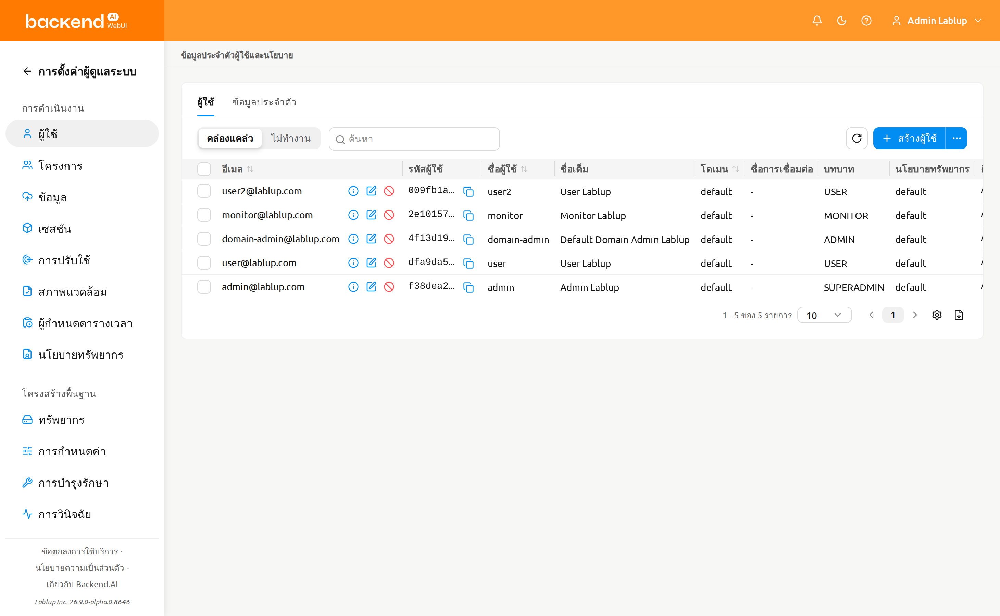
การดูและจัดการรายชื่อผู้ใช้#
สามารถสร้างผู้ใช้ได้โดยคลิกปุ่ม '+ สร้างผู้ใช้' โปรดทราบว่ารหัสผ่านต้องมีความยาว 8 ตัวอักษรขึ้นไป และต้องมีตัวอักษร ตัวอักขระพิเศษ และตัวเลขอย่างน้อยอย่างละ 1 ตัว ความยาวสูงสุดที่อนุญาตสำหรับ E-Mail, Username และชื่อเต็ม คือ 64 ตัวอักษร
หากผู้ใช้ที่มีอีเมลหรือชื่อผู้ใช้งานเดียวกันมีอยู่แล้ว จะไม่สามารถสร้างบัญชีผู้ใช้ได้ กรุณาลองใช้อีเมลและชื่อผู้ใช้งานอื่น
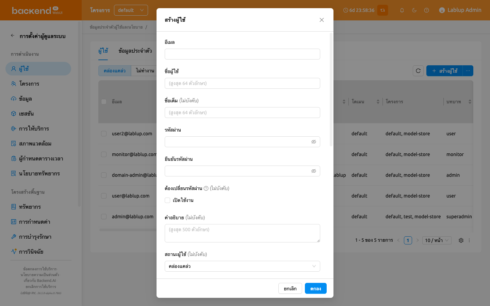
ตรวจสอบว่าผู้ใช้ถูกสร้างแล้ว
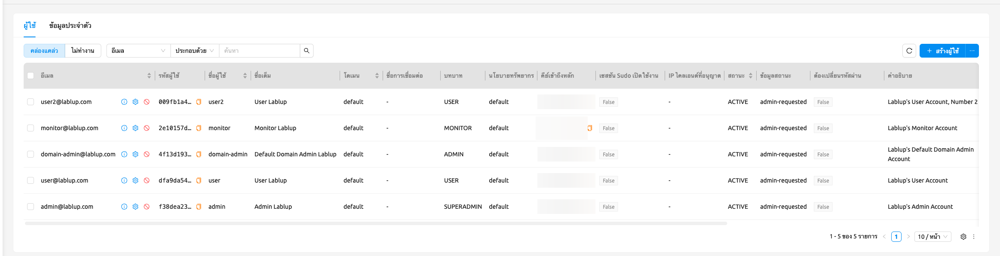
คลิกไอคอนข้อมูลในแถวคอลัมน์ อีเมล ของผู้ใช้นั้น เพื่อดูข้อมูลผู้ใช้โดยละเอียด คุณยังสามารถตรวจสอบข้อมูลโดเมนและโปรเจกต์ที่ผู้ใช้สังกัดอยู่ได้
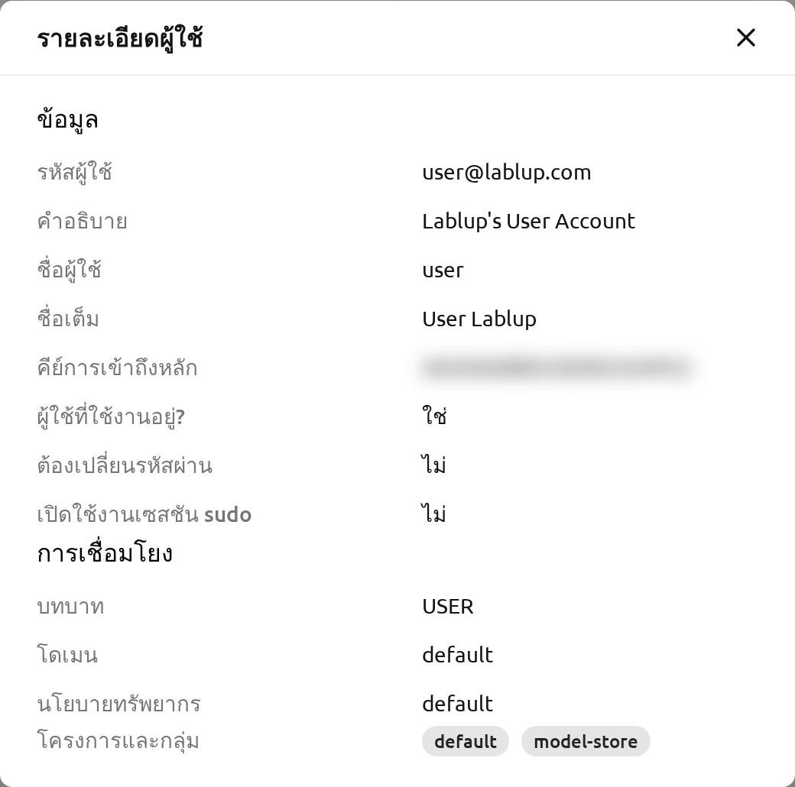
คลิกไอคอน แก้ไข (ดินสอ) ในแถวคอลัมน์ อีเมล ของผู้ใช้นั้น เพื่อเปลี่ยนการตั้งค่าของผู้ใช้ที่มีอยู่แล้ว สามารถเปลี่ยนชื่อผู้ใช้ รหัสผ่าน สถานะการเปิดใช้งาน เป็นต้น User ID (อีเมล) ไม่สามารถเปลี่ยนแปลงได้ คลิก บันทึก เพื่อใช้การเปลี่ยนแปลง
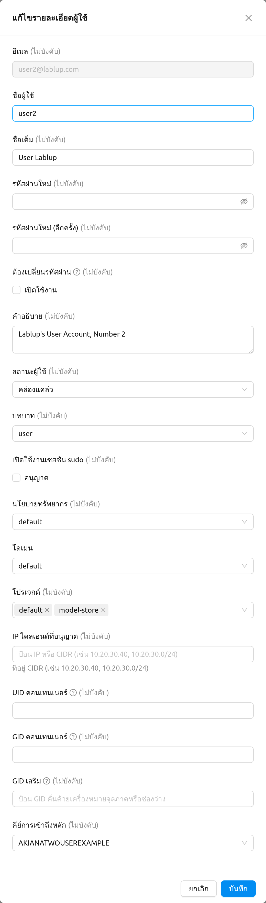
กล่องโต้ตอบสร้าง/แก้ไขผู้ใช้ประกอบด้วยฟิลด์ต่อไปนี้:
อีเมล: ที่อยู่อีเมลของผู้ใช้ ใช้เป็น ID สำหรับเข้าสู่ระบบ ไม่สามารถเปลี่ยนแปลงได้หลังจากสร้างแล้ว
ชื่อผู้ใช้: ตัวระบุเฉพาะของผู้ใช้ (สูงสุด 64 ตัวอักษร)
ชื่อเต็ม: ชื่อที่แสดงของผู้ใช้ (สูงสุด 64 ตัวอักษร)
รหัสผ่าน: ต้องมีอย่างน้อย 8 ตัวอักษร และมีตัวอักษร ตัวอักขระพิเศษ และตัวเลขอย่างน้อยอย่างละ 1 ตัว
ต้องเปลี่ยนรหัสผ่าน: หากผู้ดูแลระบบเลือกรหัสผ่านแบบสุ่มขณะสร้างผู้ใช้เป็นกลุ่ม ฟิลด์นี้สามารถตั้งค่าเป็น ON เพื่อบ่งบอกว่าจำเป็นต้องเปลี่ยนรหัสผ่าน ผู้ใช้จะเห็นแถบด้านบนที่แจ้งให้อัปเดตรหัสผ่าน แต่นี่เป็นเพียงแฟล็กอธิบายซึ่งไม่มีผลต่อการใช้งานจริง
คำอธิบาย: คำอธิบายเพิ่มเติมสำหรับผู้ใช้ (สูงสุด 500 ตัวอักษร)
สถานะผู้ใช้: แสดงสถานะของผู้ใช้ ผู้ใช้ไม่ทำงานไม่สามารถเข้าสู่ระบบได้ ก่อนการตรวจสอบเป็นสถานะที่บ่งบอกว่าผู้ใช้ต้องดำเนินการเพิ่มเติมเพื่อเปิดใช้งานบัญชี เช่น การยืนยันอีเมลหรือการอนุมัติจากผู้ดูแลระบบ ผู้ใช้ไม่ทำงานจะแสดงแยกในแท็บไม่ทำงาน
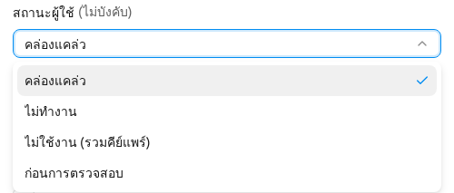
รูปที่ 24.6 บทบาท: บทบาทของผู้ใช้ (user, admin, superadmin) ตัวเลือกที่มีจะขึ้นอยู่กับสิทธิ์ของผู้ใช้ปัจจุบัน
เปิดใช้งานเซสชัน sudo: อนุญาตให้ผู้ใช้ใช้ sudo ในเซสชันการคำนวณ สิ่งนี้มีประโยชน์เมื่อผู้ใช้ต้องติดตั้งแพ็กเกจหรือรันคำสั่งที่ต้องใช้สิทธิ์ root อย่างไรก็ตาม ไม่แนะนำให้เปิดใช้ตัวเลือกนี้สำหรับผู้ใช้ทุกคน เนื่องจากอาจทำให้เกิดปัญหาด้านความปลอดภัย
2FA Enabled: แฟล็กที่บ่งบอกว่าผู้ใช้ใช้การยืนยันตัวตนแบบสองปัจจัยหรือไม่ เมื่อใช้การยืนยันตัวตนแบบสองปัจจัย ผู้ใช้จะต้องกรอกรหัส OTP เพิ่มเติมเมื่อเข้าสู่ระบบ ผู้ดูแลระบบสามารถปิดการยืนยันตัวตนแบบสองปัจจัยของผู้ใช้อื่นได้เท่านั้น
นโยบายทรัพยากร: เลือกนโยบายทรัพยากรผู้ใช้ที่ผู้ใช้สังกัดได้ สำหรับข้อมูลเพิ่มเติมเกี่ยวกับนโยบายทรัพยากรผู้ใช้ โปรดดูที่ส่วน นโยบายทรัพยากรผู้ใช้
โดเมน: โดเมนที่ผู้ใช้สังกัด สามารถกำหนดหรือแก้ไขได้ทั้งขณะสร้างผู้ใช้ใหม่และแก้ไขผู้ใช้
โปรเจกต์: เลือกโปรเจกต์หนึ่งรายการขึ้นไปที่ผู้ใช้จะสังกัด โปรเจกต์ที่มีจะขึ้นอยู่กับโดเมนที่เลือก
IP ไคลเอนต์ที่อนุญาต: จำกัดที่อยู่ IP ที่สามารถเข้าถึงระบบโดยใช้บัญชีผู้ใช้นี้ ป้อนที่อยู่ IP หรือ CIDR (เช่น
10.20.30.40,10.20.30.0/24) หากเว้นว่างไว้ อนุญาตให้เข้าถึงจาก IP ใดก็ได้UID คอนเทนเนอร์: User ID ตัวเลขที่กำหนดให้กับกระบวนการภายในคอนเทนเนอร์ มีประโยชน์เมื่อคอนเทนเนอร์ต้องตรงกับ UID เฉพาะสำหรับวัตถุประสงค์ด้านสิทธิ์ไฟล์
GID คอนเทนเนอร์: Group ID ตัวเลขเริ่มต้นที่กำหนดให้กับกระบวนการภายในคอนเทนเนอร์
GID เสริม: Group ID ตัวเลขเพิ่มเติมที่กำหนดให้กับกระบวนการคอนเทนเนอร์ ป้อน GID หลายตัวโดยคั่นด้วยเครื่องหมายจุลภาค
คีย์การเข้าถึงหลัก: (แก้ไขเท่านั้น) เลือกคีย์การเข้าถึงหลักที่ใช้สำหรับการยืนยันตัวตน API จากคีย์แพร์ของผู้ใช้
ในรายการผู้ใช้ คอลัมน์ที่มีหลายค่า ได้แก่ IP ไคลเอนต์ที่อนุญาต และ GID เสริม จะแสดงค่าแรกไว้ในบรรทัด และย่อค่าที่เหลือไว้หลังแท็ก +N วางเมาส์เหนือแท็กเพื่อดูรายการทั้งหมดโดยไม่ต้องขยายความกว้างของคอลัมน์
สร้างผู้ใช้แบบกลุ่ม#
เมื่อคุณต้องการสร้างบัญชีผู้ใช้หลายบัญชีพร้อมกัน คุณสามารถใช้ฟีเจอร์สร้างผู้ใช้
แบบกลุ่มได้ ปุ่มดรอปดาวน์จุดไข่ปลา (...) จะปรากฏ
ข้างปุ่ม สร้างผู้ใช้ ในหน้าผู้ใช้ คลิกปุ่มดรอปดาวน์นี้แล้วเลือก
สร้างผู้ใช้แบบกลุ่ม เพื่อเปิดไดอะล็อกการสร้างแบบกลุ่ม
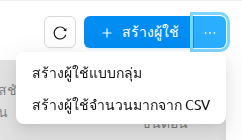
ไดอะล็อกการสร้างแบบกลุ่มประกอบด้วยฟิลด์ต่อไปนี้ แบนเนอร์แจ้งเตือนที่ด้านบนของ ไดอะล็อกจะอธิบายว่าอีเมลและชื่อผู้ใช้จะถูกสร้างโดยอัตโนมัติโดยเติมเลขลำดับแบบ zero-padded ต่อท้ายส่วนนำหน้า
- ส่วนที่อยู่ก่อน @ ของอีเมล: ส่วนนำหน้าของที่อยู่อีเมลที่สร้างโดยอัตโนมัติ ใช้ได้เฉพาะตัวอักษร ตัวเลข จุด ยัติภังค์ หรือขีดล่างเท่านั้น (สูงสุด 30 ตัวอักษร)
- ส่วนต่อท้ายอีเมล (หลัง @): ส่วนโดเมนของที่อยู่อีเมลที่สร้างโดยอัตโนมัติ
ฟิลด์นี้จะแสดงเครื่องหมาย
@นำหน้าโดยอัตโนมัติ (สูงสุด 30 ตัวอักษร) - จำนวนผู้ใช้: จำนวนบัญชีผู้ใช้ที่ต้องการสร้าง (1 ถึง 100) ด้านล่างฟิลด์นี้จะ
แสดงตัวอย่างอีเมลที่จะสร้างแบบเรียลไทม์ หากมี 4 คนหรือน้อยกว่าจะแสดงอีเมล
ทั้งหมด หากมากกว่า 4 คนจะแสดง 2 รายการแรก จุดไข่ปลา และรายการสุดท้าย
(เช่น
student01@example.com, student02@example.com ... student10@example.com) - รหัสผ่าน: รหัสผ่านเริ่มต้นที่ใช้ร่วมกันสำหรับผู้ใช้ทั้งหมดที่สร้าง กฎรหัสผ่าน เดียวกันกับการสร้างผู้ใช้แบบเดี่ยวจะถูกนำมาใช้ (อย่างน้อย 8 ตัวอักษร ประกอบด้วย ตัวอักษร อักขระพิเศษ และตัวเลขอย่างน้อยอย่างละ 1 ตัว)
- ต้องเปลี่ยนรหัสผ่าน: ตั้งค่าเริ่มต้นเป็น ON สำหรับการสร้างแบบกลุ่ม เมื่อเปิดใช้งาน ผู้ใช้แต่ละคนจะได้รับแจ้งให้เปลี่ยนรหัสผ่านเมื่อเข้าสู่ระบบครั้งแรก
- ฟิลด์ที่เหลือ (สถานะ, บทบาท, เปิดใช้งานเซสชัน sudo, นโยบายทรัพยากร, โดเมน, โปรเจกต์, IP ไคลเอนต์ที่อนุญาต ฯลฯ) จะเหมือนกับการสร้างผู้ใช้แบบเดี่ยว ดูที่ส่วน การดูและจัดการรายชื่อผู้ใช้
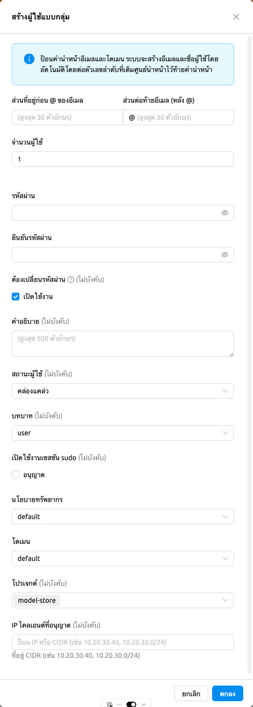
ชื่อผู้ใช้และที่อยู่อีเมลจะถูกสร้างโดยอัตโนมัติตามส่วนนำหน้าและส่วนต่อท้ายที่คุณระบุ
เช่น หากคุณตั้งส่วนนำหน้าอีเมลเป็น student ส่วนต่อท้ายอีเมลเป็น example.com
และจำนวนผู้ใช้เป็น 10 บัญชีต่อไปนี้จะถูกสร้างขึ้น:
| ชื่อผู้ใช้ | อีเมล |
|---|---|
student01 |
student01@example.com |
student02 |
student02@example.com |
| ... | ... |
student10 |
student10@example.com |
เลขลำดับจะถูกเติม zero-padding ตามจำนวนผู้ใช้ทั้งหมด เช่น 3 คนจะได้
student1 ถึง student3, 10 คนจะได้ student01 ถึง student10, 100 คนจะได้
student001 ถึง student100
หากชื่อผู้ใช้หรือที่อยู่อีเมลที่สร้างขึ้นบางส่วนมีอยู่แล้ว การดำเนินการจะสำเร็จ บางส่วน ข้อความจะแสดงจำนวนผู้ใช้ที่สร้างสำเร็จและจำนวนที่ล้มเหลว พร้อมทั้งแสดงรายการผู้ใช้ที่ไม่สามารถสร้างได้และเหตุผลของแต่ละรายการ
สร้างผู้ใช้แบบกลุ่มจาก CSV#
นอกจากการสร้างผู้ใช้แบบกลุ่มโดยตรงแล้ว คุณยังสามารถสร้างผู้ใช้ได้โดยการอัปโหลดไฟล์ CSV คลิกปุ่มดรอปดาวน์จุดไข่ปลา (...) ถัดจากปุ่ม สร้างผู้ใช้ และเลือก สร้างผู้ใช้แบบกลุ่มจาก CSV เพื่อเปิดไดอะล็อกอัปโหลด CSV
การเตรียมไฟล์ CSV#
ไฟล์ CSV ต้องใช้การเข้ารหัส UTF-8 แถวแรกต้องเป็นแถวหัวตาราง ชื่อหัวตารางจะถูกจับคู่โดยไม่คำนึงถึงตัวพิมพ์เล็กหรือใหญ่ คุณสามารถดาวน์โหลดเทมเพลตพร้อมใช้งานได้โดยคลิก ดาวน์โหลดเทมเพลต CSV ภายในไดอะล็อก
คอลัมน์ที่จำเป็น:
- email: ที่อยู่อีเมลของผู้ใช้ ใช้เป็น ID สำหรับเข้าสู่ระบบ
- username: ชื่อผู้ใช้เฉพาะสำหรับผู้ใช้
ไฟล์ที่ขาดคอลัมน์ใดคอลัมน์หนึ่งในสองคอลัมน์นี้จะถูกปฏิเสธ และไดอะล็อกจะระบุว่าขาดคอลัมน์ใด
คอลัมน์ที่เลือกได้:
- password: รหัสผ่านเริ่มต้น กฎรหัสผ่านเดียวกันกับการสร้างผู้ใช้แบบเดี่ยวจะถูกนำมาใช้ (อย่างน้อย 8 ตัวอักษร ประกอบด้วยตัวอักษร อักขระพิเศษ และตัวเลขอย่างน้อยอย่างละ 1 ตัว) ทุกบัญชียังคงต้องมีรหัสผ่าน แต่ไม่จำเป็นต้องมาจากไฟล์ ดูหมายเหตุด้านล่าง
- full_name: ชื่อที่แสดงของผู้ใช้
- role: บทบาทของผู้ใช้ (
user,adminหรือsuperadmin) ค่าเริ่มต้นคือuserหากไม่ระบุ - status: สถานะเริ่มต้นของผู้ใช้ (
activeหรือinactive) ค่าเริ่มต้นคือactiveหากไม่ระบุ - domain_name: โดเมนที่จะกำหนดให้ผู้ใช้ ค่าเริ่มต้นคือโดเมนปัจจุบันหากไม่ระบุ
- description: คำอธิบายเพิ่มเติมสำหรับผู้ใช้
- need_password_change: ผู้ใช้ต้องเปลี่ยนรหัสผ่านเมื่อเข้าสู่ระบบครั้งแรกหรือไม่ (
trueหรือfalse) ค่าเริ่มต้นคือtrueหากไม่ระบุ - resource_policy: ชื่อนโยบายทรัพยากรที่จะกำหนด
- project: ชื่อโปรเจกต์ที่จะเพิ่มผู้ใช้เข้าร่วม
การอัปโหลดและตรวจสอบ#
ด้านซ้ายของไดอะล็อกมีแผง ค่าเริ่มต้น ค่าที่คุณกำหนดไว้ที่นั่นจะถูกเติมลงในฟิลด์ที่เว้นว่างไว้ในทุกแถว จึงไม่ต้องพิมพ์ค่าเดิมซ้ำในทุกเซลล์ของ CSV แผงนี้ครอบคลุม โดเมน, โปรเจกต์, นโยบายทรัพยากรผู้ใช้, รหัสผ่าน, ต้องเปลี่ยนรหัสผ่าน และ คำอธิบาย ฟิลด์ที่คุณไม่ได้กำหนดจะแสดงว่า ไม่มีค่าเริ่มต้น
หลังจากเลือกไฟล์ CSV ไดอะล็อกจะแสดงตารางตัวอย่างที่แสดงรายการแถวทั้งหมดพร้อมตัวบ่งชี้ดังนี้:
- แถวที่มีข้อมูลถูกต้องจะแสดงตามปกติ
- แถวที่มีข้อผิดพลาดด้านรูปแบบหรือการตรวจสอบความถูกต้องจะถูกไฮไลต์พร้อมข้อความข้อผิดพลาดในตำแหน่งของฟิลด์ เพื่อให้คุณสามารถแก้ไขไฟล์ต้นฉบับก่อนลองใหม่
- สรุปที่ด้านบนของตัวอย่างจะแสดงจำนวนแถวที่ถูกต้องและไม่ถูกต้องทั้งหมด
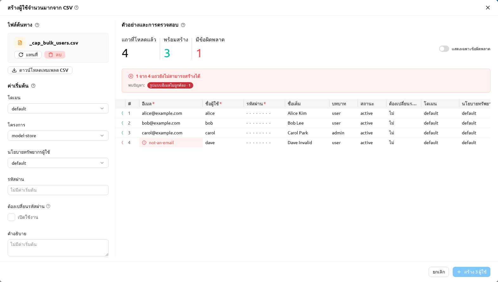
ไฟล์ CSV ที่ไม่มีคอลัมน์ password เช่น ไฟล์ที่ส่งออกจากรายการผู้ใช้ จะโหลดได้ตามปกติ แถวเหล่านั้นจะแสดงข้อผิดพลาดรายแถวว่า จำเป็นต้องระบุรหัสผ่าน และปุ่มสร้างจะยังคงถูกปิดใช้งานตราบใดที่ยังมีแถวที่มีข้อผิดพลาดนี้ เมื่อกรอกรหัสผ่านในแผง ค่าเริ่มต้น ตัวอย่างจะอัปเดตทันที ข้อผิดพลาดจะหายไปและปุ่มจะใช้งานได้ โดยไม่ต้องอัปโหลดไฟล์ใหม่
การสร้างผู้ใช้#
เมื่อตรวจสอบตัวอย่างแล้วและยืนยันว่าทุกแถวถูกต้อง ให้คลิก สร้างผู้ใช้ N คน เพื่อส่ง หากบางแถวล้มเหลวฝั่งเซิร์ฟเวอร์ (เช่น เนื่องจากอีเมลหรือชื่อผู้ใช้มีอยู่แล้ว) ไดอะล็อกจะยังคงเปิดอยู่และแสดงรายการข้อผิดพลาดแต่ละแถวเพื่อให้คุณระบุและแก้ไขข้อขัดแย้งได้
หากมีเพียงบางแถวที่สำเร็จ ระบบจะแสดงข้อความ N ผู้ใช้ถูกสร้างสำเร็จ. M ผู้ใช้สร้างไม่สำเร็จ. และเปิดรายการที่ล้มเหลวขึ้นเหนือไดอะล็อก โดยแสดงอีเมล ชื่อผู้ใช้ และข้อผิดพลาดที่ได้รับของผู้ใช้ทุกรายที่ไม่สามารถสร้างได้ หากมีบัญชีบางส่วนที่ถูกสร้างขึ้น รายการคีย์แพร์ที่สร้างขึ้นจะแสดงก่อน แล้วรายการที่ล้มเหลวจะแสดงต่อเมื่อคุณปิดรายการดังกล่าว บัญชีที่สร้างสำเร็จแล้วจะยังคงอยู่ ดังนั้นคุณเพียงแก้ไขแถวที่ถูกรายงานเท่านั้น
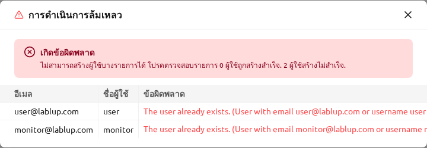
หากบางแถวล้มเหลว เฉพาะแถวที่สำเร็จเท่านั้นที่จะส่งผลให้มีบัญชีใหม่ แถวที่ล้มเหลวจะถูกรายงานแยกกัน แก้ไข CSV ต้นฉบับและอัปโหลดใหม่เพื่อสร้างบัญชีที่เหลือ
แก้ไขผู้ใช้เป็นชุด#
เมื่อต้องเปลี่ยนค่าเดียวกันให้กับหลายบัญชี เช่น ย้ายไปยังโดเมนหรือโปรเจกต์อื่น เปลี่ยนนโยบายทรัพยากร หรือกำหนด UID/GID ของคอนเทนเนอร์ คุณสามารถแก้ไขทั้งหมดในครั้งเดียวแทนที่จะเปิดผู้ใช้ทีละราย
- เลือกผู้ใช้ที่ต้องการเปลี่ยนด้วยช่องทำเครื่องหมายในรายการผู้ใช้
- จำนวนที่เลือกจะปรากฏบนแถบเครื่องมือ คลิกปุ่มแก้ไข (ดินสอ) ที่อยู่ถัดไป
- ไดอะล็อก แก้ไขผู้ใช้เป็นชุด จะเปิดขึ้น
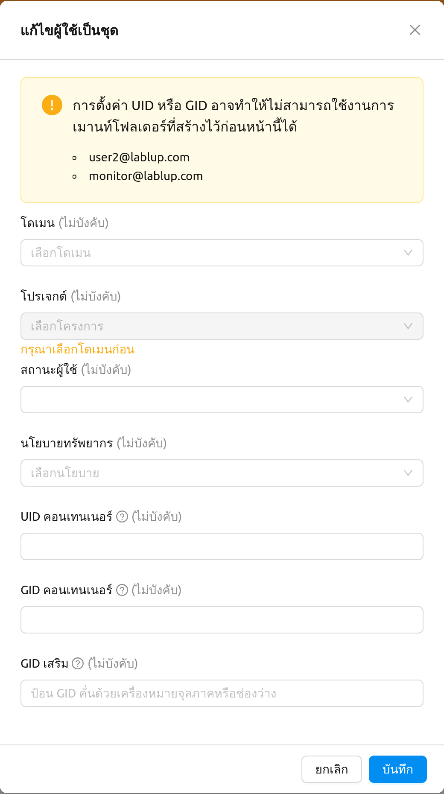
การแจ้งเตือนที่ด้านบนของไดอะล็อกจะแสดงรายชื่ออีเมลของผู้ใช้ทุกคนที่การเปลี่ยนแปลงจะมีผล เพื่อให้คุณยืนยันรายการที่เลือกก่อนดำเนินการ นอกจากนี้ยังเตือนว่าการตั้งค่า UID หรือ GID อาจทำให้ไม่สามารถใช้งานการเมานท์โฟลเดอร์ที่สร้างไว้ก่อนหน้านี้ได้
ไดอะล็อกมีฟิลด์ต่อไปนี้ ฟิลด์ที่คุณไม่ได้แก้ไขจะไม่ถูกเปลี่ยนแปลงในผู้ใช้ที่เลือกไว้:
- โดเมน: ย้ายผู้ใช้ที่เลือกไปยังโดเมนอื่น การเปลี่ยนค่านี้จะล้างการเลือก โปรเจกต์
- โปรเจกต์: กำหนดผู้ใช้ที่เลือกให้กับโปรเจกต์หนึ่งรายการขึ้นไป ต้องเลือกโดเมนก่อน
- สถานะผู้ใช้: ตั้งค่าบัญชีเป็นใช้งาน ไม่ใช้งาน ไม่ใช้งาน (รวมคีย์แพร์) หรือก่อนการตรวจสอบ
- นโยบายทรัพยากร: ใช้นโยบายทรัพยากรผู้ใช้กับทุกบัญชีที่เลือก
- UID คอนเทนเนอร์, GID คอนเทนเนอร์, GID เสริม: กำหนด ID ตัวเลขที่ให้กับกระบวนการภายในคอนเทนเนอร์
เมื่อดำเนินการเสร็จ ระบบจะแจ้งว่ามีผู้ใช้กี่รายจากที่เลือกไว้ที่ได้รับการอัปเดต บัญชีที่เปลี่ยนแปลงไม่สำเร็จจะถูกรายงานแยกพร้อมข้อผิดพลาดของตัวเอง
ปิดใช้งานบัญชีผู้ใช้#
เพื่อติดตามสถิติการใช้งานต่อผู้ใช้ เก็บรักษาเมตริก และป้องกันการสูญเสียบัญชีโดยไม่ตั้งใจ วิธีที่แนะนำในการหยุดไม่ให้ผู้ใช้เข้าสู่ระบบคือการ ปิดใช้งาน บัญชีแทนการลบ การปิดใช้งานจะเก็บรักษาเรกคอร์ดของผู้ใช้ไว้ครบถ้วนในขณะที่บล็อกการลงชื่อเข้าใช้ หากต้องการปิดใช้งานผู้ใช้ ให้คลิกไอคอนปิดใช้งานในแถวของผู้ใช้ในคอลัมน์ อีเมล ป๊อปโอเวอร์สำหรับยืนยันจะปรากฏขึ้น คลิกปุ่ม ปิดใช้งาน เพื่อปิดใช้งานผู้ใช้
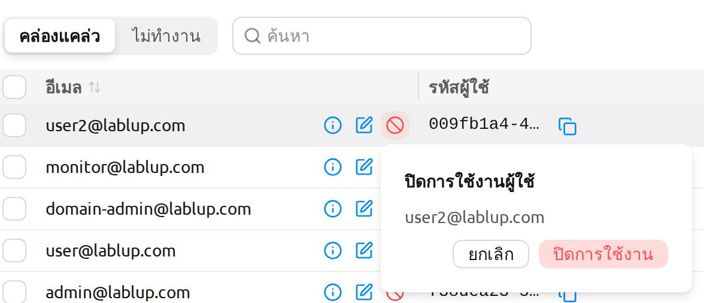
หากต้องการเปิดใช้งานผู้ใช้อีกครั้ง ให้ไปที่แท็บ ไม่ทำงาน ในหน้าผู้ใช้ และคลิก ไอคอนเปิดใช้งาน (กู้คืน) ในแถวของผู้ใช้ในคอลัมน์ อีเมล ป๊อปโอเวอร์สำหรับยืนยัน จะปรากฏขึ้น คลิกปุ่ม เปิดใช้งาน เพื่อเปิดใช้งานผู้ใช้อีกครั้ง
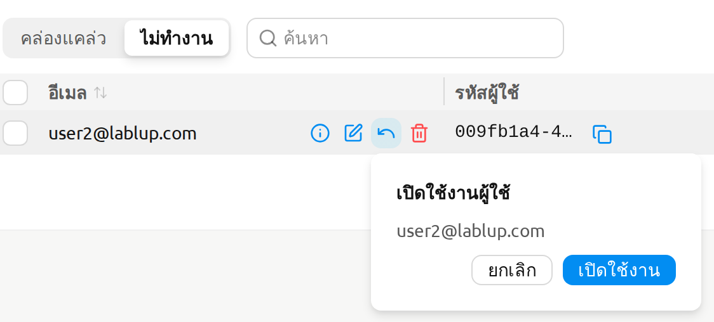
โปรดทราบว่าการปิดใช้งานหรือเปิดใช้งานผู้ใช้อีกครั้งไม่ได้เปลี่ยนข้อมูลรับรองของผู้ใช้ เนื่องจากบัญชีผู้ใช้อาจมีคีย์แพร์หลายรายการ ซึ่งทำให้ยากที่จะตัดสินใจว่าควรเปิดใช้งาน ข้อมูลรับรองใดอีกครั้ง
แม้ว่าการจัดการบัญชีในชีวิตประจำวันจะอาศัยการปิดใช้งาน แต่ superadmin สามารถ ลบบัญชีที่ถูกปิดใช้งานไปแล้วออกอย่างถาวรได้ โดยใช้ฟีเจอร์ลบถาวร (Purge) ที่อธิบายไว้ด้านล่าง
ลบผู้ใช้ที่ไม่ใช้งานอย่างถาวร#
superadmin สามารถลบบัญชีผู้ใช้ที่ถูกปิดใช้งานไปแล้วออกอย่างถาวร (purge) ได้ การลบถาวรใช้ได้ เฉพาะ กับผู้ใช้ในแท็บ ไม่ทำงาน เท่านั้น ผู้ใช้ที่ใช้งานอยู่ ต้องถูกปิดใช้งานก่อน ต่างจากการปิดใช้งาน การลบถาวรไม่สามารถยกเลิกได้ และจะลบข้อมูลที่เกี่ยวข้องของผู้ใช้ออกด้วย
ในหน้าผู้ใช้ ให้สลับไปที่แท็บ ไม่ทำงาน (ตัวเลือกสถานะจะแสดงเป็น ไม่ใช้งาน (รวมคีย์แพร์) เพื่อระบุว่าการลบถาวรจะส่งผลต่อคีย์แพร์ของผู้ใช้ด้วย) คุณสามารถลบผู้ใช้อย่างถาวรได้สองวิธี:
- ลบถาวรทีละผู้ใช้: คลิกไอคอนถังขยะ (ลบถาวร) ในแถวของผู้ใช้ที่ไม่ใช้งานหนึ่งราย ในคอลัมน์ อีเมล
- ลบถาวรแบบกลุ่ม: เลือกผู้ใช้ที่ไม่ใช้งานหนึ่งรายหรือมากกว่าด้วยช่องทำเครื่องหมายของแถว จากนั้นคลิกปุ่ม ลบผู้ใช้อย่างถาวร (ปุ่มถังขยะที่ปรากฏถัดจากจำนวนที่เลือก)
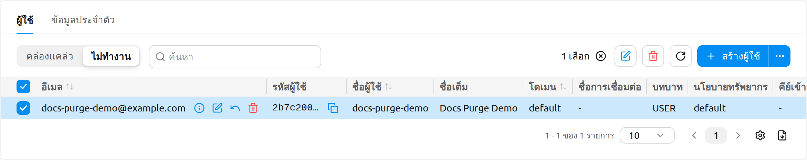
ทั้งสองการกระทำจะเปิดโมดัลยืนยัน ลบผู้ใช้อย่างถาวร เนื่องจากการดำเนินการนี้ ไม่สามารถยกเลิกได้ คุณต้องพิมพ์วลียืนยันที่แสดงในโมดัลก่อนที่ปุ่มลบจะเปิดใช้งาน โมดัลยังมีตัวเลือกสองอย่าง:
- ต้องการลบโฟลเดอร์เสมือนที่แชร์ด้วยหรือไม่?: เมื่อเลือก โฟลเดอร์เสมือนที่ผู้ใช้ ที่ถูกลบถาวรแชร์ไว้จะถูกลบด้วย เมื่อไม่เลือก โฟลเดอร์เหล่านั้นจะยังคงอยู่
- ต้องการลบ deployment ที่สร้างไว้ด้วยหรือไม่?: เมื่อเลือก deployment ที่ผู้ใช้ ที่ถูกลบถาวรสร้างไว้จะถูกลบด้วย เมื่อไม่เลือก deployment เหล่านั้นจะไม่ถูกลบ แต่จะมอบหมายความเป็นเจ้าของแทน
การลบผู้ใช้อย่างถาวร ไม่สามารถยกเลิกได้ โฟลเดอร์เสมือน ประวัติการใช้งานเคอร์เนล และคีย์แพร์ที่เกี่ยวข้องของผู้ใช้จะถูกลบด้วย โปรดตรวจสอบให้แน่ใจว่าคุณเลือกผู้ใช้ ที่ถูกต้องก่อนยืนยัน
จัดการคีย์แพร์ของผู้ใช้#
โดยปกติบัญชีผู้ใช้แต่ละบัญชีจะมีคีย์แพร์หนึ่งรายการหรือมากกว่า คีย์แพร์ใช้สำหรับ ยืนยันตัวตนผ่าน API ไปยังเซิร์ฟเวอร์ Backend.AI หลังจากที่ผู้ใช้เข้าสู่ระบบ การเข้าสู่ระบบ ต้องมีการยืนยันตัวตนผ่านอีเมลและรหัสผ่านของผู้ใช้ แต่ทุกคำขอที่ผู้ใช้ส่งไปยัง เซิร์ฟเวอร์จะได้รับการยืนยันตัวตนตามคีย์แพร์
ผู้ใช้สามารถมีคีย์แพร์หลายรายการได้ แต่เพื่อลดภาระของผู้ใช้ในการจัดการคีย์แพร์ ปัจจุบันเราใช้คีย์แพร์เพียงหนึ่งรายการของผู้ใช้ในการส่งคำขอเท่านั้น นอกจากนี้ เมื่อคุณสร้างผู้ใช้ใหม่ คีย์แพร์จะถูกสร้างโดยอัตโนมัติ ดังนั้นคุณจึง ไม่จำเป็นต้องสร้างและกำหนดคีย์แพร์ด้วยตนเองในกรณีส่วนใหญ่
คีย์แพร์สามารถแสดงในแท็บข้อมูลประจำตัวของหน้าผู้ใช้ คีย์แพร์ที่ใช้งานอยู่จะแสดง ทันที และหากต้องการดูคีย์แพร์ที่ไม่ได้ใช้งาน ให้คลิก ไม่ทำงาน ที่ด้านบนของตาราง
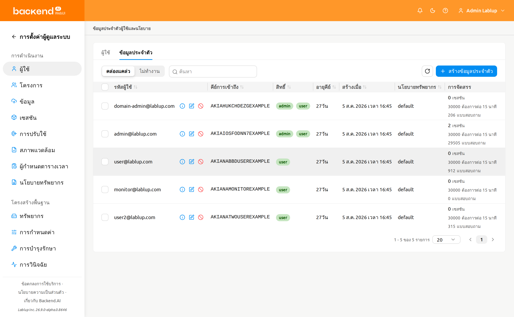
เช่นเดียวกับในแท็บผู้ใช้ คุณสามารถใช้ปุ่มอินไลน์ในแถวของคีย์แพร์เพื่อดูหรือ แก้ไขรายละเอียดคีย์แพร์ คลิกปุ่มไอคอนข้อมูลเพื่อดูรายละเอียดเฉพาะของคีย์แพร์ หากจำเป็น คุณสามารถคัดลอก secret key ได้โดยคลิกปุ่มคัดลอก
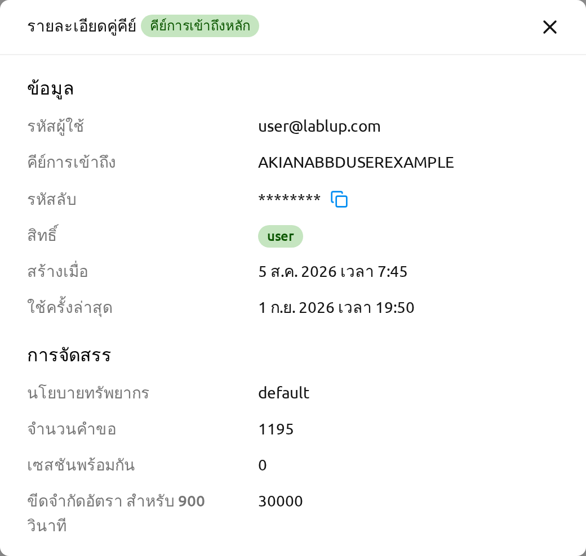
คุณสามารถเปลี่ยนนโยบายทรัพยากรและขีดจำกัดอัตราของคีย์แพร์ได้โดยคลิกปุ่ม แก้ไข (ดินสอ) ในแถวของคีย์แพร์ ไดอะล็อกมีชื่อว่า อัปเดตนโยบายทรัพยากรคู่คีย์ และคลิก บันทึก เพื่อใช้การเปลี่ยนแปลง โปรดทราบว่าหากค่า ขีดจำกัดอัตรา น้อยเกินไป การดำเนินการ API เช่น การเข้าสู่ระบบอาจถูกบล็อก
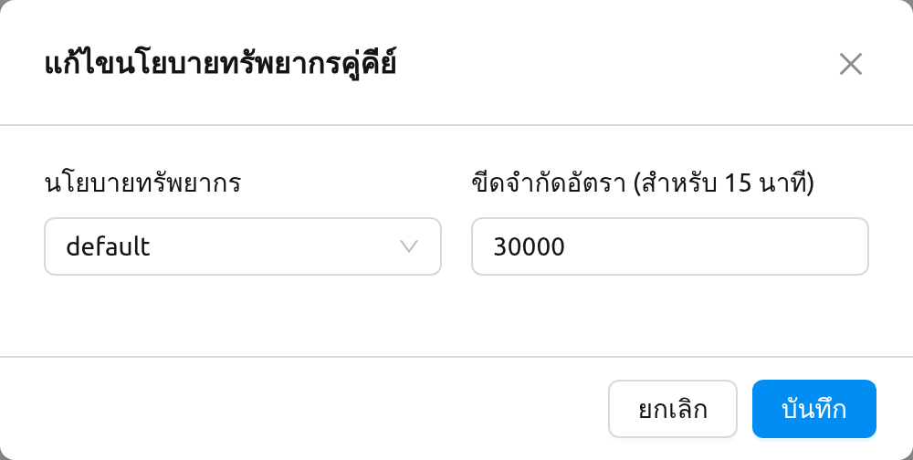
คุณสามารถปิดใช้งานหรือเปิดใช้งานคีย์แพร์ได้โดยคลิกปุ่ม ปิดการใช้งาน หรือปุ่ม เปิดใช้งาน ในแถวของคีย์แพร์
ต่างจากแท็บผู้ใช้ แท็บไม่ทำงานอนุญาตให้ลบคีย์แพร์อย่างถาวรได้
อย่างไรก็ตาม คุณไม่สามารถลบคีย์แพร์อย่างถาวรได้หากคีย์แพร์นั้นกำลังถูกใช้เป็นคีย์การเข้าถึงหลักของผู้ใช้
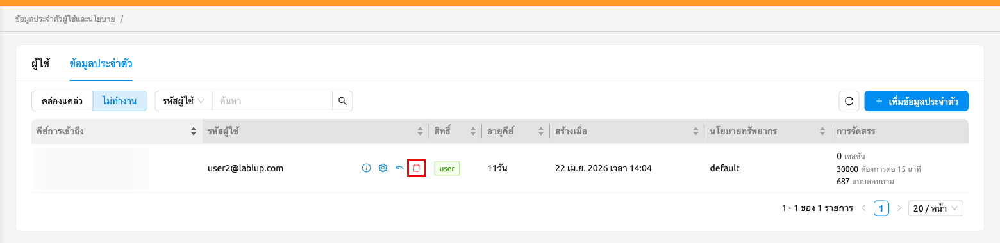
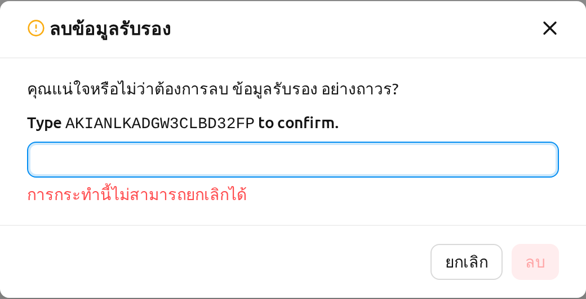
เปิดหรือปิดการใช้งานข้อมูลประจำตัวหลายรายการพร้อมกัน#
แทนที่จะดำเนินการทีละแถว คุณสามารถเปลี่ยนสถานะของคีย์แพร์หลายรายการได้ในขั้นตอนเดียว:
- เลือกคีย์แพร์ด้วยช่องทำเครื่องหมายของแถว
- จำนวนที่เลือกจะปรากฏบนแถบเครื่องมือ ตามด้วยปุ่มเปลี่ยนสถานะ — ปิดการใช้งาน ในแท็บที่ใช้งานอยู่ และ เปิดใช้งาน ในแท็บไม่ทำงาน
- คลิกปุ่มนั้น ไดอะล็อกยืนยันจะระบุจำนวนข้อมูลประจำตัวที่ได้รับผลกระทบ และความหมายของการเปลี่ยนแปลงต่อเจ้าของ
- ยืนยันเพื่อใช้การเปลี่ยนแปลง
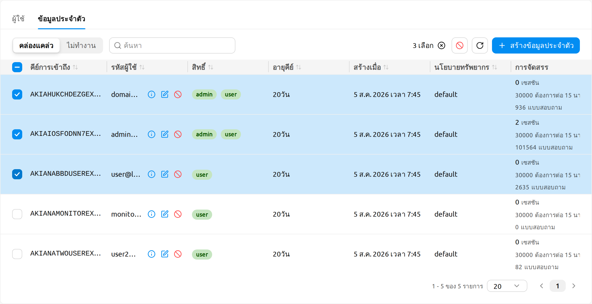
หากสำเร็จเพียงบางส่วน ข้อความผลลัพธ์จะรายงานจำนวนข้อมูลประจำตัวที่เปลี่ยนแปลงสำเร็จและจำนวนที่ล้มเหลว รายการที่เลือกจะถูกล้างเมื่อคุณสลับแท็บ เปลี่ยนตัวกรอง เรียงลำดับตาราง หรือย้ายไปหน้าอื่น
สร้างข้อมูลประจำตัว#
หากคุณลบคีย์แพร์โดยไม่ได้ตั้งใจ คุณสามารถสร้างคีย์แพร์ใหม่สำหรับผู้ใช้ได้โดย คลิกปุ่ม สร้างข้อมูลประจำตัว ที่มุมบนขวา
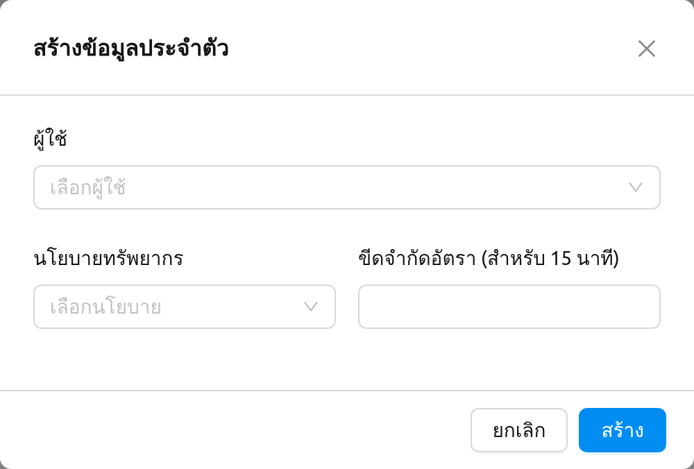
ไดอะล็อกมีฟิลด์ต่อไปนี้:
ผู้ใช้: รายการตัวเลือกที่ค้นหาได้ซึ่งแสดงบัญชีผู้ใช้ที่มีอยู่ เริ่มพิมพ์เพื่อจำกัดรายการ แล้วเลือกบัญชี ที่จะเป็นเจ้าของคีย์แพร์ใหม่ เนื่องจากเลือกบัญชีจากรายการ จึงไม่สามารถส่งที่อยู่ที่ไม่มีผู้ใช้จริงได้อีกต่อไป
นโยบายทรัพยากร: นโยบายทรัพยากรคู่คีย์ที่จะใช้กับคีย์แพร์ใหม่
ขีดจำกัดอัตรา (ต่อ 15 นาที): จำนวนคำขอสูงสุดที่สามารถส่งไปยังเซิร์ฟเวอร์ Backend.AI ได้ใน 15 นาที ตัวอย่างเช่น หากตั้งค่าเป็น 1000 และคีย์แพร์ส่งคำขอ API มากกว่า 1000 ครั้งใน 15 นาที เซิร์ฟเวอร์จะส่งข้อผิดพลาดและไม่ยอมรับคำขอ แนะนำให้ใช้ค่าเริ่มต้นและเพิ่มขึ้นเมื่อความถี่ของคำขอ API สูงขึ้น ตามรูปแบบของผู้ใช้
ค่าสูงสุดที่ยอมรับคือ 50000 การป้อนค่าที่มากกว่านั้นจะแสดงข้อความตรวจสอบ
ขีดจำกัดอัตราควรมากกว่าศูนย์และต่ำกว่า 50000และบล็อกการส่ง ดังนั้นค่าที่คุณพิมพ์จะไม่ถูกลดลงเงียบ ๆ ค่าที่ไม่เกิน 100 สามารถป้อนได้แต่จะแสดงคำเตือน เนื่องจากขีดจำกัดอัตราที่ต่ำอาจบล็อกการดำเนินการ เช่น การเข้าสู่ระบบ
แชร์โฟลเดอร์จัดเก็บของโปรเจกต์กับสมาชิกในโปรเจกต์#
Backend.AI ให้บริการโฟลเดอร์จัดเก็บสำหรับโปรเจกต์ นอกเหนือจากโฟลเดอร์จัดเก็บ ส่วนตัวของผู้ใช้ โฟลเดอร์จัดเก็บของโปรเจกต์คือโฟลเดอร์ที่เป็นของโปรเจกต์เฉพาะ ไม่ใช่ของผู้ใช้เฉพาะ และผู้ใช้ทั้งหมดในโปรเจกต์นั้นสามารถเข้าถึงได้
โฟลเดอร์โปรเจกต์สามารถสร้างได้เฉพาะผู้ดูแลระบบเท่านั้น ผู้ใช้ทั่วไปสามารถเข้าถึง เนื้อหาของโฟลเดอร์โปรเจกต์ที่สร้างโดยผู้ดูแลระบบเท่านั้น ขึ้นอยู่กับการตั้งค่าระบบ โฟลเดอร์โปรเจกต์อาจไม่ได้รับอนุญาต
ขั้นแรก เข้าสู่ระบบด้วยบัญชีผู้ดูแลระบบและสร้างโฟลเดอร์โปรเจกต์ หลังจากย้ายไปยัง หน้าข้อมูล ให้คลิก 'สร้างโฟลเดอร์' เพื่อเปิดกล่องโต้ตอบการสร้างโฟลเดอร์ ป้อนชื่อโฟลเดอร์และตั้งค่าประเภทเป็น Project เมื่อตั้งค่าประเภทเป็น Project โฟลเดอร์จะถูกกำหนดให้โปรเจกต์ที่เลือกในตัวเลือกโปรเจกต์ในส่วนหัวโดยอัตโนมัติ สิทธิ์จะถูกตั้งค่าเป็นอ่านเท่านั้น
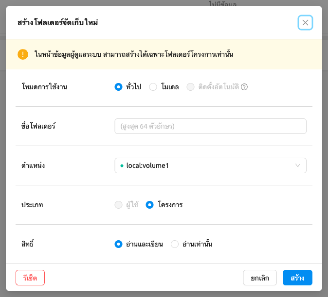
หลังจากยืนยันว่าโฟลเดอร์ถูกสร้างขึ้นแล้ว ให้เข้าสู่ระบบด้วยบัญชีของ User B และ ตรวจสอบว่าโฟลเดอร์โปรเจกต์ที่เพิ่งสร้างในหน้าข้อมูลแสดงขึ้นโดย ไม่ต้องมีขั้นตอนการเชิญ คุณจะเห็นว่า R (อ่านเท่านั้น) ยังแสดงในแผงสิทธิ์
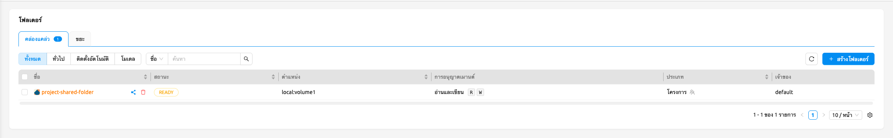
การปรับใช้โมเดล#
หน้า Admin Deployments#
ผู้ดูแลระบบและผู้ดูแลระบบขั้นสูงสามารถเข้าถึงหน้า Admin Deployments ที่ /admin/deployments ซึ่งให้มุมมองข้ามโปรเจกต์ของการปรับใช้ทั้งหมดในคลัสเตอร์ คอลัมน์ โปรเจกต์ มีอยู่ในรายการการปรับใช้แต่ถูกซ่อนไว้โดยค่าเริ่มต้น คุณสามารถเปิดใช้งานได้โดยใช้การตั้งค่าคอลัมน์
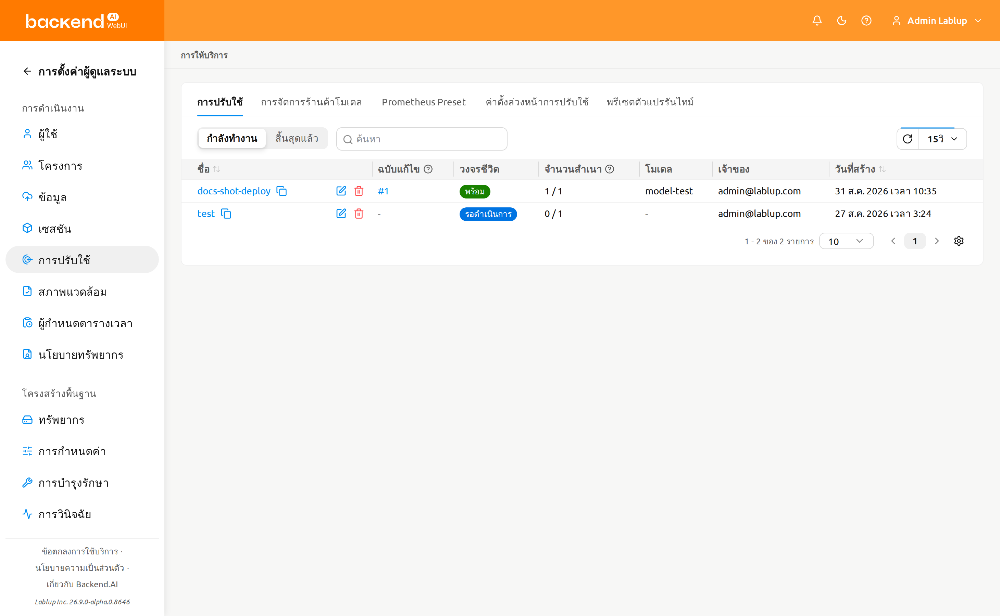
หน้า Admin Deployments มีได้สูงสุดสี่แท็บ:
- การปรับใช้: แสดงรายการการปรับใช้ข้ามทุกโปรเจกต์ พร้อมตัวกรองวงจรชีวิตและคุณสมบัติเดียวกับหน้าการปรับใช้สำหรับผู้ใช้
- การจัดการร้านค้าโมเดล: ดูส่วนการจัดการคลังโมเดลสำหรับผู้ดูแลระบบด้านล่าง
- Prometheus Preset: ให้ผู้ดูแลระบบจัดการพรีเซ็ตคิวรี Prometheus ที่ใช้ซ้ำได้ ดูรายละเอียดที่ส่วนพรีเซ็ตคิวรี Prometheusด้านล่าง
- ค่าตั้งล่วงหน้าการปรับใช้: ให้ผู้ดูแลระบบจัดการพรีเซ็ตการดีพลอยที่ใช้ซ้ำได้ ซึ่งผู้ใช้ปลายทางสามารถนำไปใช้ตอนดีพลอยโมเดล ดูรายละเอียดที่ส่วนพรีเซ็ตการดีพลอยด้านล่าง
การปรับใช้สำหรับผู้ดูแลระบบแต่ละรายการมีที่อยู่ของตัวเองภายใต้หน้า Admin Deployments คือ /admin/deployments/<รหัสการปรับใช้> เมื่อคุณเปิดการปรับใช้จากหน้า Admin Deployments URL จะเปลี่ยนเป็นเส้นทางนี้ จึงสามารถเชื่อมโยงไปยังหน้ารายละเอียดการปรับใช้โดยตรงหรือบันทึกเป็นบุ๊กมาร์กได้
การ์ด Revision บนหน้ารายละเอียดการปรับใช้#
เมื่อคุณเปิดการปรับใช้รายการใดรายการหนึ่ง การ์ด Revision บนหน้ารายละเอียดการปรับใช้จะมีสามแท็บ:
- Revision ปัจจุบัน (Current Revision): แสดงการกำหนดค่าของ revision ที่กำลังให้บริการอยู่ในขณะนี้ รวมถึง image, runtime variant, ทรัพยากร, cluster mode และค่าการกำหนดค่าอื่น ๆ
- ประวัติ Revision (Revision History): แสดงรายการ revision ก่อนหน้าทั้งหมด คลิกแถวใด ๆ เพื่อเปิด drawer รายละเอียดที่แสดงการกำหนดค่าทั้งหมดของ revision นั้น และคุณสามารถย้อนกลับไปยังเวอร์ชันก่อนหน้าได้
- บันทึกการตรวจสอบ (Audit Log): แสดงประวัติการดำเนินการที่เกิดขึ้นกับการปรับใช้นี้
ในแท็บ Revision ปัจจุบัน จะมีแถว พารามิเตอร์ Runtime (Runtime Parameters) เพิ่มเติมที่แสดงพารามิเตอร์ runtime ที่กำหนดค่าไว้สำหรับ revision นั้น drawer รายละเอียดในแท็บ ประวัติ Revision ก็แสดงแถว พารามิเตอร์ Runtime เช่นเดียวกัน
แท็บ บันทึกการตรวจสอบ (Audit Log) ติดตามประวัติการดำเนินการทั้งหมดสำหรับการปรับใช้ แต่ละรายการประกอบด้วย:
- เวลา (Time): การประทับเวลาเมื่อดำเนินการ
- การดำเนินการ (Operation): ประเภทของการดำเนินการที่เกิดขึ้น
- สถานะ (Status): ผลลัพธ์ของการดำเนินการ
- คำอธิบาย (Description): รายละเอียดเพิ่มเติมเกี่ยวกับการดำเนินการ
- ระยะเวลา (Duration): เวลาที่ใช้ในการดำเนินการ
- ผู้ดำเนินการ (Triggered By): ผู้ใช้ที่เริ่มต้นการดำเนินการ
คุณสามารถกรองรายการตาม สถานะ (Status), การดำเนินการ (Operation), ผู้ดำเนินการ (Triggered By) และตัวเลือกช่วงวันที่ เวลา (Time)
การจัดการคลังโมเดลสำหรับผู้ดูแลระบบ#
ผู้ดูแลระบบขั้นสูงสามารถจัดการการ์ดโมเดลผ่านแท็บ Model Store Management ในหน้า Admin Deployments
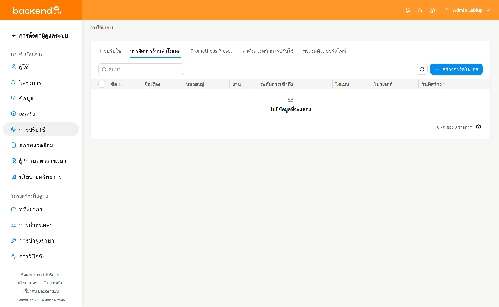
รายการมีคอลัมน์ต่อไปนี้:
- ชื่อ (Name): ตัวระบุเฉพาะของการ์ดโมเดล
- ชื่อเรื่อง (Title): ชื่อที่แสดงผลซึ่งมนุษย์อ่านได้
- หมวดหมู่ (Category): หมวดหมู่โมเดล (เช่น LLM)
- งาน (Task): ประเภทงาน inference (เช่น text-generation)
- ระดับการเข้าถึง (Access Level): แสดงแท็ก
Publicสีเขียวเมื่อการ์ดโมเดลเข้าถึงได้แบบสาธารณะ หรือแท็กPrivateแบบเริ่มต้นเมื่อเป็นแบบส่วนตัว - โดเมน (Domain): โดเมนที่เป็นเจ้าของการ์ดโมเดล
- โปรเจกต์ (Project): โปรเจกต์ที่เป็นเจ้าของการ์ดโมเดล
- สร้างเวลา (Created At): เวลาที่สร้างการ์ดโมเดล
คุณสามารถจำกัดรายการให้แคบลงได้โดยใช้แถบตัวกรองคุณสมบัติที่ด้านบน ซึ่งรองรับการกรองตามคุณสมบัติต่อไปนี้:
- ชื่อ (Name): กรองตามชื่อของการ์ดโมเดล (จับคู่สตริง)
- โดเมน (Domain): กรองตามโดเมนที่เป็นเจ้าของ (จับคู่สตริง)
- โปรเจกต์ (Project): กรองตาม UUID ของโปรเจกต์ที่เป็นเจ้าของ ค่าจะถูกตรวจสอบก่อนนำตัวกรองไปใช้ ดังนั้นตัวระบุที่มีรูปแบบไม่ถูกต้องจะถูกปฏิเสธพร้อมข้อความแทนที่จะคืนรายการว่าง
- Storage Host: กรองตาม storage host ของโฟลเดอร์ที่เชื่อมโยง แทนที่จะพิมพ์ค่าเอง ให้เลือกโฮสต์จากดรอปดาวน์ของโฮสต์ที่ลงทะเบียนไว้ในคลัสเตอร์นี้ และใช้ได้ทั้งตัวดำเนินการเท่ากับและไม่เท่ากับ
ไอคอนแก้ไขและลบจะแสดงอยู่ในเซลล์ชื่อของแต่ละแถวโดยตรง
หากต้องการลบการ์ดโมเดลหลายรายการในคราวเดียว ให้เลือกแถวที่ต้องการลบโดยใช้ช่องทำเครื่องหมาย จากนั้นคลิกปุ่มถังขยะสีแดงถัดจากจำนวนที่เลือก กล่องโต้ตอบยืนยันจะปรากฏขึ้นก่อนที่การ์ดจะถูกลบ
การสร้างการ์ดโมเดล#
คลิกปุ่ม สร้างการ์ดโมเดล เพื่อเปิดโมดอลการสร้าง กรอกฟิลด์ต่อไปนี้:
ชื่อ (Name) (จำเป็น): ตัวระบุเฉพาะสำหรับการ์ดโมเดล
ชื่อเรื่อง (Title): ชื่อที่แสดงที่มนุษย์อ่านได้
คำอธิบาย (Description): คำอธิบายรายละเอียดของโมเดล
ผู้เขียน (Author): ผู้สร้างโมเดลหรือองค์กร
เวอร์ชันโมเดล (Model Version): เวอร์ชันของโมเดล
งาน (Task): ประเภท task inference (เช่น text-generation)
หมวดหมู่ (Category): หมวดหมู่โมเดล (เช่น LLM)
เฟรมเวิร์ก (Framework): ML framework ที่ใช้ (เช่น PyTorch, TensorFlow)
ป้ายกำกับ (Label): แท็กสำหรับการจัดหมวดหมู่และการกรอง ป้อนหลายแท็กโดยคั่นด้วย เครื่องหมายจุลภาค (comma)
สัญญาอนุญาต (License): สัญญาอนุญาตที่โมเดลถูกเผยแพร่
สถาปัตยกรรม (Architecture): สถาปัตยกรรมโมเดล (เช่น Transformer)
README: README มาร์กดาวน์สำหรับโมเดล
โดเมน (Domain): โดเมนที่จะเชื่อมโยงการ์ดโมเดล ฟิลด์นี้จะถูกเติมไว้ล่วงหน้าเป็นโดเมนของผู้ใช้ปัจจุบันโดยอัตโนมัติ
Project ID (จำเป็น): โปรเจกต์ที่เป็นเจ้าของการ์ดโมเดล
VFolder (จำเป็น): โฟลเดอร์จัดเก็บที่มีไฟล์โมเดล
ระดับการเข้าถึง (Access Level): ควบคุมว่าใครสามารถเห็นการ์ดโมเดลใน Model Store สำหรับผู้ใช้
Internal: มองเห็นได้เฉพาะผู้ดูแลระบบของโดเมนและโปรเจกต์ที่เป็นเจ้าของเท่านั้น ผู้ใช้ทั่วไปจะไม่เห็นการ์ด Internal ใน Model Store ของตนPublic: มองเห็นได้โดยผู้ใช้ทุกคนที่มีสิทธิ์เข้าถึงโปรเจกต์ที่เป็นเจ้าของ
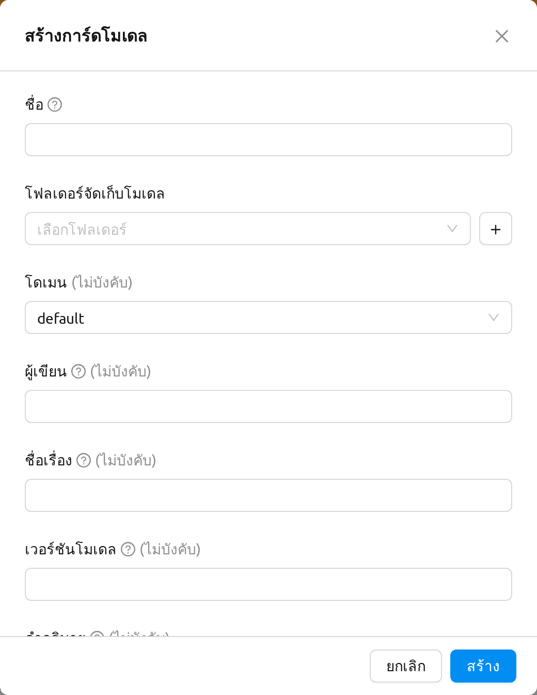
การแก้ไขการ์ดโมเดล#
คลิกไอคอนแก้ไขถัดจากชื่อการ์ดโมเดลเพื่อแก้ไขการ์ดโมเดลที่มีอยู่ โมดอลแก้ไขจะเปิดขึ้นพร้อมฟิลด์ที่ป้อนไว้ก่อนหน้านี้ เช่นเดียวกับโมดอลการสร้าง ฟิลด์ ป้ายกำกับ (Label) จะรับหลายแท็กโดยคั่นด้วย เครื่องหมายจุลภาค (comma) และฟิลด์ โดเมน (Domain) จะถูกเติมไว้ล่วงหน้าตามโดเมนปัจจุบัน
การลบการ์ดโมเดล#
คุณสามารถลบการ์ดโมเดลแต่ละรายการโดยคลิกไอคอนลบถัดจากชื่อการ์ด หรือทำการลบจำนวนมากโดยเลือกการ์ดโมเดลหลายรายการด้วยช่องทำเครื่องหมาย จากนั้นคลิกปุ่มถังขยะสีแดงถัดจากจำนวนที่เลือก
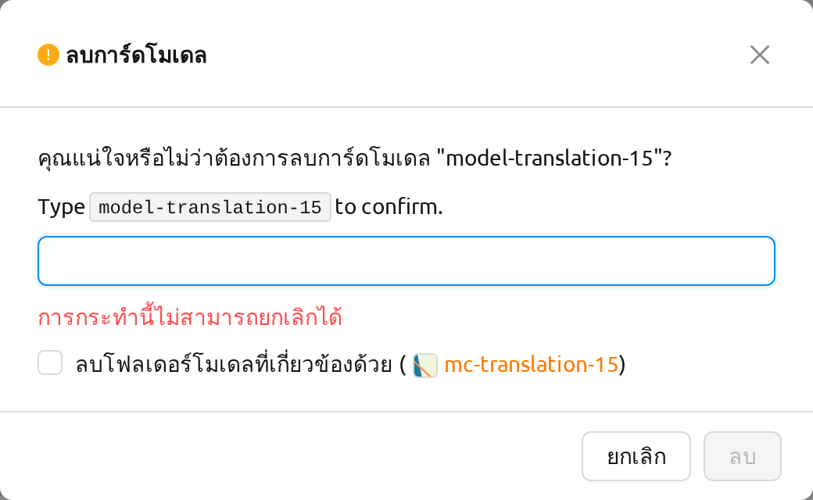
กล่องโต้ตอบยืนยันการลบมีตัวเลือก ลบโฟลเดอร์โมเดลที่เกี่ยวข้องด้วย ด้วย:
- เมื่อเลือกตัวเลือกนี้ ระบบจะย้ายโฟลเดอร์จัดเก็บ (vfolder) ที่เชื่อมโยงกับการ์ดโมเดลไปยังถังขยะพร้อมกับการลบการ์ดโมเดล การแจ้งเตือนของถังขยะจะปรากฏขึ้นเพื่อให้ผู้ดูแลระบบขั้นสูงยืนยันว่าโฟลเดอร์ที่เชื่อมโยงถูกส่งไปยังถังขยะแล้ว และสามารถกู้คืนโฟลเดอร์ได้จาก Data > ขยะ หากจำเป็น โปรดทราบว่าการลบโฟลเดอร์ที่เชื่อมโยงจะลบการ์ดโมเดลทุกใบที่ใช้งานโฟลเดอร์เดียวกันนั้นด้วย
- เมื่อไม่เลือกตัวเลือกนี้ ระบบจะลบเฉพาะข้อมูลการ์ดโมเดลเท่านั้น โดยโฟลเดอร์จัดเก็บที่เชื่อมโยงจะยังคงอยู่และสามารถนำไปใช้กับการ์ดโมเดลอื่นได้
พฤติกรรมเดียวกันนี้ใช้กับ การลบจำนวนมาก ด้วย (ป้ายตัวเลือกจะเปลี่ยนเป็น ลบโฟลเดอร์โมเดลที่เกี่ยวข้องทั้งหมดด้วย) เมื่อเลือกตัวเลือกนี้ โฟลเดอร์จัดเก็บที่เชื่อมโยงกับการ์ดโมเดลแต่ละรายการที่เลือกจะถูกย้ายไปยังถังขยะ และจะมีการแจ้งเตือนของถังขยะแสดงขึ้นสำหรับโฟลเดอร์แต่ละโฟลเดอร์ที่ถูกย้าย
Prometheus Query Preset#
Backend.AI ช่วยให้ผู้ดูแลระบบสามารถกำหนด พรีเซตคำสั่ง Prometheus ที่นำกลับมาใช้ใหม่ได้ ซึ่งกฎ Auto Scaling และฟีเจอร์การมอนิเตอร์อื่น ๆ สามารถอ้างอิงด้วยชื่อพรีเซตได้ พรีเซตหนึ่ง ๆ จะรวมชื่อเมตริก เทมเพลตคำสั่ง PromQL ช่วงเวลาที่เลือกได้ และป้ายกำกับตัวกรอง / ป้ายกำกับกลุ่มที่เลือกได้เข้าไว้ด้วยกัน เพื่อให้ผู้ปฏิบัติงานไม่ต้องพิมพ์คำสั่งเดิมซ้ำสำหรับแต่ละกฎ
พรีเซตเหล่านี้จัดการได้จากแท็บ Prometheus Preset บนหน้า การปรับใช้ของผู้ดูแลระบบ (/admin/deployments?tab=prometheus-preset)
เมื่อ Superadmin เปิดตัวแก้ไขกฎ Auto Scaling สำหรับการปรับใช้ ตั้งค่า แหล่งที่มาของเมตริก เป็น Prometheus และเลือกพรีเซ็ต จะมีตัวอย่างสด ค่าปัจจุบัน (Current value) แสดงด้านล่างตัวเลือกพรีเซ็ต แสดงค่าเมตริกล่าสุดจาก Prometheus ตัวอย่างนี้มองเห็นได้เฉพาะบัญชี Superadmin เท่านั้น — ผู้ใช้ทั่วไปและผู้ดูแลระบบโดเมนจะไม่เห็น
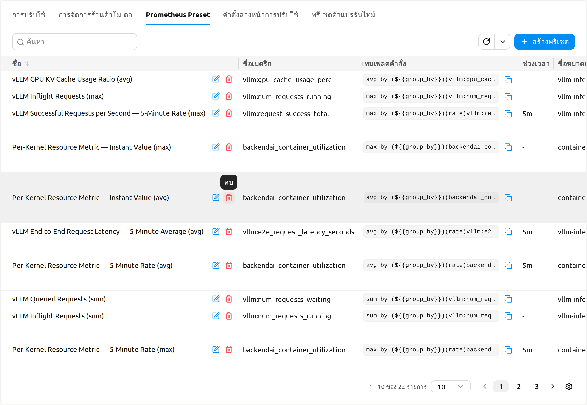
รายการและตัวกรอง#
ตารางพรีเซตจะแสดงพรีเซตคำสั่ง Prometheus ทั้งหมดในคลัสเตอร์ แต่ละแถวจะแสดงข้อมูลต่อไปนี้
- ชื่อ: ตัวระบุพรีเซตที่ไม่ซ้ำกันและอ่านง่ายสำหรับมนุษย์ เซลล์นี้ยังมีการกระทำแบบอินไลน์ แก้ไข และ ลบ ด้วย
- ID: ตัวระบุภายในของพรีเซต
- ชื่อเมตริก: เมตริกที่พรีเซตนี้รายงาน (ใช้เป็นป้ายแสดงผลโดยผู้บริโภค เช่น กฎ Auto Scaling)
- เทมเพลตคำสั่ง: นิพจน์ PromQL ที่จะถูกเรียกใช้ เซลล์นี้ คัดลอกได้ โดยวางเมาส์เหนือค่าแล้วคลิกไอคอนคัดลอกเพื่อคัดลอกเทมเพลตทั้งหมดไปยังคลิปบอร์ด มีประโยชน์เมื่อต้องการวางเทมเพลตในหน้า Prometheus UI เพื่อตรวจสอบผลลัพธ์
- ช่วงเวลา: ช่วงเวลามองย้อนกลับเริ่มต้น (เช่น
5m) ที่ใช้เมื่อคำสั่งอ้างอิง range vector - หมวดหมู่: หมวดหมู่ที่เลือกได้ที่พรีเซตอยู่ (พร้อมชื่อหมวดหมู่ที่แก้ค่าแล้วและรหัสหมวดหมู่)
- ตัวเลือก: ป้ายกำกับตัวกรอง และ ป้ายกำกับกลุ่ม ที่เลือกได้ ซึ่งผู้บริโภคสามารถนำมาใช้บนพรีเซตได้
- สร้างเมื่อ / อัปเดตเมื่อ: ตราเวลาที่เซิร์ฟเวอร์ดูแลให้โดยอัตโนมัติ
คุณสามารถค้นหาและจำกัดรายการได้ด้วยตัวกรองคุณสมบัติด้านบนของตาราง และคลิกหัวคอลัมน์ใด ๆ เพื่อเปลี่ยนลำดับการเรียง
การจดจำการตั้งค่าคอลัมน์#
ตารางมีตัวควบคุมการตั้งค่าคอลัมน์ที่ให้คุณซ่อนคอลัมน์ที่ไม่ต้องการและจัดลำดับคอลัมน์ที่แสดงใหม่ได้ ตัวเลือกของคุณจะ คงอยู่ข้ามเซสชัน ต่อเบราว์เซอร์ ดังนั้นตารางจะเปิดขึ้นด้วยเลย์เอาต์ที่คุณต้องการในครั้งถัดไปที่คุณเยี่ยมชมแท็บนี้ การรีเซ็ตการตั้งค่าคอลัมน์จะคืนค่ากลับเป็นเลย์เอาต์เริ่มต้นของ Backend.AI
สร้างพรีเซต#
คลิก เพิ่มพรีเซต ที่ด้านบนขวาของตารางเพื่อเปิดโมดอล สร้างพรีเซต
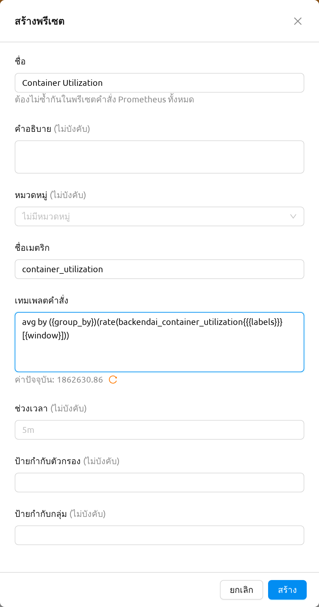
โมดอลประกอบด้วยฟิลด์ต่อไปนี้
- ชื่อ: ชื่อที่ไม่ซ้ำกันของพรีเซต ต้องไม่ซ้ำกันในพรีเซตคำสั่ง Prometheus ทั้งหมด
- คำอธิบาย: คำอธิบายแบบอิสระที่แสดงควบคู่กับพรีเซตในตัวเลือก
- หมวดหมู่: หมวดหมู่ที่เลือกได้สำหรับจัดกลุ่มพรีเซตที่เกี่ยวข้อง ฟิลด์นี้เป็นดรอปดาวน์ที่แสดงหมวดหมู่ซึ่งกำหนดไว้บนเซิร์ฟเวอร์ ไม่ใช่ช่องพิมพ์อิสระ ปล่อยว่างเพื่อให้เป็น ไม่มีหมวดหมู่ ขณะที่รายการหมวดหมู่กำลังโหลด ฟิลด์นี้จะแสดงตัวบ่งชี้การโหลด และฟิลด์อื่น ๆ ยังคงใช้งานได้ตามปกติ
- ชื่อเมตริก: ป้ายเมตริกที่ผู้บริโภค (เช่น กฎ Auto Scaling) จะแสดง
- เทมเพลตคำสั่ง: นิพจน์ PromQL ที่จะถูกเรียกใช้ ขณะที่คุณพิมพ์ พื้นที่ ตัวอย่างแบบสด ใต้ฟิลด์จะแสดงค่าที่เทมเพลตที่คุณกำลังเขียนตอบกลับจากอินสแตนซ์ Prometheus เพื่อให้คุณตรวจสอบได้ว่าเทมเพลตทำงานก่อนบันทึก ตัวอย่างถูก debounce และอัปเดตอัตโนมัติเมื่อคุณแก้ไข
- ช่วงเวลา: หน้าต่าง range vector เริ่มต้น เช่น
5mปล่อยว่างหากคำสั่งไม่ใช้ range vector - ป้ายกำกับตัวกรอง: รายการตัวเลือกป้ายกำกับที่เลือกได้ ซึ่งผู้บริโภคสามารถนำมาใช้บนพรีเซตได้
- ป้ายกำกับกลุ่ม: รายการป้ายกำกับที่เลือกได้สำหรับจัดกลุ่มผลลัพธ์ของคำสั่ง
คลิก สร้าง เพื่อบันทึกพรีเซต เมื่อสำเร็จ พรีเซตจะปรากฏในรายการและจะแสดงทอสต์ยืนยัน
ไดอะล็อกนี้จะเริ่มต้นจากสถานะว่างเปล่าทุกครั้งที่เปิด ค่าที่คุณพิมพ์ไว้ในครั้งก่อน หรือค่าของพรีเซตที่คุณเพิ่งแก้ไข จะไม่ถูกนำมาแสดงในไดอะล็อก สร้างพรีเซต หรือ แก้ไขพรีเซต ครั้งถัดไป
แก้ไขพรีเซต#
คลิกการกระทำ แก้ไข ในเซลล์ ชื่อ ของแถวพรีเซตเพื่อเปิดโมดอล แก้ไขพรีเซต โมดอลจะถูกเติมล่วงหน้าด้วยค่าปัจจุบันของพรีเซตและมีฟิลด์เดียวกันกับไดอะล็อกสร้าง รวมถึงพื้นที่ตัวอย่างแบบสดสำหรับเทมเพลตคำสั่ง
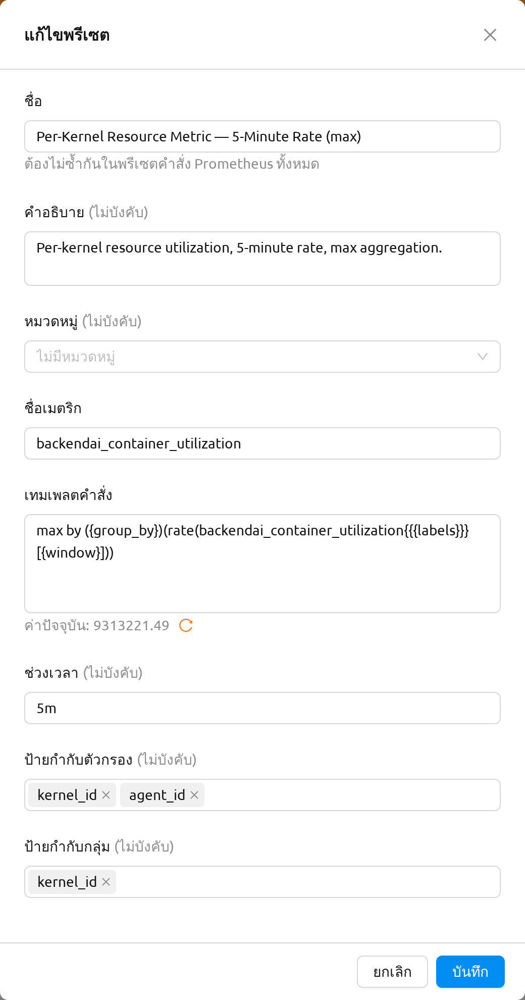
คลิก บันทึก เพื่อใช้การเปลี่ยนแปลงของคุณ ผู้บริโภคของพรีเซต (เช่น กฎ Auto Scaling ที่อ้างอิงพรีเซต) จะรับเทมเพลตคำสั่งใหม่โดยอัตโนมัติในครั้งถัดไปที่ประเมินเมตริก
ลบพรีเซต#
คลิกการกระทำ ลบ ในเซลล์ ชื่อ ของแถวพรีเซตเพื่อเปิดโมดอลยืนยันการลบ
การลบพรีเซตคำสั่ง Prometheus เป็นการกระทำ ถาวรและไม่สามารถยกเลิกได้ กฎ Auto Scaling และฟีเจอร์อื่น ๆ ที่อ้างอิงพรีเซตที่ลบจะสูญเสียเทมเพลตคำสั่งและอาจหยุดทำงานจนกว่าจะถูกกำหนดค่าใหม่ให้ชี้ไปยังพรีเซตอื่น
เนื่องจากการลบไม่สามารถย้อนกลับได้ ไดอะล็อกจึงกำหนดให้คุณ พิมพ์ชื่อพรีเซต ลงในช่องป้อนยืนยันก่อนที่ปุ่ม ลบ จะถูกเปิดใช้งาน พิมพ์ชื่อพรีเซตที่แสดงในชื่อไดอะล็อกให้ตรงและคลิก ลบ เพื่อยืนยัน
พรีเซ็ตการดีพลอย#
พรีเซ็ตการดีพลอย (Deployment Preset) คือชุดค่าตั้งต้นที่ใช้ซ้ำได้สำหรับการดีพลอยโมเดล โดยรวมถึง image, runtime, resource slots, cluster mode, environment variables, startup command, จำนวน replica, ระดับการเผยแพร่ และค่าเริ่มต้นอื่น ๆ ผู้ดูแลระบบเป็นผู้กำหนดพรีเซ็ตเหล่านี้ไว้ล่วงหน้า เพื่อให้ผู้ใช้ทั่วไปนำไปใช้ได้ตอนสร้าง deployment ของโมเดลจากโฟลเดอร์จัดเก็บ ผู้ดูแลระบบสามารถเผยแพร่ชุดรูปแบบการดีพลอยที่ผ่านการตรวจสอบแล้ว เช่น vLLM-GPU-Large หรือ SGLang-CPU-Small เพื่อให้ผู้ใช้สามารถดีพลอยโมเดลได้โดยไม่ต้องเลือกฟิลด์ขั้นสูงทุกตัวเอง
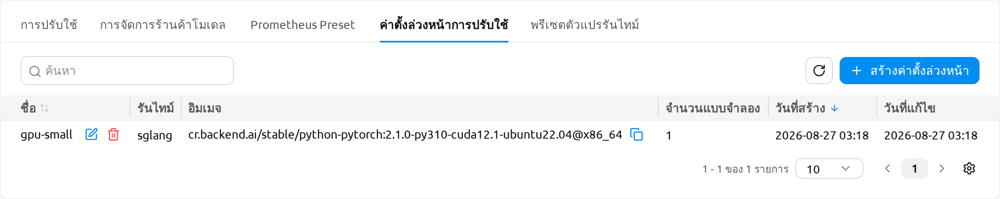
พรีเซ็ตการดีพลอยคืออะไร#
พรีเซ็ตการดีพลอยเก็บค่าเริ่มต้นของการดีพลอยโมเดลไว้เพื่อให้:
- ผู้ดูแลระบบ สามารถจัดเตรียมแคตาล็อกของรูปแบบการดีพลอยที่ผ่านการตรวจสอบและสอดคล้องกับฮาร์ดแวร์และนโยบายขององค์กรให้กับผู้ใช้
- ผู้ใช้ทั่วไป เลือกพรีเซ็ตได้ขณะดีพลอยโมเดลจากหน้า Data ผ่านขั้นตอน สร้าง Deployment ใหม่ด้วย Preset โดยไม่ต้องกรอกฟิลด์ขั้นสูงด้วยตนเอง
- ผู้ดูแลการใช้งาน มั่นใจได้ว่า deployment ที่ใช้ในงานจริงทั่วทั้งองค์กรใช้การจัดสรรทรัพยากร, runtime และค่าเริ่มต้นด้านการเผยแพร่ที่สอดคล้องกัน
เมื่อสร้าง deployment จากพรีเซ็ต ค่าของพรีเซ็ตจะถูกเติมในฟอร์ม deployment launcher โดยอัตโนมัติ ผู้ใช้สามารถตรวจสอบและแก้ไขค่าเหล่านี้ก่อนยืนยันการดีพลอย
แต่ละพรีเซ็ตจะเก็บข้อมูลต่อไปนี้:
- ข้อมูลพื้นฐาน (Basic Info): ชื่อ คำอธิบาย runtime, runtime parameters (สำหรับ runtime ที่ไม่ใช่ Custom) และอิมเมจ
- ทรัพยากร (Resources): resource slots (CPU, memory, GPU), หน่วยความจำที่แชร์ (SHM) และตัวเลือกทรัพยากร
- คลัสเตอร์ (Cluster): cluster mode (Single Node หรือ Multi Node) และขนาดคลัสเตอร์
- การเรียกใช้งาน (Execution): startup command, environment variables และ bootstrap script
- ค่าเริ่มต้นของการดีพลอย (Deployment Defaults): จำนวน replica, จำนวน revision ที่เก็บไว้ และค่าเริ่มต้นของ Open to Public
- คำจำกัดความโมเดล (Model Definition) (ตัวเลือกเสริม): ชื่อโมเดล, path ของโมเดล, การตั้งค่าบริการ (พอร์ต, startup command, pre-start actions), การตั้งค่า health check และ metadata
การจัดการพรีเซ็ตการดีพลอย#
เฉพาะผู้ดูแลระบบเท่านั้นที่สามารถสร้าง แก้ไข หรือลบพรีเซ็ตการดีพลอยได้ ผู้ดูแลระบบจัดการพรีเซ็ตเหล่านี้ได้จากแท็บ พรีเซ็ตการดีพลอย ในหน้า การปรับใช้ของผู้ดูแลระบบ
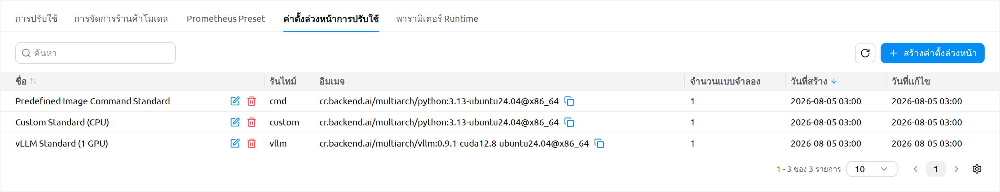
มุมมองรายการจะแสดงแต่ละพรีเซ็ตพร้อมชื่อ, runtime, image, จำนวน replica, คอลัมน์ สร้างเมื่อ (Created At) และ แก้ไขเมื่อ (Modified At) ผู้ดูแลระบบสามารถทำสิ่งต่อไปนี้จากรายการนี้ได้:
- กรองพรีเซ็ตด้วยชื่อหรือ runtime
- เปิดหน้ารายละเอียดของพรีเซ็ตเพื่อดูการตั้งค่าทั้งหมด
- สร้าง แก้ไข หรือลบพรีเซ็ต
คอลัมน์เริ่มต้นที่แสดง ได้แก่ ชื่อ (Name), Runtime, อิมเมจ (Image), จำนวน Replica (Replicas), สร้างเมื่อ (Created At) และ แก้ไขเมื่อ (Modified At) คอลัมน์เพิ่มเติม ได้แก่ คำอธิบาย (Description), คำสั่งเริ่มต้น (Startup Command), คลัสเตอร์ (Cluster), กลยุทธ์การดีพลอย (Strategy), เปิดให้สาธารณะ (Open to Public) และ จำนวน Revision ที่เก็บไว้ (Revision History Limit) จะถูกซ่อนไว้โดยค่าเริ่มต้น คุณสามารถแสดงหรือซ่อนคอลัมน์เหล่านี้ได้โดยคลิกไอคอนรูปเฟือง (gear) ที่ส่วนหัวของตารางเพื่อเปิดตัวจัดการคอลัมน์
สร้างพรีเซ็ตการดีพลอย#
คลิกปุ่ม สร้างค่าตั้งล่วงหน้า ที่มุมขวาบนของรายการพรีเซ็ตเพื่อเปิดไดอะล็อก สร้างค่าตั้งล่วงหน้า ฟอร์มจะถูกจัดเป็นการ์ดหลายใบ ดังนี้:
- ข้อมูลพื้นฐาน (Basic Info):
- ชื่อ (Name) (จำเป็น): ชื่อพรีเซ็ตที่ไม่ซ้ำกัน (เช่น
vLLM-GPU-Large) - คำอธิบาย (Description): สรุปสั้น ๆ เกี่ยวกับการใช้งานพรีเซ็ตนี้
- Runtime (จำเป็น): runtime variant (เช่น vLLM, SGLang หรือ Custom)
- พารามิเตอร์ Runtime (Runtime Parameters): ส่วนนี้จะปรากฏเมื่อเลือก runtime variant ที่ไม่ใช่ Custom พารามิเตอร์จะถูกจัดเป็นหลายแท็บ ได้แก่ Model Loading, Resource Memory และ Serving Performance เพื่อให้กำหนดค่าได้ง่ายขึ้น พารามิเตอร์ที่จำเป็นจะมีเครื่องหมายดอกจันสีแดง (
*) กำกับ และฟอร์มจะไม่อนุญาตให้ส่งหากฟิลด์ที่จำเป็นเหล่านั้นว่างเปล่า - อิมเมจ (Image) (จำเป็น): คอนเทนเนอร์อิมเมจที่จะใช้ดีพลอย
- ชื่อ (Name) (จำเป็น): ชื่อพรีเซ็ตที่ไม่ซ้ำกัน (เช่น
- ทรัพยากร (Resources): resource slots (CPU, memory, GPU), หน่วยความจำที่แชร์ (shared memory) และตัวเลือกทรัพยากร (คู่ key/value)
- คลัสเตอร์ (Cluster): cluster mode (Single Node หรือ Multi Node) และขนาดคลัสเตอร์
- โมเดลและการเรียกใช้งาน (Model & Execution): startup command, bootstrap script และ environment variables ฟิลด์ คำสั่งเริ่มต้น (Startup Command) จะแสดงคำใบ้ไวยากรณ์เชลล์ คำสั่งจะถูกเรียกใช้งานในรูปแบบ
/bin/bash -c <command>คุณจึงสามารถใช้ไวยากรณ์ของเชลล์ เช่น การคั่นคำสั่งหลายคำสั่งด้วย;ได้ - คำจำกัดความโมเดล (Model Definition) (toggle): เปิดใช้งานด้วย toggle เพื่อกำหนดค่า model definition แบบมีโครงสร้าง เมื่อเปิดใช้งานจะสามารถตั้งค่าได้ดังนี้:
- ชื่อโมเดล และ Path ของโมเดล: ตัวระบุโมเดลและตำแหน่งของโมเดลในคอนเทนเนอร์
- การตั้งค่าบริการ (Service Configuration): พอร์ต, shell, startup command และ pre-start actions
- การตรวจสอบสุขภาพ (Health Check): ส่วนนี้มี toggle เปิดใช้การตรวจสอบสุขภาพ (Enable Health Check) ซึ่งตั้งค่าเริ่มต้นเป็น ปิด (OFF) เมื่อปิดอยู่ ฟิลด์การตรวจสอบสุขภาพจะถูกซ่อนไว้ เมื่อเปิด toggle นี้ ฟิลด์ทั้งหมดจะปรากฏขึ้น ได้แก่ path, interval, จำนวนครั้งสูงสุดที่ลองใหม่, เวลารอสูงสุด, status code ที่คาดหวัง และ startup grace period
- Metadata: ผู้แต่ง, ชื่อ, เวอร์ชัน, task, หมวดหมู่ และข้อมูลอื่น ๆ
- การดีพลอย (Deployment):
- จำนวน Replica (Replica Count) (จำเป็น): จำนวน replica เริ่มต้นสำหรับ deployment ที่สร้างจากพรีเซ็ตนี้
- จำนวน Revision ที่เก็บไว้ (Revision History Limit): จำนวน revision ก่อนหน้าที่ถูกเก็บไว้สำหรับแต่ละ deployment ที่สร้างจากพรีเซ็ตนี้
- Open to Public: ช่องทำเครื่องหมายที่กำหนดค่าเริ่มต้นว่า endpoint ของ deployment ที่สร้างจากพรีเซ็ตนี้สามารถเข้าถึงได้โดยไม่ต้องใช้ access token หรือไม่
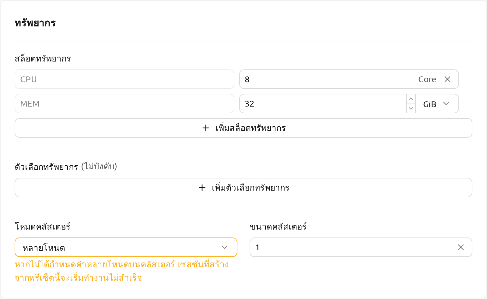
เมื่อกรอกฟิลด์ครบแล้ว ให้คลิก สร้างค่าตั้งล่วงหน้า เพื่อบันทึก ระบบจะแสดงการแจ้งเตือนเมื่อสร้างพรีเซ็ตสำเร็จ
หากฟิลด์ที่จำเป็นว่างเปล่าหรือมีค่าที่ไม่ถูกต้อง ปุ่ม สร้างค่าตั้งล่วงหน้า จะยังคงถูกปิดใช้งานจนกว่าจะแก้ไขข้อผิดพลาด ฟิลด์ที่จำเป็นจะแสดงข้อความตรวจสอบความถูกต้องในตำแหน่งของฟิลด์ขณะที่คุณพิมพ์
แก้ไขพรีเซ็ตการดีพลอย#
- จากรายการพรีเซ็ต ให้เปิดเมนูการกระทำของแถวพรีเซ็ต (หรือเปิดหน้ารายละเอียดของพรีเซ็ต) แล้วเลือก แก้ไขค่าตั้งล่วงหน้า
- ไดอะล็อก แก้ไขค่าตั้งล่วงหน้า จะเปิดขึ้นพร้อมเติมค่าปัจจุบันของพรีเซ็ตไว้ล่วงหน้า ส่วนต่าง ๆ ที่ใช้ได้จะเหมือนกับไดอะล็อก สร้างค่าตั้งล่วงหน้า
- ปรับค่าตามต้องการ แล้วคลิก แก้ไขค่าตั้งล่วงหน้า เพื่อบันทึก
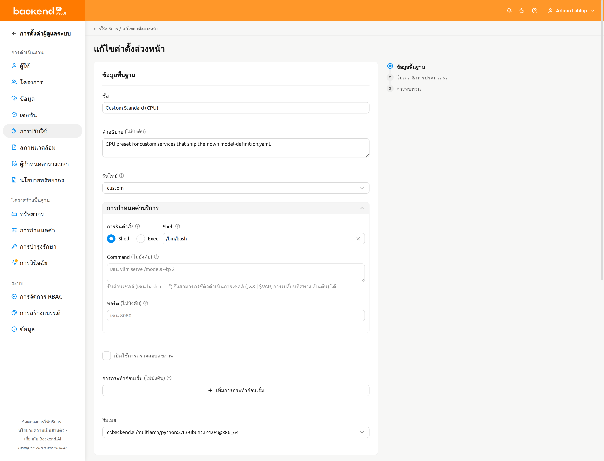
การแก้ไขพรีเซ็ตจะเปลี่ยนเฉพาะค่าเริ่มต้นของ deployment ที่จะสร้าง ในอนาคต เท่านั้น deployment ที่สร้างจากพรีเซ็ตนี้อยู่แล้วจะไม่ถูกแก้ไข
ลบพรีเซ็ตการดีพลอย#
- จากรายการพรีเซ็ต (หรือหน้ารายละเอียดของพรีเซ็ต) ให้เปิดเมนูการกระทำของพรีเซ็ต แล้วเลือก ลบค่าตั้งล่วงหน้า
- ไดอะล็อกยืนยันแบบพิมพ์ชื่อจะปรากฏขึ้นและขอให้คุณพิมพ์ชื่อพรีเซ็ตเพื่อยืนยัน ปุ่ม OK จะถูกปิดใช้งานจนกว่าค่าที่พิมพ์จะตรงกับชื่อพรีเซ็ตอย่างถูกต้องทุกประการ
- พิมพ์ชื่อพรีเซ็ต แล้วคลิก OK เพื่อยืนยัน
การลบพรีเซ็ตการดีพลอย ไม่สามารถย้อนกลับได้ ตัวพรีเซ็ตจะถูกลบออก แต่ deployment ที่ถูกสร้างจากพรีเซ็ตไปแล้วจะยังคงทำงานต่อโดยไม่ได้รับผลกระทบ การดีพลอยในอนาคตจะไม่สามารถอ้างอิงพรีเซ็ตนี้ได้อีก
การใช้พรีเซ็ตเมื่อดีพลอยโมเดล#
ผู้ใช้ทั่วไปจะใช้พรีเซ็ตการดีพลอยผ่านโมดอล สร้าง Deployment ใหม่ด้วย Preset ซึ่งจะเปิดขึ้นเมื่อคุณดีพลอยโมเดลจากโฟลเดอร์จัดเก็บในหน้า Data
ในหน้า Data ค้นหาโฟลเดอร์โมเดลที่ต้องการดีพลอย
คลิกปุ่ม ปรับใช้ (Deploy) ในแถวของโฟลเดอร์
โมดอล สร้าง Deployment ใหม่ด้วย Preset จะเปิดขึ้น เลือกพรีเซ็ตการดีพลอยที่จะนำไปใช้และกลุ่มทรัพยากรเป้าหมาย
หากต้องการตรวจสอบการกำหนดค่าของพรีเซ็ตก่อนดีพลอย ให้คลิกปุ่ม ⓘ (Info) ถัดจากตัวเลือกพรีเซ็ตเพื่อเปิดมุมมอง รายละเอียดพรีเซ็ตการปรับใช้
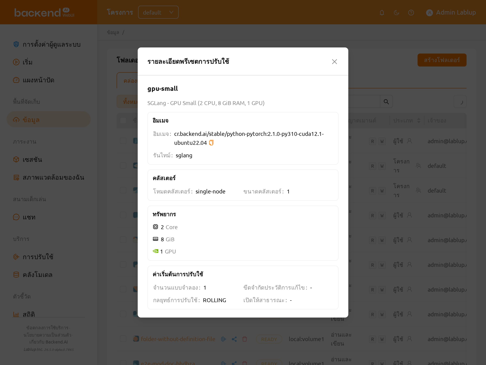
รูปที่ 24.37 คลิก OK เพื่อสร้าง deployment โดยใช้ค่าของพรีเซ็ตที่เลือก
หากต้องการกำหนดค่าขั้นสูง ให้ไปที่หน้า Deployments แล้วสร้าง deployment ใหม่ด้วยตนเอง โมดอลการเพิ่ม revision มีสองโหมด ได้แก่ Preset Mode (นำพรีเซ็ตไปใช้โดยตรง) และ Advanced Mode ซึ่งจะเปิด deployment launcher โดยเติมค่าของพรีเซ็ตไว้ล่วงหน้า ทำให้คุณสามารถตรวจสอบและปรับแต่งทุกฟิลด์ก่อนยืนยันได้ การแก้ไขฟิลด์ใน Advanced Mode จะไม่ เปลี่ยนพรีเซ็ตต้นทาง แต่จะเปลี่ยนเฉพาะค่าที่ใช้สำหรับ deployment ครั้งนี้เท่านั้น
จัดการนโยบายทรัพยากร#
นโยบายทรัพยากรคีย์แพร์#
ใน Backend.AI ผู้ดูแลระบบมีความสามารถในการกำหนดขีดจำกัดของทรัพยากรทั้งหมดที่พร้อมใช้งานสำหรับแต่ละคีย์แพร์ ผู้ใช้ และโปรเจกต์ นโยบายทรัพยากรช่วยให้คุณกำหนดทรัพยากรสูงสุดที่อนุญาตและการตั้งค่าอื่นๆ ที่เกี่ยวข้องกับเซสชันการคำนวณได้ นอกจากนี้ ยังสามารถสร้างนโยบายทรัพยากรหลายรายการสำหรับความต้องการที่แตกต่างกัน เช่น ข้อกำหนดของผู้ใช้หรือการวิจัย และนำไปใช้เป็นรายบุคคลได้
หน้านโยบายทรัพยากรช่วยให้ผู้ดูแลระบบสามารถดูรายการของนโยบายทรัพยากรที่ลงทะเบียนทั้งหมด ผู้ดูแลระบบสามารถตรวจสอบนโยบายทรัพยากรที่กำหนดไว้สำหรับคีย์แพร์ ผู้ใช้ และโปรเจกต์ได้โดยตรงในหน้านี้ มาเริ่มกันด้วยการตรวจสอบนโยบายทรัพยากรสำหรับคีย์แพร์ สัญลักษณ์อินฟินิตี้ (∞) บ่งบอกว่าไม่มีข้อจำกัดทรัพยากรที่ใช้กับทรัพยากรเหล่านั้น
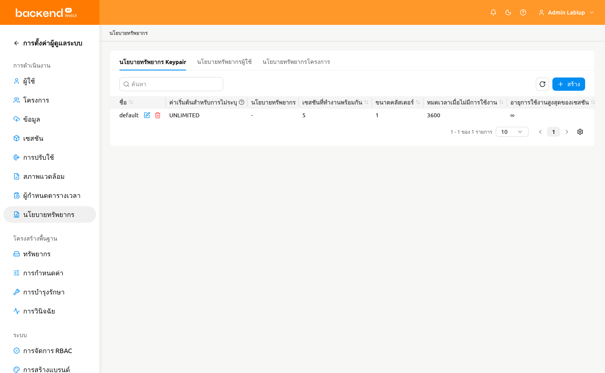
บัญชีผู้ใช้ที่ใช้ในคู่มือนี้ได้รับการกำหนดให้ใช้นโยบายทรัพยากร default ในปัจจุบัน ซึ่งสามารถตรวจสอบได้ในแท็บข้อมูลประจำตัวของหน้าผู้ใช้ คุณยังสามารถยืนยันได้ว่านโยบายทรัพยากรทั้งหมดถูกตั้งค่าเป็น default ในแผงนโยบายทรัพยากร
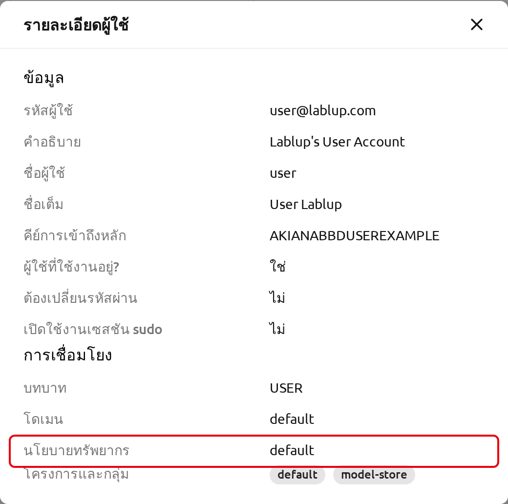
ตารางนโยบายทรัพยากรคีย์แพร์มีคอลัมน์ต่อไปนี้ สองคอลัมน์ในนั้นอธิบายวิธีการนำนโยบายไปใช้ มากกว่าจะเป็นค่าขีดจำกัด:
- ชื่อ: ชื่อของนโยบาย เซลล์นี้ยังมีการกระทำแบบอินไลน์ ข้อมูล, แก้ไข และ ลบ
- ค่าเริ่มต้นสำหรับการไม่ระบุ: พฤติกรรมของนโยบายเมื่อเซสชันไม่ได้ระบุ CPU หรือหน่วยความจำอย่างชัดเจน
UNLIMITEDอนุญาตให้ใช้งานได้ถึงความจุของโหนดเอเจนต์ ส่วนLIMITEDจะไม่จัดสรรทรัพยากรเว้นแต่จะระบุอย่างชัดเจน ในกรณีส่วนใหญ่แนะนำUNLIMITEDวางเมาส์เหนือไอคอนเครื่องหมายคำถามในหัวคอลัมน์เพื่อดูคำอธิบายเดียวกันใน UI - นโยบายทรัพยากร: ช่องทรัพยากรที่นโยบายอนุญาต
- เซสชันที่ทำงานพร้อมกัน, ขนาดคลัสเตอร์, เวลาว่างสูงสุด, อายุเซสชันสูงสุด, โหนดที่เก็บข้อมูล, จำนวนเซสชันที่รอสูงสุด, จำนวนเซสชัน SFTP พร้อมกันสูงสุด: ค่าขีดจำกัดแต่ละรายการที่อธิบายด้านล่าง
- ช่องทรัพยากรเซสชันที่รออยู่สูงสุด: ช่องทรัพยากรที่นโยบายอนุญาตสำหรับเซสชันที่รออยู่ในสถานะ
PENDINGโดยแสดงแยกตามชนิดทรัพยากร (แสดงเป็น∞เมื่อไม่จำกัด) คอลัมน์นี้เป็นแบบอ่านอย่างเดียวใน WebUI เนื่องจากไดอะล็อกนโยบายทรัพยากรไม่มีฟิลด์นี้ - สร้างเมื่อ: เวลาที่สร้างนโยบาย
คุณสามารถใช้ตัวกรองคุณสมบัติ การเรียงลำดับ และตัวแบ่งหน้าของตารางเพื่อค้นหานโยบายที่ต้องการได้
หากต้องการเปลี่ยนนโยบายทรัพยากร ให้คลิกการกระทำ แก้ไข (ดินสอ) ในคอลัมน์ชื่อของนโยบายนั้น ในไดอะล็อก อัปเดตนโยบายทรัพยากรคู่คีย์ ทุกตัวเลือก สามารถแก้ไขได้ยกเว้นชื่อนโยบาย ซึ่งทำหน้าที่เป็นคีย์หลักสำหรับ แยกแยะนโยบายทรัพยากรในรายการ ยกเลิกการเลือกช่องทำเครื่องหมาย Unlimited ที่ด้านล่างของ CPU, RAM และ fGPU และตั้งค่าขีดจำกัดทรัพยากรตามค่าที่ต้องการ ตรวจสอบให้แน่ใจว่าทรัพยากรที่จัดสรรน้อยกว่าความจุฮาร์ดแวร์ทั้งหมด ในกรณีนี้ ตั้งค่า CPU, RAM และ fGPU เป็น 2, 4 และ 1 ตามลำดับ คลิก บันทึก เพื่อนำนโยบายทรัพยากรที่เปลี่ยนแปลงไปใช้
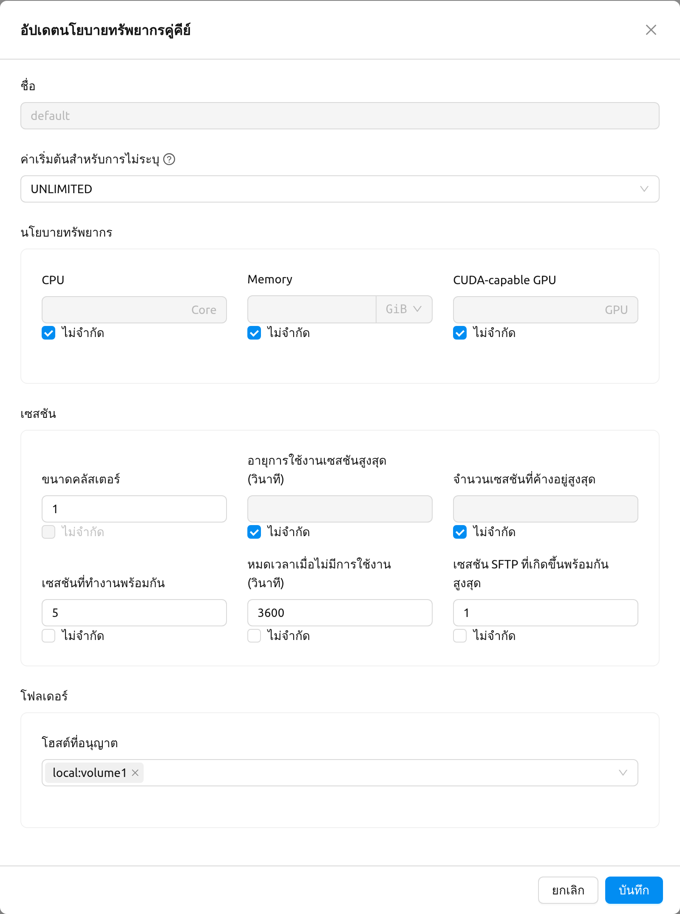
สำหรับรายละเอียดของแต่ละตัวเลือกในกล่องโต้ตอบนโยบายทรัพยากร โปรดดูคำอธิบายด้านล่าง
นโยบายทรัพยากร
- CPU: ระบุจำนวนคอร์ CPU สูงสุด (ค่าสูงสุด: 512)
- Memory: ระบุปริมาณหน่วยความจำสูงสุดเป็น GB ควรตั้งค่าหน่วยความจำให้ใหญ่เป็น สองเท่าของค่าสูงสุดของหน่วยความจำ GPU (ค่าสูงสุด: 1024)
- CUDA-capable GPU: ระบุจำนวน GPU จริงสูงสุด หาก fractional GPU ถูกเปิดใช้งาน โดยเซิร์ฟเวอร์ การตั้งค่านี้จะไม่มีผล (ค่าสูงสุด: 64)
- CUDA-capable GPU (fractional): Fractional GPU (fGPU) คือการแบ่ง GPU เดียวเป็น หลายพาร์ติชันเพื่อใช้ GPU ได้อย่างมีประสิทธิภาพ โปรดสังเกตว่าปริมาณ fGPU ขั้นต่ำที่ต้องการจะแตกต่างกันไปตามแต่ละอิมเมจ หาก fractional GPU ไม่ได้เปิดใช้งาน โดยเซิร์ฟเวอร์ การตั้งค่านี้จะไม่มีผล (ค่าสูงสุด: 256)
Sessions
- Cluster Size: ตั้งค่าขีดจำกัดสูงสุดของจำนวน multi-container หรือ multi-node ที่สามารถกำหนดค่าได้เมื่อสร้างเซสชัน
- Session Lifetime (วินาที): จำกัดอายุการใช้งานสูงสุดของเซสชันการคำนวณ
ตั้งแต่การจองในสถานะใช้งาน รวมถึงสถานะ
PENDINGและRUNNINGหลังจากเวลานี้ เซสชันจะถูกบังคับยุติ แม้ว่าจะใช้งานเต็มที่ สิ่งนี้มีประโยชน์ในการป้องกันเซสชัน จากการทำงานอย่างไม่มีกำหนด - Max Pending Session Count: จำนวนเซสชันการคำนวณสูงสุดที่สามารถอยู่ใน
สถานะ
PENDINGพร้อมกันได้ - เซสชันที่ทำงานพร้อมกัน: จำนวนเซสชันการคำนวณพร้อมกันสูงสุดต่อคีย์แพร์ ตัวอย่างเช่น หากตั้งค่าเป็น 3 ผู้ใช้ที่ผูกกับนโยบายทรัพยากรนี้ ไม่สามารถสร้างเซสชันการคำนวณพร้อมกันเกิน 3 เซสชัน (ค่าสูงสุด: 100)
- Idle timeout (วินาที): ช่วงเวลาที่สามารถกำหนดค่าได้ที่ผู้ใช้สามารถ ปล่อยเซสชันของตนไว้โดยไม่ได้แตะต้อง หากไม่มีกิจกรรมใดๆ บนเซสชัน การคำนวณเป็นเวลานานถึง idle timeout เซสชันจะถูก garbage collect และถูกทำลายโดยอัตโนมัติ เกณฑ์ของ "ความไม่ใช้งาน" สามารถเป็น ได้หลากหลายและกำหนดโดยผู้ดูแลระบบ (ค่าสูงสุด: 15552000 (ประมาณ 180 วัน))
- Max Concurrent SFTP Sessions: จำนวนเซสชัน SFTP พร้อมกันสูงสุด
โฟลเดอร์
- Allowed hosts: Backend.AI รองรับ NFS mountpoint หลายตัว ฟิลด์นี้จำกัด ความสามารถในการเข้าถึง แม้ว่าจะมี NFS ชื่อ "data-1" ที่เมาท์อยู่ บน Backend.AI ผู้ใช้ก็ไม่สามารถเข้าถึงได้เว้นแต่จะได้รับอนุญาตโดยนโยบายทรัพยากร
- (เลิกใช้แล้ว) Max. #: จำนวนโฟลเดอร์จัดเก็บสูงสุดที่ สามารถสร้าง/เชิญได้ (ค่าสูงสุด: 100)
ในรายการนโยบายทรัพยากรคีย์แพร์ ตรวจสอบว่าค่า Resources ของนโยบาย default ถูกอัปเดตแล้ว
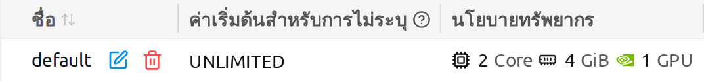
คุณสามารถสร้างนโยบายทรัพยากรใหม่ได้โดยคลิกปุ่ม สร้าง ที่มุมบนขวาของตาราง ค่าการตั้งค่าแต่ละค่า เหมือนกับที่อธิบายไว้ข้างต้น
หากต้องการสร้างนโยบายทรัพยากรและเชื่อมโยงกับคีย์แพร์ ให้ไปที่แท็บ ข้อมูลประจำตัวของหน้าผู้ใช้ คลิกการกระทำ แก้ไข (ดินสอ) ที่อยู่ใน คอลัมน์ชื่อ ของคีย์แพร์ที่ต้องการ และคลิกฟิลด์ Select Policy เพื่อ เลือกนโยบาย
เมื่อเลือกนโยบายทรัพยากรคีย์แพร์สำหรับผู้ใช้รายใดรายหนึ่ง ตารางการเลือกจะมีคอลัมน์ คีย์แพร์ ที่กำหนด ซึ่งแสดงว่าคีย์แพร์ใดของผู้ใช้ที่กำลังผูกกับแต่ละนโยบายในขณะนี้ เพื่อให้คุณสามารถยืนยันการกำหนดที่มีอยู่ของผู้ใช้ก่อนเลือกนโยบายได้
คุณยังสามารถลบคีย์แพร์ทรัพยากรแต่ละรายการได้โดยคลิกไอคอนถังขยะ
ในคอลัมน์ชื่อ เมื่อคุณคลิกไอคอน ไดอะล็อกยืนยันจะปรากฏขึ้น
พิมพ์ชื่อนโยบายในช่องยืนยัน แล้วคลิกปุ่ม ลบ เพื่อลบ
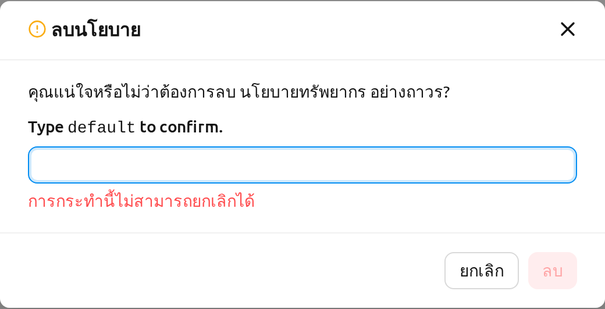
หากมีผู้ใช้ (รวมถึงผู้ใช้ที่ไม่ได้ใช้งาน) ที่ใช้นโยบายทรัพยากรที่ต้องการลบ การลบอาจไม่สำเร็จ ก่อนลบนโยบายทรัพยากร โปรดตรวจสอบให้แน่ใจว่า ไม่มีผู้ใช้เหลืออยู่ภายใต้นโยบายทรัพยากรนั้น
หากคุณต้องการซ่อนหรือแสดงคอลัมน์เฉพาะ ให้คลิก 'การตั้งค่า' ที่มุมล่างขวาของ ตาราง สิ่งนี้จะแสดงกล่องโต้ตอบที่คุณสามารถเลือกคอลัมน์ที่ต้องการแสดงได้
นโยบายทรัพยากรผู้ใช้#
Backend.AI รองรับการจัดการนโยบายทรัพยากรผู้ใช้ แม้ว่าผู้ใช้แต่ละคน สามารถมีคีย์แพร์หลายรายการได้ แต่ผู้ใช้สามารถมีนโยบายทรัพยากรผู้ใช้ได้เพียงนโยบายเดียว ในหน้านโยบายทรัพยากรผู้ใช้ ผู้ใช้สามารถตั้งข้อจำกัดในการตั้งค่าต่างๆ ที่เกี่ยวข้องกับโฟลเดอร์ เช่น Max Folder Count และ Max Folder Size รวมถึงขีดจำกัดทรัพยากรแต่ละรายการเช่น Max Session Count Per Model Session และ Max Customized Image Count
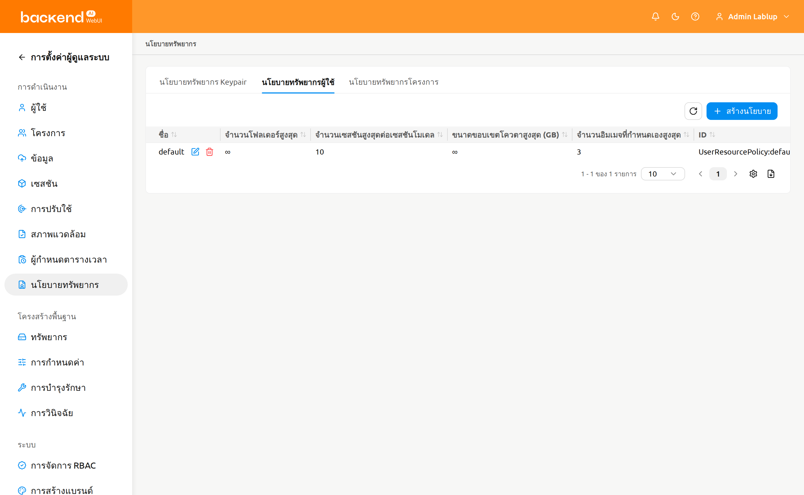
ตารางแสดงคอลัมน์ต่อไปนี้: ID, ชื่อ (พร้อมการกระทำแบบอินไลน์ แก้ไข และ ลบ), จำนวนโฟลเดอร์สูงสุด, ขนาดขอบเขตโควตาสูงสุด, จำนวนอิมเมจที่กำหนดเองสูงสุด และ สร้างเมื่อ ใช้ตัวควบคุมการตั้งค่าคอลัมน์เพื่อซ่อนคอลัมน์ที่ไม่ต้องการ ตัวเลือกของคุณจะถูกเก็บไว้ต่อเบราว์เซอร์
การเรียงลำดับและการแบ่งหน้าทั้งหมดประมวลผลบนเซิร์ฟเวอร์ แท็บนี้จึงยังตอบสนองได้ดีในคลัสเตอร์ที่มีนโยบายจำนวนมาก คลิกหัวคอลัมน์เพื่อเปลี่ยนลำดับการเรียง และใช้ตัวแบ่งหน้าด้านล่างตารางเพื่อเลื่อนดูผลลัพธ์
หากต้องการสร้างนโยบายทรัพยากรผู้ใช้ใหม่ ให้คลิกปุ่ม สร้าง
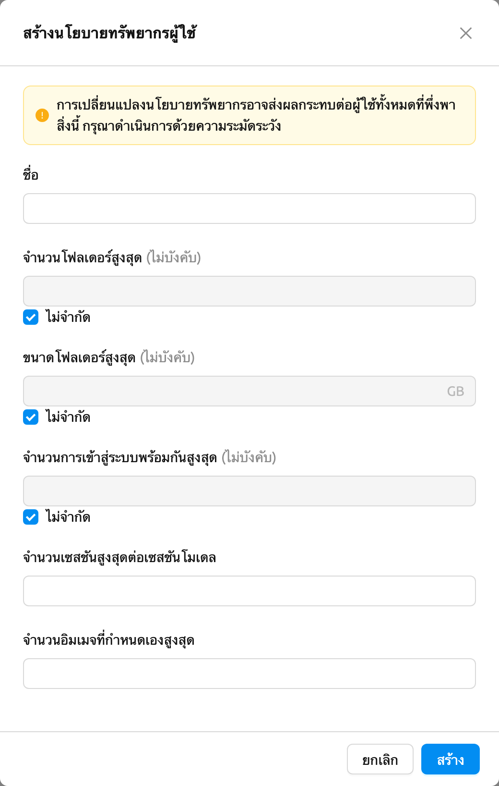
- Name: ชื่อของนโยบายทรัพยากรผู้ใช้
- Max Folder Count: จำนวนโฟลเดอร์สูงสุดที่ผู้ใช้สามารถสร้างได้ หากจำนวนโฟลเดอร์ของผู้ใช้เกินค่านี้ ผู้ใช้จะไม่สามารถสร้างโฟลเดอร์ใหม่ได้ หากตั้งค่าเป็น Unlimited จะแสดงเป็น "∞"
- Max Folder Size: ขนาดสูงสุดของพื้นที่จัดเก็บของผู้ใช้ หาก พื้นที่จัดเก็บของผู้ใช้เกินค่านี้ ผู้ใช้จะไม่สามารถสร้างโฟลเดอร์ จัดเก็บใหม่ได้ หากตั้งค่าเป็น Unlimited จะแสดงเป็น "∞" ในรายการ ขีดจำกัดนี้จะแสดงในคอลัมน์ ขนาดขอบเขตโควตาสูงสุด พร้อมหน่วยที่เหมาะกับค่าที่ตั้งไว้
- Max Concurrent Logins: จำนวนเซสชันสูงสุดที่ผู้ใช้สามารถเข้าสู่ระบบพร้อมกันได้ หากตั้งค่าเป็น Unlimited จะแสดงเป็น "∞"
- Max Session Count Per Model Session: จำนวนเซสชันสูงสุดที่พร้อมใช้งานต่อ model service ที่สร้างโดยผู้ใช้ การเพิ่มค่านี้อาจทำให้ session scheduler มีภาระงานหนักและอาจทำให้ระบบหยุดทำงาน ดังนั้นโปรดระมัดระวังเมื่อ ปรับการตั้งค่านี้
- Max Customized Image Count: จำนวนอิมเมจที่ปรับแต่งสูงสุดที่ ผู้ใช้สามารถสร้างได้ หากจำนวนอิมเมจที่ปรับแต่งของผู้ใช้เกินค่านี้ ผู้ใช้จะไม่สามารถสร้างอิมเมจที่ปรับแต่งใหม่ได้ หากคุณต้องการทราบข้อมูลเพิ่มเติมเกี่ยวกับ อิมเมจที่ปรับแต่ง โปรดดูที่ส่วน My Environments
หากต้องการเปลี่ยนนโยบายที่มีอยู่ ให้คลิกการกระทำ แก้ไข (ดินสอ) ในคอลัมน์ชื่อ ไดอะล็อกมีชื่อว่า อัปเดตนโยบายทรัพยากรผู้ใช้ และปุ่มส่งคือ บันทึก หากต้องการลบ ให้คลิกการกระทำ ลบ (ถังขยะ)
การเปลี่ยนแปลงนโยบายทรัพยากรอาจส่งผลกระทบต่อผู้ใช้ทั้งหมดที่ใช้นโยบายนั้น ดังนั้นโปรดใช้ ด้วยความระมัดระวัง
เช่นเดียวกับนโยบายทรัพยากรคีย์แพร์ ผู้ใช้สามารถเลือกและแสดงเฉพาะคอลัมน์ที่ต้องการโดย คลิกปุ่ม 'การตั้งค่า' ที่มุมล่างขวาของตาราง
นโยบายทรัพยากรโปรเจกต์#
Backend.AI รองรับการจัดการนโยบายทรัพยากรโปรเจกต์ นโยบายทรัพยากรโปรเจกต์จัดการพื้นที่จัดเก็บ (โควตา) และข้อจำกัดที่เกี่ยวข้องกับโฟลเดอร์สำหรับโปรเจกต์
เมื่อคลิกแท็บ 'โปรเจกต์' ของหน้า 'นโยบายทรัพยากร' คุณจะเห็นรายการนโยบายทรัพยากรโปรเจกต์
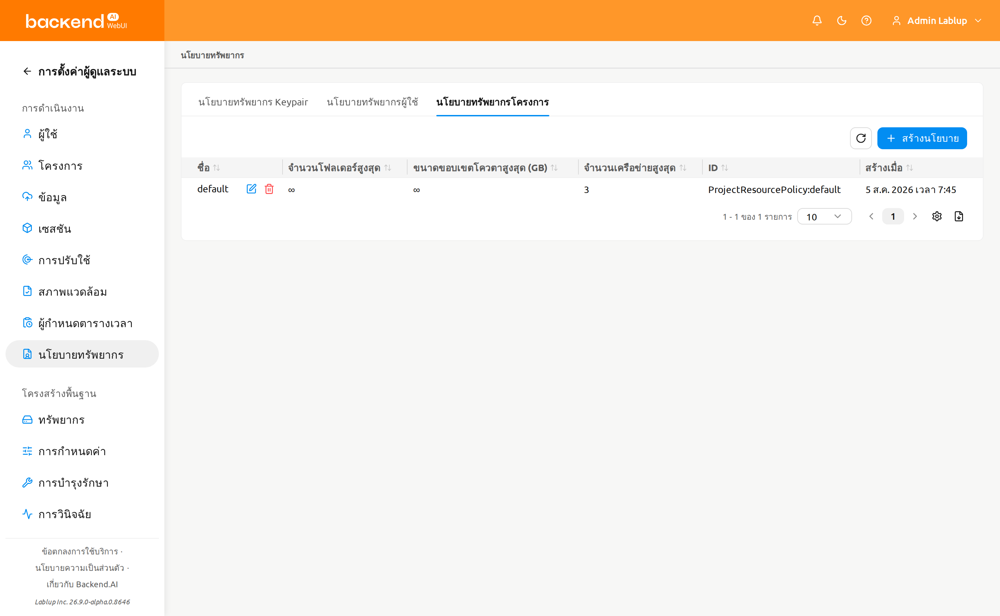
ในตารางนโยบายทรัพยากรโปรเจกต์ คุณสามารถตรวจสอบรายการนโยบายและใช้การกระทำแบบอินไลน์ แก้ไข และ ลบ สำหรับแต่ละรายการได้ นอกจากนี้ยังใช้ตัวกรองคุณสมบัติ การเรียงลำดับ และตัวแบ่งหน้าของตารางเพื่อค้นหานโยบายได้อย่างรวดเร็ว
หากต้องการสร้างนโยบายทรัพยากรโปรเจกต์ใหม่ ให้คลิกปุ่ม สร้าง ที่มุมบนขวาของตาราง
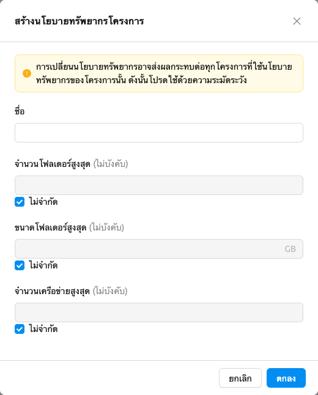
- ชื่อ: ชื่อของนโยบายทรัพยากรโปรเจกต์
- จำนวนโฟลเดอร์สูงสุด: จำนวนโฟลเดอร์โปรเจกต์สูงสุดที่ผู้ดูแลระบบสามารถสร้างได้ หากจำนวนโฟลเดอร์โปรเจกต์เกินค่านี้ ผู้ดูแลระบบจะไม่สามารถสร้างโฟลเดอร์โปรเจกต์ใหม่ได้ หากตั้งค่าเป็น Unlimited จะแสดงเป็น "∞"
- ขนาดโฟลเดอร์สูงสุด: ขนาดสูงสุดของพื้นที่จัดเก็บโปรเจกต์ หากพื้นที่จัดเก็บเกินค่านี้ ผู้ดูแลระบบจะไม่สามารถสร้างโฟลเดอร์โปรเจกต์ใหม่ได้ หากตั้งค่าเป็น Unlimited จะแสดงเป็น "∞"
- จำนวนเครือข่ายสูงสุด: จำนวนเครือข่ายสูงสุดที่สามารถสร้างสำหรับโปรเจกต์ได้ หากตั้งค่าเป็น Unlimited จะแสดงเป็น "∞"
ความหมายของแต่ละฟิลด์คล้ายกับนโยบายทรัพยากรผู้ใช้ ความแตกต่างคือนโยบายทรัพยากรโปรเจกต์จะใช้กับโฟลเดอร์โปรเจกต์ ในขณะที่นโยบายทรัพยากรผู้ใช้จะใช้กับโฟลเดอร์ผู้ใช้
หากต้องการเปลี่ยนแปลง ให้คลิกการกระทำ แก้ไข (ดินสอ) ในคอลัมน์ชื่อ ไดอะล็อกมีชื่อว่า อัปเดตนโยบายทรัพยากรโครงการ และปุ่มส่งคือ บันทึก ชื่อนโยบายทรัพยากรไม่สามารถแก้ไขได้ การลบสามารถทำได้โดยคลิกการกระทำ ลบ (ถังขยะ)
การเปลี่ยนนโยบายทรัพยากรอาจส่งผลกระทบต่อผู้ใช้ทั้งหมดที่ใช้นโยบายนั้น ดังนั้นควรใช้ด้วยความระมัดระวัง
คุณสามารถเลือกและแสดงเฉพาะคอลัมน์ที่ต้องการโดยคลิกปุ่ม 'การตั้งค่า' ที่มุมล่างขวาของตาราง
มุมมองรวมสำหรับเซสชันที่รอดำเนินการ#
หน้า Admin Session มีสองแท็บ แท็บ เซสชัน แสดงเซสชันการคำนวณทั้งหมดในคลัสเตอร์ และแท็บ เซสชันที่รอดำเนินการ จะแสดงมุมมองรวมของเซสชันที่รอดำเนินการทั้งหมดภายใน กลุ่มทรัพยากรที่เลือก หมายเลขดัชนีที่แสดงถัดจากสถานะจะระบุตำแหน่งในคิว ที่เซสชันจะถูกสร้างเมื่อมีทรัพยากรเพียงพอ
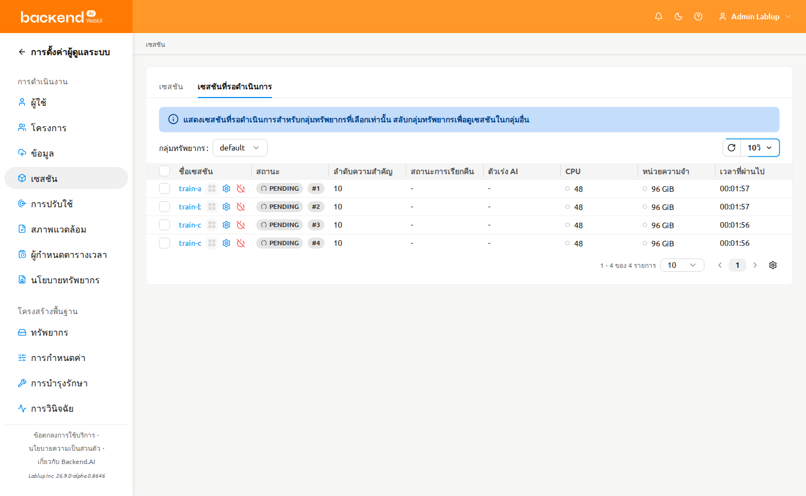
เช่นเดียวกับหน้าเซสชัน คุณสามารถคลิกชื่อเซสชันเพื่อเปิด drawer ที่แสดง ข้อมูลรายละเอียดเกี่ยวกับเซสชันได้
รายการเซสชันที่รอดำเนินการยังแสดง ลำดับความสำคัญ ของแต่ละเซสชัน ซึ่งเป็นตัวกำหนดลำดับของคิว หากต้องการเปลี่ยนค่านี้ ให้คลิกการกระทำ การตั้งค่า (รูปเฟือง) ในแถวของเซสชัน หรือเลือกเซสชันที่รอดำเนินการอย่างน้อยหนึ่งรายการด้วยช่องทำเครื่องหมาย แล้วคลิกปุ่ม การตั้งค่า ที่อยู่เหนือรายการ ทั้งสองวิธีจะเปิดไดอะล็อก การตั้งค่าเซสชัน จากนั้นกำหนด ลำดับความสำคัญ เป็นค่าระหว่าง 0 ถึง 100 แล้วคลิก บันทึก เมื่อดำเนินการสำเร็จจะมีข้อความยืนยันว่าลำดับความสำคัญของเซสชันได้รับการอัปเดตเรียบร้อยแล้ว ลำดับความสำคัญสามารถเปลี่ยนได้เฉพาะขณะที่เซสชันอยู่ในสถานะ PENDING เท่านั้น
คอลัมน์ ลำดับความสำคัญ และการกระทำสำหรับแก้ไขลำดับความสำคัญจะแสดงเฉพาะเมื่อ Backend.AI Manager เป็นเวอร์ชัน 26.4.0 ขึ้นไป
ในแท็บ เซสชัน ตัวกรองคุณสมบัติมีเงื่อนไขต่อไปนี้:
- โปรเจกต์: เลือกโปรเจกต์จากดรอปดาวน์ที่ค้นหาได้ซึ่งแสดงโปรเจกต์ในคลัสเตอร์นี้ เนื่องจากเลือกโปรเจกต์จากรายการ คุณจึงไม่ต้องค้นหาตัวระบุของโปรเจกต์ และแท็กตัวกรองที่ได้จะแสดงชื่อโปรเจกต์
- ชื่อเซสชัน, กลุ่มทรัพยากร, เอเจนต์, อีเมลของเจ้าของ: จำกัดรายการด้วยการจับคู่ข้อความ
เมื่อเปิดใช้งานฟีเจอร์ทดลอง Session resource grid view ในการตั้งค่าผู้ใช้ (ดูที่หัวข้อ คุณสมบัติการทดลอง) แท็บ เซสชัน จะแสดงตัวควบคุม View mode ถัดจากปุ่มรีเฟรช สำหรับสลับระหว่าง Table และ Grid มุมมองกริดจะแสดงหนึ่งเซลล์ต่อหนึ่งเซสชัน โดยแต่ละเซลล์มีสีตามการใช้ทรัพยากรแบบเรียลไทม์ของเซสชันนั้น สำหรับรายละเอียดของตัวควบคุมภายในมุมมองกริด ให้ดูที่หัวข้อ การแสดงผลรายการเซสชัน
ตัวจัดตาราง Fair Share#
หน้า Fair Share Scheduler จะพร้อมใช้งาน ในเมนู การตั้งค่าผู้ดูแลระบบ ฟีเจอร์นี้ช่วยให้ผู้ดูแลระบบสามารถจัดการน้ำหนักการจัดตาราง Fair Share ตามโครงสร้างลำดับชั้นของกลุ่มทรัพยากร โดเมน โปรเจกต์ และผู้ใช้
การจัดตาราง Fair Share จะจัดสรรทรัพยากรการคำนวณโดยอิงจากรูปแบบการใช้งานในอดีต เพื่อให้มั่นใจว่าทรัพยากรจะถูกกระจายอย่างเป็นธรรมในหมู่ผู้ใช้ ผู้ใช้ที่ใช้ ทรัพยากรน้อยในอดีตจะได้รับลำดับความสำคัญในการจัดตารางสูงกว่า ในขณะที่ผู้ใช้ ที่ใช้มากกว่าจะได้รับลำดับความสำคัญต่ำกว่า ผู้ดูแลระบบสามารถปรับแต่งพฤติกรรมนี้ ได้โดยการปรับน้ำหนักในแต่ละระดับของลำดับชั้น
Fair Share Scheduler จะพร้อมใช้งานเฉพาะเมื่อประเภทตัวจัดตารางของกลุ่มทรัพยากร
ถูกตั้งค่าเป็น FAIR_SHARE เท่านั้น สำหรับการกำหนดค่าประเภทตัวจัดตารางของ
กลุ่มทรัพยากร โปรดดูที่ส่วนจัดการกลุ่มทรัพยากร
หากต้องการเข้าถึงฟีเจอร์นี้ ให้คลิกเมนู Scheduler ภายใต้ การตั้งค่าผู้ดูแลระบบ ในแถบด้านข้าง หน้าจะแสดงแท็บการตั้งค่า Fair Share พร้อมอินเทอร์เฟซ drill-down 4 ขั้นตอน
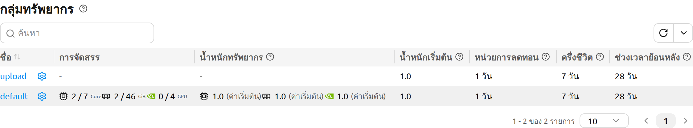
หน้าถูกจัดระเบียบเป็น 4 ขั้นตอนตามลำดับชั้น:
- กลุ่มทรัพยากร: กำหนดค่าพารามิเตอร์หลักของ Fair Share สำหรับแต่ละกลุ่มทรัพยากร
- โดเมน: ตั้งค่าน้ำหนักสำหรับโดเมนภายในกลุ่มทรัพยากร
- โปรเจกต์: ตั้งค่าน้ำหนักสำหรับโปรเจกต์ภายในโดเมน
- ผู้ใช้: ตั้งค่าน้ำหนักสำหรับผู้ใช้แต่ละคนภายในโปรเจกต์
แถบตัวบ่งชี้ขั้นตอนที่ด้านบนของหน้าจะแสดงตำแหน่งปัจจุบันในลำดับชั้น ขั้นตอนที่เสร็จสิ้นจะแสดงชื่อของรายการที่เลือก คุณสามารถคลิกที่ขั้นตอนที่ เสร็จสิ้นเพื่อย้อนกลับไปยังระดับนั้นได้
หากกลุ่มทรัพยากรที่เลือกไม่ได้ตั้งค่าประเภทตัวจัดตารางเป็น FAIR_SHARE
จะมีการแจ้งเตือนเป็นคำเตือนว่า Fair Share Scheduler ไม่ได้เปิดใช้งานสำหรับ
กลุ่มทรัพยากรนั้น
หน้านี้ยังเตือนเมื่อรายการที่คุณกำลังดูอยู่ไม่สามารถใช้กลุ่มทรัพยากรที่คุณเจาะลงมาได้จริง เนื่องจากการตรวจสอบทำโดยอ้างอิงโดเมนหรือโปรเจกต์ที่คุณเลือกระหว่างเจาะลงมา คำเตือนจึงสะท้อนตำแหน่งปัจจุบันของคุณในลำดับชั้น ไม่ใช่การเลือกก่อนหน้า:
- ในขั้นตอน โดเมน ไอคอนคำเตือนจะปรากฏถัดจากโดเมนที่ไม่ได้รับอนุญาตให้ใช้กลุ่มทรัพยากรที่เลือก วางเมาส์เหนือไอคอนเพื่อดูคำอธิบายว่ากลุ่มทรัพยากรนั้นอาจยังได้รับอนุญาตในโปรเจกต์ย่อยของโดเมน
- ในขั้นตอน โปรเจกต์ ไอคอนเดียวกันจะปรากฏบนโปรเจกต์ที่ไม่ได้รับอนุญาตให้ใช้กลุ่มทรัพยากรที่เลือก
- ในขั้นตอน ผู้ใช้ จะมีคำเตือนว่าผู้ใช้ภายใต้โปรเจกต์ที่เลือกไม่สามารถใช้กลุ่มทรัพยากรที่เลือกได้
การแจ้งเตือนเดียวกันจะแสดงซ้ำภายในโมดัลการตั้งค่าน้ำหนักด้วย จึงเห็นความไม่สอดคล้องได้ในขณะที่แก้ไขน้ำหนัก ไม่ใช่เฉพาะในตารางเท่านั้น
ในแต่ละขั้นตอน ฟีเจอร์ทั่วไปต่อไปนี้พร้อมใช้งาน:
- การแบ่งหน้า: นำทางผ่านผลลัพธ์พร้อมขนาดหน้าที่กำหนดค่าได้
กลุ่มทรัพยากร#
ขั้นตอนกลุ่มทรัพยากรจะแสดงตารางของกลุ่มทรัพยากรทั้งหมดพร้อมการกำหนดค่า Fair Share
ตารางประกอบด้วยคอลัมน์ต่อไปนี้:
- ชื่อ: ชื่อกลุ่มทรัพยากร คลิกชื่อเพื่อ drill down ไปยังการตั้งค่าระดับโดเมนของกลุ่มทรัพยากรนั้น
- ตัวควบคุม: ปุ่มตั้งค่า (เฟือง) ที่เปิด modal การตั้งค่า Fair Share ของกลุ่มทรัพยากร
- การจัดสรร: การใช้ทรัพยากรแสดงการใช้งาน/ความจุสำหรับแต่ละประเภททรัพยากรที่จัดสรรให้กลุ่มทรัพยากร (เช่น CPU, Memory, CUDA GPU)
- น้ำหนักทรัพยากร: น้ำหนักตามประเภททรัพยากร แสดง "ค่าเริ่มต้น" หากใช้น้ำหนักเริ่มต้น
- น้ำหนักเริ่มต้น: ค่าน้ำหนักสำรองสำหรับโดเมน โปรเจกต์ และผู้ใช้ที่ไม่ได้กำหนดน้ำหนัก
- หน่วยการลดทอน: ช่วงเวลา (เป็นวัน) สำหรับรวบรวมการใช้งาน
- ครึ่งชีวิต: ช่วงเวลา (เป็นวัน) ที่อัตราการสะท้อนการใช้งานลดลงครึ่งหนึ่ง
- ช่วงเวลาย้อนหลัง: ช่วง (เป็นวัน) ของประวัติการใช้งานที่สะท้อนในการคำนวณ
การตั้งค่า Fair Share ของกลุ่มทรัพยากร#
คลิกปุ่มตั้งค่า (เฟือง) ในคอลัมน์ตัวควบคุมของกลุ่มทรัพยากรเพื่อเปิด modal การตั้งค่า Fair Share
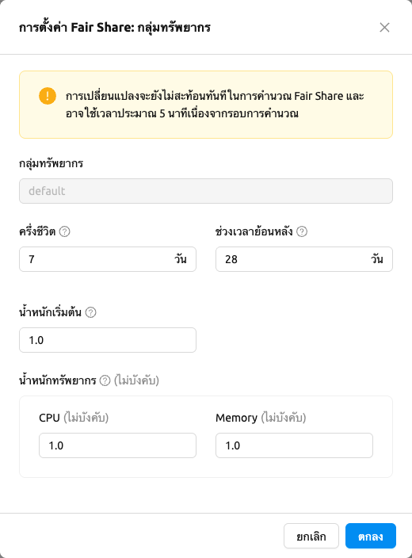
การเปลี่ยนแปลงจะยังไม่สะท้อนทันทีในการคำนวณ Fair Share และอาจใช้เวลา ประมาณ 5 นาทีเนื่องจากรอบการคำนวณ
modal ประกอบด้วยฟิลด์ต่อไปนี้:
- กลุ่มทรัพยากร: ฟิลด์อ่านอย่างเดียวที่แสดงชื่อกลุ่มทรัพยากร
- ครึ่งชีวิต: ช่วงเวลาที่อัตราการสะท้อนการใช้งานลดลงครึ่งหนึ่ง ระบุเป็นวัน (ขั้นต่ำ 1) ตัวอย่างเช่น หากตั้งเป็น 7 วัน การใช้งานเมื่อ 7 วันก่อนจะคำนวณที่ 50% และการใช้งานเมื่อ 14 วันก่อนที่ 25% แนะนำให้ตั้งค่าเป็นพหุคูณของหน่วยการลดทอน
- ช่วงเวลาย้อนหลัง: ช่วงของประวัติการใช้งานที่สะท้อนในการคำนวณ Fair Share ระบุเป็นวัน (ขั้นต่ำ 1) การใช้งานก่อนช่วงเวลานี้จะถูกยกเว้นจากการคำนวณ แนะนำให้ตั้งค่าเป็นพหุคูณของครึ่งชีวิต
- น้ำหนักเริ่มต้น: ค่าเริ่มต้นที่ใช้กับโดเมน โปรเจกต์ และผู้ใช้ที่ไม่ได้กำหนดน้ำหนัก (ขั้นต่ำ 1, ขั้น 0.1)
- น้ำหนักทรัพยากร: น้ำหนักตามประเภททรัพยากร (เช่น CPU, Memory, GPU) แต่ละรายการมีค่าขั้นต่ำ 1 และขั้น 0.1 ส่วนนี้จะแสดงเฉพาะเมื่อกลุ่มทรัพยากรมีน้ำหนักทรัพยากรเท่านั้น
โดเมน#
หลังจากเลือกกลุ่มทรัพยากร ขั้นตอนโดเมนจะแสดงตารางของโดเมนพร้อมน้ำหนัก Fair Share และการใช้งานภายในกลุ่มทรัพยากรนั้น
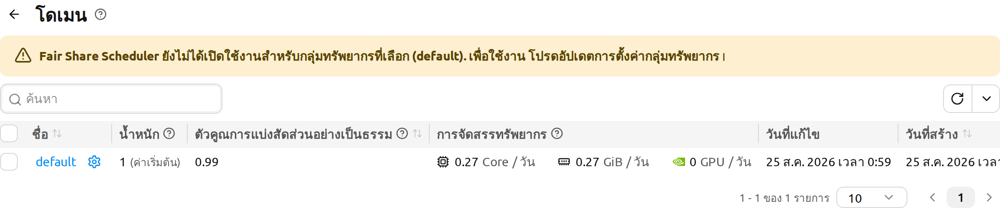
ตารางประกอบด้วยคอลัมน์ต่อไปนี้:
- ชื่อ: ชื่อโดเมน คลิกชื่อเพื่อ drill down ไปยังการตั้งค่าระดับโปรเจกต์ของโดเมนนั้น
- ตัวควบคุม: ปุ่มตั้งค่า (เฟือง) ที่เปิด modal การตั้งค่าน้ำหนักของโดเมนนี้
- น้ำหนัก: ค่าน้ำหนักปัจจุบัน แสดง "ค่าเริ่มต้น" หากใช้น้ำหนักเริ่มต้น
- ตัวคูณการแบ่งสัดส่วนอย่างเป็นธรรม: ลำดับความสำคัญในการจัดตารางที่คำนวณโดยตัวจัดตาราง ค่าที่สูงกว่าหมายถึงลำดับความสำคัญที่สูงกว่า
- การจัดสรรทรัพยากร: การใช้ทรัพยากรเฉลี่ยต่อวันที่ถูกลดทอนตามประเภททรัพยากร (CPU, Memory, GPU / Day)
- แก้ไขเมื่อ: timestamp การแก้ไขครั้งล่าสุด
- สร้างเมื่อ: timestamp การสร้าง
คุณสามารถเลือกหลายแถวโดยใช้ช่องทำเครื่องหมายทางด้านซ้ายของตาราง เมื่อเลือก แถวแล้ว จะมีปุ่มเพิ่มเติม 2 ปุ่มปรากฏขึ้น:
- กราฟการใช้งาน (ไอคอนแผนภูมิ): เปิด modal ประวัติการใช้งานสำหรับรายการที่เลือก
- แก้ไขเป็นกลุ่ม (ไอคอนเฟือง): เปิด modal การตั้งค่าน้ำหนักเพื่อแก้ไขน้ำหนักของรายการที่เลือกทั้งหมดพร้อมกัน
โปรเจกต์#
หลังจากเลือกโดเมน ขั้นตอนโปรเจกต์จะแสดงตารางของโปรเจกต์ที่มีโครงสร้าง คอลัมน์เดียวกันกับขั้นตอนโดเมน คลิกชื่อโปรเจกต์เพื่อ drill down ไปยัง ขั้นตอนผู้ใช้
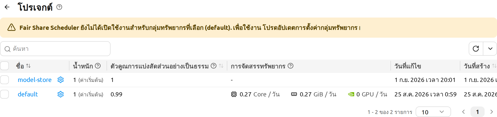
การดำเนินการเป็นกลุ่มเดียวกัน (กราฟการใช้งานและแก้ไขเป็นกลุ่ม) จะพร้อมใช้งานเมื่อเลือกแถว
ผู้ใช้#
หลังจากเลือกโปรเจกต์ ขั้นตอนผู้ใช้จะแสดงตารางของผู้ใช้แต่ละคนพร้อมน้ำหนัก Fair Share และการใช้งาน
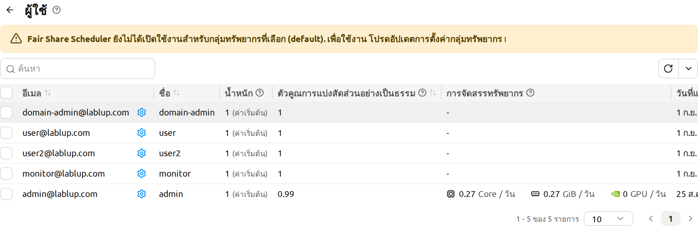
ตารางประกอบด้วยคอลัมน์ต่อไปนี้:
- อีเมล: ที่อยู่อีเมลของผู้ใช้
- ชื่อ: ชื่อของผู้ใช้
- ตัวควบคุม: ปุ่มตั้งค่า (เฟือง) ที่เปิด modal การตั้งค่าน้ำหนักของผู้ใช้นี้
- น้ำหนัก: ค่าน้ำหนักปัจจุบัน แสดง "ค่าเริ่มต้น" หากใช้น้ำหนักเริ่มต้น
- ตัวคูณการแบ่งสัดส่วนอย่างเป็นธรรม: ลำดับความสำคัญในการจัดตารางที่คำนวณโดยตัวจัดตาราง
- การจัดสรรทรัพยากร: การใช้ทรัพยากรเฉลี่ยต่อวันที่ถูกลดทอนตามประเภททรัพยากร
- แก้ไขเมื่อ: timestamp การแก้ไขครั้งล่าสุด
- สร้างเมื่อ: timestamp การสร้าง
การดำเนินการเป็นกลุ่มเดียวกัน (กราฟการใช้งานและแก้ไขเป็นกลุ่ม) จะพร้อมใช้งานเมื่อเลือกแถว
การแก้ไขน้ำหนัก Fair Share#
หากต้องการแก้ไขน้ำหนัก Fair Share สำหรับโดเมน โปรเจกต์ หรือผู้ใช้ ให้คลิกปุ่ม ตั้งค่า (เฟือง) ในคอลัมน์ตัวควบคุมของแถวที่ต้องการ modal การตั้งค่าน้ำหนักจะเปิดขึ้น
การเปลี่ยนแปลงจะยังไม่สะท้อนทันทีในการคำนวณ Fair Share และอาจใช้เวลา ประมาณ 5 นาทีเนื่องจากรอบการคำนวณ
ในโหมดแก้ไขเดี่ยว modal จะแสดงชื่อรายการ (อ่านอย่างเดียว) และฟิลด์ป้อนน้ำหนัก
- น้ำหนัก: ตัวคูณฐานที่กำหนดลำดับความสำคัญสำหรับการจัดตารางแบบ Fair Share ยิ่งค่าสูง จะมีลำดับความสำคัญสูงขึ้น ค่าเริ่มต้นคือ "1.0" น้ำหนัก "2.0" จะมีลำดับความสำคัญเป็นสองเท่าของ "1.0" ค่าขั้นต่ำคือ 1 และขั้นคือ 0.1
หากต้องการแก้ไขน้ำหนักของหลายรายการพร้อมกัน ให้เลือกแถวที่ต้องการโดยใช้ช่อง ทำเครื่องหมายในตาราง จากนั้นคลิกปุ่มแก้ไขเป็นกลุ่ม (ไอคอนเฟือง) ในโหมด แก้ไขเป็นกลุ่ม modal จะแสดงรายการแท็กของรายการที่เลือกทั้งหมดและฟิลด์ป้อน น้ำหนักเดียวที่จะใช้กับทุกรายการ
หากกลุ่มทรัพยากรที่เลือกไม่ได้ตั้งค่าประเภทตัวจัดตารางเป็น FAIR_SHARE
จะมีการแจ้งเตือนเป็นคำเตือนแสดงใน modal
การดูประวัติการใช้งาน#
หากต้องการดูประวัติการใช้งานของโดเมน โปรเจกต์ หรือผู้ใช้ ให้เลือกแถวที่ต้องการ โดยใช้ช่องทำเครื่องหมายในตาราง จากนั้นคลิกปุ่มกราฟการใช้งาน (ไอคอนแผนภูมิ) modal ประวัติการใช้งานจะเปิดขึ้น
modal จะแสดงข้อมูลต่อไปนี้:
- ตัวเลือกช่วงวันที่: เลือกช่วงวันที่สำหรับประวัติการใช้งาน มีพรีเซ็ตสำหรับ 7 วันที่ผ่านมา, 30 วันที่ผ่านมา และ 90 วันที่ผ่านมา
- ปุ่มรีเฟรช: รีเฟรชข้อมูลการใช้งานด้วยตนเอง
- ข้อมูลบริบท: แสดงกลุ่มทรัพยากร โดเมน และโปรเจกต์ (ขึ้นอยู่กับขั้นตอนปัจจุบัน)
- รายการที่เลือก: แสดงเป็นแท็กที่แสดงชื่อของรายการที่เลือก
- แผนภูมิการใช้งาน: แผนภูมิแสดงการใช้ทรัพยากรเฉลี่ยต่อวันในช่วงเวลาที่เลือก
การจัดการอิมเมจ#
ผู้ดูแลระบบสามารถจัดการอิมเมจที่ใช้ในการสร้างเซสชันการคำนวณได้ในแท็บอิมเมจของหน้าสภาพแวดล้อม ในแท็บนี้จะแสดงข้อมูลเมตาของอิมเมจทั้งหมดที่อยู่ในเซิร์ฟเวอร์ Backend.AI ในปัจจุบัน คุณสามารถตรวจสอบข้อมูลต่างๆ เช่น registry, สถาปัตยกรรม, namespace, ชื่ออิมเมจ, digest และทรัพยากรขั้นต่ำที่จำเป็นสำหรับแต่ละอิมเมจ สำหรับอิมเมจที่ดาวน์โหลดไปยังโหนดเอเจนต์หนึ่งรายการขึ้นไป จะมีแท็ก installed ในคอลัมน์สถานะ สำหรับอิมเมจส่วนตัวจะมีแท็ก ส่วนตัว แสดงในคอลัมน์สถานะเพิ่มเติมด้วย และอิมเมจส่วนตัวจะไม่สามารถเลือกได้ในตัวเปิดเซสชันแม้ว่าจะติดตั้งไว้แล้วก็ตาม
ฟีเจอร์การติดตั้งอิมเมจโดยเลือกเอเจนต์เฉพาะกำลังอยู่ระหว่างการพัฒนา
รายการอิมเมจจะแสดงคอลัมน์เพิ่มเติมสำหรับข้อมูลอิมเมจที่ละเอียดยิ่งขึ้น:
- สถาปัตยกรรม: สถาปัตยกรรม CPU ของอิมเมจ (เช่น x86_64, aarch64)
- เนมสเปซ: เนมสเปซของอิมเมจภายในรีจิสทรี
- ชื่อภาพฐาน: ชื่อพื้นฐานของอิมเมจ พร้อมแท็กนามแฝงเพื่อให้ระบุตัวตนได้ง่ายขึ้น
- เวอร์ชัน: แท็กเวอร์ชันของอิมเมจ
- แท็ก: แท็กรายละเอียดที่เกี่ยวข้องกับอิมเมจ แสดงเป็นแท็กคู่พร้อมนามแฝง
คุณสามารถเลือกอิมเมจที่ยังไม่ได้ติดตั้งหลายรายการ แล้วคลิกปุ่ม ติดตั้งอิมเมจ เพื่อติดตั้งพร้อมกันได้ การติดตั้งอิมเมจจะเพิ่มเซสชันระยะสั้นเข้าคิวเพื่อดึงอิมเมจ ดังนั้นไดอะล็อกจึงให้คุณระบุว่าเซสชันดังกล่าวจะทำงานที่ใด
- โปรเจกต์ของเซสชันการติดตั้ง: โปรเจกต์ที่เซสชันการติดตั้งจะทำงาน เซสชันจะถูกสร้างในโปรเจกต์นี้ในฐานะเซสชันของคุณเอง จึงแสดงเฉพาะโปรเจกต์ที่คุณเป็นสมาชิกอยู่เท่านั้น
- กลุ่มทรัพยากรเป้าหมาย: กลุ่มทรัพยากรที่จะดึงอิมเมจไปไว้ โดยจะแสดงเฉพาะกลุ่มทรัพยากรที่เข้าถึงได้จากโปรเจกต์ ที่เลือกเท่านั้น
ทั้งสองช่องเป็นช่องที่ต้องระบุ และปุ่ม ติดตั้ง ในไดอะล็อกจะยังคงถูกปิดใช้งานจนกว่าคุณจะเลือกโปรเจกต์และกลุ่มทรัพยากร อิมเมจที่เลือกไว้ซึ่งติดตั้งอยู่แล้วจะถูกยกเว้นจากคำขอ
คุณสามารถเปลี่ยนข้อกำหนดทรัพยากรขั้นต่ำสำหรับแต่ละอิมเมจได้โดยคลิกการกระทำ แก้ไข (ดินสอ) ในคอลัมน์ 'การควบคุม' ซึ่งจะเปิดไดอะล็อก แก้ไขขีด จำกัด ทรัพยากรภาพขั้นต่ำ แต่ละอิมเมจมีข้อกำหนดฮาร์ดแวร์และทรัพยากร สำหรับการดำเนินการขั้นต่ำ (เช่น สำหรับอิมเมจที่ใช้เฉพาะ GPU จะต้องมีการจัดสรร GPU ขั้นต่ำ) ค่าเริ่มต้นสำหรับปริมาณทรัพยากรขั้นต่ำ จะถูกจัดเตรียมไว้เป็นส่วนหนึ่งของข้อมูลเมตาของอิมเมจ หากมีความพยายามที่จะ สร้างเซสชันการคำนวณด้วยทรัพยากรที่น้อยกว่าปริมาณ ทรัพยากรที่ระบุในแต่ละอิมเมจ คำขอจะถูกปรับเป็น ข้อกำหนดทรัพยากรขั้นต่ำสำหรับอิมเมจโดยอัตโนมัติและสร้างขึ้น ไม่ได้ถูกยกเลิก
ข้อกำหนดทรัพยากรขั้นต่ำที่รวมอยู่ในข้อมูลเมตาของอิมเมจเป็นค่าที่ได้รับการทดสอบและกำหนดไว้แล้ว ดังนั้นหากคุณไม่มีเหตุผลที่ชัดเจนในการเปลี่ยน ขอแนะนำให้ใช้ค่าเริ่มต้น
นอกจากนี้ คุณยังสามารถเพิ่มหรือแก้ไขแอปที่รองรับสำหรับแต่ละอิมเมจได้โดยคลิกไอคอน 'Apps' ที่อยู่ในคอลัมน์ 'การควบคุม' เมื่อคุณคลิกไอคอน ชื่อของแอปและหมายเลขพอร์ตที่สอดคล้องกันจะถูกแสดงขึ้น
ในอินเทอร์เฟซนี้ คุณสามารถเพิ่มแอปพลิเคชันที่กำหนดเองที่รองรับได้โดยคลิกปุ่ม '+ Add' ด้านล่าง หากต้องการลบแอปพลิเคชัน ให้คลิกปุ่ม 'ถังขยะ' ทางด้านขวาของแต่ละแถว
การจัดการ Docker Registry#
คุณสามารถคลิกแท็บทะเบียนในหน้าสภาพแวดล้อม เพื่อดูข้อมูลของ Docker registry ที่เชื่อมต่ออยู่ในปัจจุบัน cr.backend.ai ถูกลงทะเบียนเป็นค่าเริ่มต้น ซึ่งเป็น registry ที่ให้บริการโดย Harbor
ในสภาพแวดล้อมแบบออฟไลน์ ไม่สามารถเข้าถึง registry เริ่มต้นได้ ให้คลิกไอคอนถังขยะทางขวาเพื่อลบออก
คลิกไอคอนรีเฟรชในคอลัมน์ 'การควบคุม' เพื่ออัปเดตข้อมูลเมตาอิมเมจสำหรับ Backend.AI จาก registry ที่เชื่อมต่อ ข้อมูลอิมเมจที่ไม่มีเลเบลสำหรับ Backend.AI จะไม่ถูกอัปเดต
คลิกปุ่ม เพิ่มทะเบียน เพื่อเพิ่ม Docker registry ส่วนตัวของคุณ กล่องโต้ตอบสร้าง registry มีฟิลด์ต่อไปนี้:
- ชื่อรีจิสทรี: ชื่อเฉพาะของ registry (สูงสุด 50 ตัวอักษร) ต้องตรงกับคำนำหน้าที่ใช้ในชื่ออิมเมจที่จัดเก็บใน registry
- URL ทะเบียน: URL ของ registry ต้องมี scheme เช่น
http://หรือhttps://อย่างชัดเจน - ชื่อผู้ใช้: ตัวเลือก กรอกหากมีการตั้งค่าการยืนยันตัวตนแยกต่างหากใน registry
- รหัสผ่าน: ตัวเลือก เมื่อแก้ไข registry ที่มีอยู่ ให้เลือกช่องทำเครื่องหมาย
Change Passwordเพื่อเปลี่ยน - ประเภททะเบียน: เลือกประเภทของ registry ประเภทที่รองรับ:
docker,harbor,harbor2,github,gitlab,ecr,ecr-public - ชื่อโครงการ: โปรเจกต์หรือ namespace ใน registry (จำเป็น) สำหรับ GitLab registry ให้ใช้เส้นทางเต็มรวม namespace และชื่อโปรเจกต์
- ข้อมูลเพิ่มเติม: สตริง JSON สำหรับการกำหนดค่าเพิ่มเติมที่จำเป็นสำหรับแต่ละประเภท registry
- การตรวจสอบ SSL (SSL Verification): เปิดหรือปิดการตรวจสอบใบรับรอง SSL ของ registry เมื่อ Backend.AI เชื่อมต่อ เปิดใช้งานเป็นค่าเริ่มต้น และแนะนำให้คงสถานะนี้ไว้สำหรับ registry ทุกแห่งที่เข้าถึงได้ผ่านอินเทอร์เน็ตสาธารณะ ปิดการใช้งานเฉพาะกรณีที่ registry ใช้ใบรับรองแบบลงนามด้วยตนเอง (self-signed) ภายในสภาพแวดล้อมภายในที่เชื่อถือได้และคุณได้ตรวจสอบเส้นทางเครือข่ายแล้วเท่านั้น การปิดการตรวจสอบจะทำให้การเชื่อมต่อเสี่ยงต่อการโจมตีแบบคนกลาง (man-in-the-middle)
- ตั้งเป็นรีจิสทรีระดับระบบ (Set as Global Registry): ปุ่มสลับที่เมื่อเปิดใช้งานจะอนุญาตให้เข้าถึง registry จากทุกโครงการ
- โปรเจกต์ที่ได้รับอนุญาต (Allowed Projects): เมื่อปิดปุ่มสลับ ตั้งเป็นรีจิสทรีระดับระบบ ให้ใช้ฟิลด์นี้เพื่อเลือกโครงการเฉพาะที่ได้รับอนุญาตให้ใช้ registry
การกำหนดค่า GitLab Container Registry#
เมื่อเพิ่ม GitLab container registry คุณต้องระบุ api_endpoint ในฟิลด์ Extra Information เนื่องจาก GitLab ใช้ endpoint แยกสำหรับ container registry และ GitLab API
สำหรับ GitLab.com (public instance):
- Registry URL:
https://registry.gitlab.com - Extra Information:
{"api_endpoint": "https://gitlab.com"}
สำหรับ self-hosted (on-premise) GitLab:
- Registry URL: URL ของ GitLab registry ของคุณ (เช่น
https://registry.example.com) - Extra Information:
{"api_endpoint": "https://gitlab.example.com"}
api_endpoint ควรชี้ไปที่ URL ของ GitLab instance ของคุณ ไม่ใช่ URL ของ registry
หมายเหตุการกำหนดค่าเพิ่มเติม:
รูปแบบเส้นทางโปรเจกต์: เมื่อระบุโปรเจกต์ ให้ใช้เส้นทางเต็มรวม namespace และชื่อโปรเจกต์ (เช่น
namespace/project-name) ทั้งสองส่วนจำเป็นสำหรับให้ registry ทำงานได้อย่างถูกต้องสิทธิ์ของ access token: access token ที่ใช้สำหรับ registry ต้องมีทั้ง scope
read_registryและread_apiscoperead_apiจำเป็นสำหรับ Backend.AI เพื่อสอบถาม GitLab API สำหรับข้อมูลเมตาอิมเมจระหว่างการ rescan
คุณยังสามารถเปลี่ยนการตั้งค่าของ registry ที่มีอยู่ได้จากไดอะล็อก แก้ไขทะเบียน ยกเว้นชื่อรีจิสทรี
หลังจากสร้าง registry และอัปเดตข้อมูลเมตาอิมเมจแล้ว ผู้ใช้ยังไม่สามารถใช้อิมเมจได้ทันที คุณต้องเปิดใช้งาน registry โดยสลับสวิตช์ Enabled ในรายการ registry เพื่ออนุญาตให้ผู้ใช้เข้าถึงอิมเมจจาก registry
การจัดการ Resource Preset#
Resource preset ที่กำหนดไว้ล่วงหน้าจะแสดงในแผง Resource allocation เมื่อสร้างเซสชันการคำนวณ Superadmin สามารถจัดการ resource preset เหล่านี้ได้
ไปที่แท็บค่าที่กำหนดไว้ล่วงหน้าของทรัพยากรในหน้าสภาพแวดล้อม คุณสามารถตรวจสอบรายการ resource preset ที่กำหนดไว้ในปัจจุบัน
คุณสามารถตั้งค่าทรัพยากรเช่น CPU, RAM, fGPU เป็นต้น ที่จะให้บริการโดย resource preset ได้โดยคลิกการกระทำ แก้ไข (ดินสอ) ในคอลัมน์ชื่อ โมดัล สร้างค่าที่กำหนดไว้ล่วงหน้าของทรัพยากร / แก้ไขค่าที่กำหนดไว้ล่วงหน้าของทรัพยากร จะแสดงฟิลด์ของทรัพยากรที่มีอยู่ในปัจจุบัน ขึ้นอยู่กับการตั้งค่าเซิร์ฟเวอร์ ทรัพยากรบางอย่างอาจไม่แสดง หลังจากตั้งค่าทรัพยากรตามต้องการ ให้คลิก บันทึก และตรวจสอบว่า preset ที่สอดคล้องกันจะแสดงเมื่อสร้างเซสชันการคำนวณ หากทรัพยากรที่มีน้อยกว่าปริมาณทรัพยากรที่กำหนดใน preset ที่สอดคล้องกัน preset จะไม่แสดง
ไดอะล็อกค่าที่กำหนดไว้ล่วงหน้าของทรัพยากรประกอบด้วย:
- ชื่อค่าที่กำหนดไว้ล่วงหน้า: ชื่อเฉพาะสำหรับค่าที่กำหนดไว้ล่วงหน้า (อนุญาตเฉพาะตัวอักษรและตัวเลข, จุด, ขีดกลาง และขีดล่าง)
- กลุ่มทรัพยากร: เชื่อมโยง preset กับกลุ่มทรัพยากรเฉพาะ ฟิลด์นี้ไม่บังคับ หากปล่อยว่างไว้หรือล้างค่า preset จะเป็น preset ส่วนกลางที่ใช้ได้โดยไม่ขึ้นกับกลุ่มทรัพยากร
- ค่าที่กำหนดไว้ล่วงหน้าของทรัพยากร: ฟิลด์แบบไดนามิกสำหรับทรัพยากรแต่ละประเภทที่มี (CPU, หน่วยความจำ, GPU เป็นต้น) ฟิลด์หน่วยความจำรองรับการป้อนหน่วยแบบไดนามิก (MiB, GiB, TiB, PiB)
- หน่วยความจำที่ใช้ร่วมกัน: ปริมาณหน่วยความจำที่ใช้ร่วมกันที่จัดสรรให้กับค่าที่กำหนดไว้ล่วงหน้า ค่านี้ต้องน้อยกว่าค่าหน่วยความจำ
คุณยังสามารถสร้าง resource preset ได้โดยคลิกปุ่ม สร้างค่าที่กำหนดไว้ล่วงหน้า ที่มุมบนขวาของแท็บค่าที่กำหนดไว้ล่วงหน้าของทรัพยากร ชื่อของ resource preset ยังคงต้องไม่ซ้ำกัน หากคุณป้อนชื่อที่มีอยู่แล้ว เซิร์ฟเวอร์จะปฏิเสธคำขอเมื่อคุณคลิก สร้าง และจะแสดงข้อความแสดงข้อผิดพลาด
การจัดการโหนดเอเจนต์#
Superadmin สามารถดูรายการโหนดเอเจนต์ที่เชื่อมต่อกับ Backend.AI อยู่ในปัจจุบันได้โดยไปที่หน้าทรัพยากร คุณสามารถตรวจสอบ IP ของโหนดเอเจนต์ เวลาที่เชื่อมต่อ ทรัพยากรที่ใช้งานจริงอยู่ในปัจจุบัน เป็นต้น จากแผงรายละเอียดของเอเจนต์ คุณยังสามารถเปลี่ยนสถานะ schedulable และควบคุมบริการเอเจนต์เองได้
สอบถามโหนดเอเจนต์#
ใช้ตัวเลือก เชื่อมต่อแล้ว / ยุติแล้ว เพื่อสลับระหว่างเอเจนต์ที่เชื่อมต่ออยู่ในปัจจุบัน กับเอเจนต์ที่เคยเชื่อมต่อแล้วถูกยกเลิกหรือตัดการเชื่อมต่อ รายการยุติแล้วสามารถใช้เป็นข้อมูลอ้างอิงสำหรับการจัดการโหนด หากรายการว่างเปล่า หมายความว่าไม่มีการตัดการเชื่อมต่อหรือการยกเลิกเกิดขึ้น
คุณสามารถจำกัดรายการด้วยตัวกรองคุณสมบัติ ซึ่งรองรับ ID, จุดเชื่อมต่อ และ จัดตารางได้
คลิก ID ของเอเจนต์เพื่อเปิดแผง ข้อมูลเอเจนต์ ซึ่งแสดงการใช้ทรัพยากรที่แน่นอนของโหนดนั้น แผงนี้มีสองแท็บ ได้แก่ แท็บ ทรัพยากร ที่แสดงการใช้งานแยกตามสล็อตทรัพยากร และแท็บ เซสชัน ที่แสดงรายการเซสชันการคำนวณซึ่งถูกกำหนดให้กับเอเจนต์นี้ ทำให้คุณเห็นว่ามีอะไรกำลังทำงานอยู่บนโหนดก่อนที่จะหยุดหรือรีสตาร์ทเอเจนต์ ในแท็บ เซสชัน ให้ใช้ตัวเลือก กำลังทำงาน / เสร็จสิ้น เพื่อสลับระหว่างเซสชันที่ยังใช้ทรัพยากรของโหนดอยู่กับเซสชันที่เสร็จสิ้นแล้ว และคลิกชื่อเซสชันเพื่อเปิดรายละเอียดของเซสชันนั้นในหน้าเซสชันสำหรับผู้ดูแลระบบ
เริ่ม หยุด หรือรีสตาร์ทเอเจนต์#
แผงข้อมูลเอเจนต์มีกลุ่มปุ่มสำหรับควบคุมบริการเอเจนต์เอง:
- เริ่มตัวแทน: เริ่มบริการเอเจนต์ขึ้นมาใหม่ ใช้ได้เฉพาะเมื่อเอเจนต์ไม่ได้อยู่ในสถานะ
ALIVE - หยุดตัวแทน: ปิดบริการเอเจนต์ ใช้ได้เฉพาะเมื่อเอเจนต์อยู่ในสถานะ
ALIVE - รีสตาร์ทตัวแทน: รีสตาร์ทบริการเอเจนต์
การกระทำแต่ละอย่างจะเปิดไดอะล็อกยืนยันที่ระบุชื่อเอเจนต์ที่ได้รับผลกระทบ และเตือนว่าเซสชันที่กำลังทำงานบนเอเจนต์นี้อาจได้รับผลกระทบ ยืนยันเพื่อส่งคำขอ ระบบจะแสดงข้อความว่าได้ส่งคำขอเริ่ม หยุด หรือรีสตาร์ทแล้ว จากนั้นจะอ่านสถานะของเอเจนต์ใหม่อีกครั้ง
การกระทำเหล่านี้มีผลกับบริการเอเจนต์บนโหนด ไม่ใช่กับเซสชันใดเซสชันหนึ่ง การหยุดหรือรีสตาร์ทเอเจนต์จะส่งผลต่อเซสชันการคำนวณทุกเซสชันที่กำลังทำงานอยู่บนเอเจนต์นั้น โปรดตรวจสอบว่าโหนดถูกถ่ายงานออกแล้ว หรือคุณยอมรับผลกระทบนั้นได้ ก่อนยืนยัน
คำขอจะถูกส่งต่อไปยัง watcher daemon ของเอเจนต์ หาก watcher ไม่สามารถเข้าถึงได้ หรือโหนดถูกจัดการในลักษณะที่ไม่รองรับการดำเนินการนั้น WebUI จะแสดงข้อผิดพลาดที่เอเจนต์ส่งกลับมาแทนข้อความสำเร็จ
ตั้งค่าสถานะ Schedulable ของโหนดเอเจนต์#
คุณอาจต้องการป้องกันไม่ให้เซสชันการคำนวณใหม่ถูกจัดตารางไปยังบริการ Agent โดยไม่ต้องหยุดบริการ ในกรณีนี้ คุณสามารถปิดใช้งานสถานะ Schedulable ของ Agent ได้จากปุ่ม การตั้งค่า ในแผงข้อมูลเอเจนต์ จากนั้นคุณสามารถบล็อกการสร้างเซสชันใหม่ในขณะที่รักษาเซสชันที่มีอยู่บน Agent
การจัดการกลุ่มทรัพยากร#
เอเจนต์สามารถจัดกลุ่มเป็นหน่วยที่เรียกว่ากลุ่มทรัพยากร ตัวอย่างเช่น สมมติว่ามีเอเจนต์ 3 ตัวที่มี GPU V100 และเอเจนต์ 2 ตัวที่มี GPU P100 หากคุณต้องการแยก GPU สองประเภทให้ผู้ใช้เห็นแยกกัน คุณสามารถจัดกลุ่มเอเจนต์ V100 สามตัวเป็นกลุ่มทรัพยากรหนึ่ง และเอเจนต์ P100 สองตัวที่เหลือเป็นอีกกลุ่มทรัพยากรหนึ่ง
การเพิ่มเอเจนต์เฉพาะเข้ากลุ่มทรัพยากรเฉพาะยังไม่ได้จัดการใน WebUI ในปัจจุบัน สามารถทำได้โดยแก้ไขไฟล์ config ของเอเจนต์จากตำแหน่งที่ติดตั้งและรีสตาร์ท agent daemon การจัดการกลุ่มทรัพยากรสามารถทำได้ในแท็บกลุ่มทรัพยากรของหน้าทรัพยากร
คุณสามารถแก้ไขกลุ่มทรัพยากรได้โดยคลิกการกระทำ แก้ไข (ดินสอ) ในคอลัมน์ชื่อ ซึ่งจะเปิดไดอะล็อก แก้ไขกลุ่มทรัพยากร ในฟิลด์ ตัวจัดกำหนดการ คุณสามารถเลือกวิธีการจัดตารางสำหรับการสร้างเซสชันการคำนวณ ปัจจุบันมีสี่ประเภท: FIFO, LIFO, DRF และ FAIR_SHARE FIFO และ LIFO เป็นวิธีการจัดตารางที่สร้างเซสชันที่เข้าคิวเป็นลำดับแรกหรือลำดับสุดท้ายในคิวงาน DRF ย่อมาจาก Dominant Resource Fairness มีเป้าหมายเพื่อจัดสรรทรัพยากรอย่างเท่าเทียมที่สุดสำหรับแต่ละผู้ใช้ FAIR_SHARE จัดสรรทรัพยากรตามรูปแบบการใช้งานในอดีต สำหรับรายละเอียดเพิ่มเติม โปรดดูที่ส่วน Fair Share Scheduler คุณสามารถปิดใช้งานกลุ่มทรัพยากรได้โดยปิด ใช้งาน คลิก บันทึก เพื่อใช้การเปลี่ยนแปลง
กลุ่มทรัพยากรมีตัวเลือกเพิ่มเติมดังนี้:
- ประเภทเซสชันที่อนุญาต: ผู้ใช้สามารถเลือกประเภทของเซสชันได้ กลุ่มทรัพยากรสามารถอนุญาตประเภทเซสชันบางประเภท ประเภทเซสชันที่อนุญาต ได้แก่ Interactive, Batch, Inference และ System
- ที่อยู่เซิร์ฟเวอร์ App Proxy: ตั้งค่าที่อยู่ App Proxy สำหรับเอเจนต์ของกลุ่มทรัพยากร
- โทเค็น API ของ App Proxy: โทเค็น API สำหรับการยืนยันตัวตนกับ App Proxy
- พร็อกซีที่เก็บข้อมูล SFTP: พร็อกซีที่เก็บข้อมูลที่ใช้เมื่อผู้ใช้ในกลุ่มทรัพยากรนี้ถ่ายโอนไฟล์ไปยังโฟลเดอร์ของตนผ่าน SFTP ฟิลด์นี้มีให้สำหรับ superadmin และถูกเติมไว้ล่วงหน้าด้วยพร็อกซีที่ให้บริการกลุ่มทรัพยากรนี้อยู่ในปัจจุบัน การบันทึกจะซิงค์เฉพาะการเป็นสมาชิกของกลุ่มนี้เท่านั้น กล่าวคือกลุ่มจะถูกเพิ่มเข้าไปในพร็อกซีที่คุณเลือกใหม่และถูกนำออกจากพร็อกซีที่คุณยกเลิกการเลือก ส่วนกลุ่มทรัพยากรอื่น ๆ บนพร็อกซีเหล่านั้นจะไม่ถูกแตะต้อง หากไม่ได้เลือกพร็อกซีใดเลย กลุ่มทรัพยากรนั้นจะไม่ถูกจำกัดให้ใช้พร็อกซีใดพร็อกซีหนึ่ง
- ใช้งาน: เปิด/ปิดสถานะการใช้งานของกลุ่มทรัพยากร
- สาธารณะ: เปิดเผยกลุ่มทรัพยากรให้ผู้ใช้ทุกคนเห็น
- การหมดเวลาที่รออยู่: เซสชันการคำนวณจะถูกยกเลิกหากอยู่ในสถานะ
PENDINGนานกว่าการหมดเวลาที่รออยู่ ตั้งค่าเป็นศูนย์ (0) หากไม่ต้องการใช้ฟีเจอร์นี้ - จำนวนครั้งที่พยายามข้ามเซสชันที่รออยู่: จำนวนครั้งที่ scheduler พยายามก่อนข้ามเซสชัน PENDING
คุณสามารถสร้างกลุ่มทรัพยากรใหม่ได้โดยคลิกปุ่ม สร้างกลุ่มทรัพยากร เช่นเดียวกับตัวเลือกการสร้างอื่นๆ คุณไม่สามารถสร้างกลุ่มทรัพยากรที่มีชื่อเดียวกันกับที่มีอยู่แล้วได้ เนื่องจากชื่อเป็นค่าคีย์
แก้ไขกลุ่มทรัพยากรหลายกลุ่มพร้อมกัน#
การตั้งค่าที่ใช้เหมือนกันกับกลุ่มทรัพยากรหลายกลุ่มสามารถเปลี่ยนได้ในครั้งเดียว:
- เลือกกลุ่มทรัพยากรด้วยช่องทำเครื่องหมายของแถว (ช่องทำเครื่องหมายมีให้สำหรับ superadmin)
- จำนวนที่เลือกจะปรากฏบนแถบเครื่องมือ คลิกปุ่ม แก้ไขเป็นชุด (เฟือง) ที่อยู่ถัดไป
- ไดอะล็อก อัปเดตกลุ่มทรัพยากร จะเปิดขึ้น
การแจ้งเตือนที่ด้านบนของไดอะล็อกจะแสดงรายชื่อกลุ่มทรัพยากรทุกกลุ่มที่จะถูกเปลี่ยนแปลง ด้านล่างเป็นฟิลด์ พร็อกซีที่เก็บข้อมูล SFTP ซึ่งถูกเติมไว้ล่วงหน้าด้วยพร็อกซีทั้งหมดที่ให้บริการกลุ่มใดกลุ่มหนึ่งที่เลือกไว้อยู่แล้ว
- การเลือกพร็อกซีจะทำให้กลุ่มทรัพยากร ทุกกลุ่ม ที่เลือกไว้ถูกเพิ่มเข้าไปในพร็อกซีนั้น
- การยกเลิกการเลือกพร็อกซีจะนำกลุ่มทรัพยากรที่เลือกออกจากพร็อกซีนั้น เนื่องจากเป็นการตัดการเข้าถึง SFTP ไดอะล็อกจะขอให้คุณยืนยันก่อนนำการเปลี่ยนแปลงไปใช้ พร้อมระบุชื่อพร็อกซีที่เกี่ยวข้อง
ในทั้งสองกรณี กลุ่มทรัพยากรที่คุณไม่ได้เลือกจะยังคงการกำหนดพร็อกซีเดิมไว้
การจัดเก็บข้อมูล#
ในแท็บ STORAGES คุณสามารถเห็นประเภทของ mount volume (โดยปกติคือ NFS) ที่มีอยู่ Backend.AI ให้บริการการตั้งค่าโควตาต่อผู้ใช้/ต่อโปรเจกต์บนพื้นที่จัดเก็บที่รองรับการจัดการโควตา โดยใช้ฟีเจอร์นี้ ผู้ดูแลระบบสามารถจัดการและตรวจสอบปริมาณการใช้พื้นที่จัดเก็บที่แน่นอนสำหรับแต่ละผู้ใช้และโฟลเดอร์ที่อิงกับโปรเจกต์ได้อย่างง่ายดาย
ในการจัดการ storage host ให้คลิกชื่อ storage host ในรายการ Storages การกระทำนี้จะเปิด Storage Host Detail Drawer ซึ่งเป็นที่กำหนดค่าความจุ (โควตา) และสิทธิ์ของโฟลเดอร์
Storage Host Detail Drawer#
Storage Host Detail Drawer เป็นที่เดียวสำหรับตรวจสอบและจัดการ storage host คุณสามารถเปิดได้โดยคลิกชื่อโฮสต์ในรายการ Storages ส่วนบนจะแสดงข้อมูลพื้นฐาน เกี่ยวกับโฮสต์ ในขณะที่ส่วนล่างจะมีแท็บสำหรับกำหนดค่าสิทธิ์ของโฟลเดอร์และ ความจุ (โควตา)
Drawer มีแท็บต่อไปนี้:
- สิทธิ์โฟลเดอร์โครงการ (Project Folder Permissions): ดูและจัดการว่าโดเมนและโครงการใด สามารถเข้าถึงโฟลเดอร์โครงการของโฮสต์ได้ ดูส่วน สิทธิ์โฟลเดอร์โครงการ ด้านล่าง
- สิทธิ์โฟลเดอร์ผู้ใช้ (User Folder Permissions): ดูและจัดการสิทธิ์ที่ใช้กับ โฟลเดอร์ผู้ใช้บนโฮสต์ สิทธิ์ของโฟลเดอร์ผู้ใช้ถูกกำหนดโดยนโยบายทรัพยากรคีย์แพร์ ที่เชื่อมโยงกับคีย์การเข้าถึงหลักของผู้ใช้
- ความจุ (Capacity): กำหนดค่าโควตาพื้นที่จัดเก็บต่อผู้ใช้และต่อโครงการ และดูการใช้งานกับ ความสามารถของโฮสต์ แท็บนี้ไม่สามารถใช้ได้สำหรับ storage host ที่ไม่รองรับการกำหนดค่าโควตา
สิทธิ์โฟลเดอร์โครงการ#
แท็บ สิทธิ์โฟลเดอร์โครงการ ของ Storage Host Detail Drawer ช่วยให้ผู้ดูแลระบบดูและจัดการสิทธิ์ของโฟลเดอร์โปรเจกต์ที่สร้างบน storage host ที่เลือก
สิทธิ์ของโฟลเดอร์โปรเจกต์ประกอบด้วยสิทธิ์สำหรับโดเมนที่เลือกและสิทธิ์สำหรับโปรเจกต์ที่อยู่ภายใต้โดเมนนั้น
ในโครงสร้างของ Backend.AI โปรเจกต์จะอยู่ภายใต้โดเมนที่เฉพาะเจาะจง ดังนั้นสิทธิ์ของพื้นที่จัดเก็บที่กำหนดให้กับโปรเจกต์จะสืบทอดสิทธิ์ของโดเมนโดยค่าเริ่มต้น
คุณสามารถเลือกหลายแถว (โดยใช้ช่องทำเครื่องหมายของแถว) ในตารางโดเมน, โปรเจกต์ หรือสิทธิ์โฟลเดอร์ผู้ใช้ เพื่อเปรียบเทียบชุดสิทธิ์เคียงข้างกันได้ เมื่อเลือกแถวแล้ว ให้คลิก แก้ไขสิทธิ์ เพื่อเปิดโมดัลแก้ไขแบบกลุ่ม ซึ่งจะนำชุดสิทธิ์ที่เลือกไปใช้กับเป้าหมายที่เลือกทั้งหมดพร้อมกัน โมดัลจะเปิดขึ้นโดยมีสิทธิ์ทั้งหมดถูกเลือกไว้เป็นค่าเริ่มต้น และเมื่อบันทึก จะเขียนทับสิทธิ์ของเป้าหมายที่เลือกด้วยชุดที่คุณเลือกไว้อย่างถูกต้อง
สิทธิ์โฟลเดอร์ผู้ใช้#
สิทธิ์โฟลเดอร์ผู้ใช้คือสิทธิ์ที่กำหนดไว้ในนโยบายทรัพยากรคีย์แพร์ หากต้องการจำกัดรายการให้เหลือผู้ใช้คนเดียว ให้เพิ่มเงื่อนไข ผู้ใช้ ในแถบตัวกรองเหนือตาราง ช่องค่าเป็นดรอปดาวน์ที่ค้นหาบัญชีผู้ใช้ได้ ไม่ใช่ช่องพิมพ์อิสระ คุณจึงเลือกบัญชีแทนการพิมพ์ที่อยู่ จากนั้นระบบจะแสดงเฉพาะนโยบายทรัพยากรคีย์แพร์ที่กำหนดให้กับคีย์แพร์ของผู้ใช้นั้น และแท็กตัวกรองที่ได้จะแสดงอีเมลของผู้ใช้ คุณสามารถดูคีย์การเข้าถึงหลักของผู้ใช้ได้จากคอลัมน์ คีย์แพร์ ที่กำหนด ซึ่งจะแสดงเฉพาะเมื่อเลือกผู้ใช้แล้วเท่านั้น การเลือกผู้ใช้คนอื่นจะแทนที่เงื่อนไขเดิมแทนที่จะเพิ่มเงื่อนไขใหม่
การตั้งค่าโควตา#
โปรดทราบว่าการตั้งค่าโควตามีให้ใช้งานเฉพาะในพื้นที่จัดเก็บที่รองรับการตั้งค่าโควตาเท่านั้น (เช่น XFS, CephFS, NetApp, Purestorage เป็นต้น) แม้ว่าคุณจะสามารถดูการใช้พื้นที่จัดเก็บ ในแท็บความจุได้โดยไม่คำนึงถึงประเภทของพื้นที่จัดเก็บ แต่คุณไม่สามารถกำหนดค่าโควตา สำหรับพื้นที่จัดเก็บที่ไม่รองรับการกำหนดค่าโควตาภายในได้
ตั้งค่าโควตาผู้ใช้#
ใน Backend.AI มีโฟลเดอร์เสมือนสองประเภทที่สร้างโดยผู้ใช้และผู้ดูแลระบบ (โปรเจกต์) ในส่วนนี้
เราต้องการแสดงวิธีตรวจสอบการตั้งค่าโควตาปัจจุบันต่อผู้ใช้และวิธีการกำหนดค่า
ก่อนอื่น ในแท็บความจุ ให้ตรวจสอบให้แน่ใจว่าแท็บย่อยที่ใช้งานของแผงการตั้งค่าโควตาคือ For User จากนั้น ให้เลือกผู้ใช้ที่คุณต้องการ
ตรวจสอบและแก้ไขโควตา คุณจะเห็น quota id ที่สอดคล้องกับ id ของผู้ใช้และการกำหนดค่าที่ตั้งไว้แล้ว
ในตาราง หากคุณได้ตั้งค่าโควตาไว้แล้ว
คลิกปุ่ม แก้ไข ในคอลัมน์รหัสขอบเขตโควตา เพื่อเปิดโมดอลสำหรับกำหนดค่าโควตา
ตั้งค่าโควตาโปรเจกต์#
การตั้งค่าโควตาบนโฟลเดอร์โปรเจกต์นั้นคล้ายกับการตั้งค่าโควตาผู้ใช้ ความแตกต่างระหว่างการตั้งค่า โควตาโปรเจกต์และโควตาผู้ใช้คือการยืนยันการตั้งค่าโควตาโปรเจกต์ต้องมีขั้นตอนเพิ่มเติมอีกหนึ่งขั้นตอน ซึ่งก็คือการเลือกโดเมนที่โปรเจกต์ขึ้นอยู่กับ ส่วนที่เหลือเหมือนกัน ดังภาพด้านล่าง คุณต้องเลือกโดเมนก่อน จากนั้นจึงเลือกโปรเจกต์
ยกเลิกโควตา#
เรายังมีฟีเจอร์ในการยกเลิกการตั้งค่าโควตาด้วย โปรดทราบว่าหลังจากลบการตั้งค่าโควตาแล้ว โควตาจะตามโควตาเริ่มต้นของผู้ใช้หรือโปรเจกต์โดยอัตโนมัติ
ซึ่งไม่สามารถตั้งค่าได้ใน WebUI หากคุณต้องการเปลี่ยนการตั้งค่าโควตาเริ่มต้น คุณอาจต้องเข้าถึงหน้าเฉพาะผู้ดูแลระบบ
โดยคลิกปุ่ม Unset ในคอลัมน์รหัสขอบเขตโควตา ข้อความ snackbar ขนาดเล็กจะปรากฏขึ้นและยืนยันว่าคุณต้องการลบการตั้งค่าโควตาปัจจุบันจริงหรือไม่
หากคุณคลิกปุ่ม OK ในข้อความ snackbar ระบบจะลบการตั้งค่าโควตาและตั้งค่าใหม่ให้ตามโควตาที่สอดคล้อง
ซึ่งขึ้นอยู่กับประเภทของโควตา (ผู้ใช้/โปรเจกต์) โดยอัตโนมัติ
หากไม่มีการกำหนดค่าต่อผู้ใช้/โปรเจกต์ ค่าที่สอดคล้องกันในนโยบายทรัพยากรของผู้ใช้/โปรเจกต์จะถูกตั้งเป็น
ค่าเริ่มต้น ตัวอย่างเช่น หากไม่ได้ตั้งค่าขีดจำกัดสูงสุดสำหรับโควตา ค่า max_vfolder_size ในนโยบายทรัพยากร
จะถูกใช้เป็นค่าเริ่มต้น
การตั้งค่าระบบ#
ในหน้าการกำหนดค่า คุณสามารถดูการตั้งค่าหลักของเซิร์ฟเวอร์ Backend.AI ได้ ในปัจจุบันมีการควบคุมหลายอย่างที่สามารถเปลี่ยนแปลงและแสดงการตั้งค่าได้
คุณสามารถเปลี่ยนกฎการติดตั้งและอัปเดตอิมเมจอัตโนมัติได้โดยเลือกตัวเลือกหนึ่ง
จาก Digest, Tag, None โดย Digest เป็นเหมือน checksum สำหรับอิมเมจซึ่ง
ตรวจสอบความสมบูรณ์ของอิมเมจและยังเพิ่มประสิทธิภาพในการดาวน์โหลดอิมเมจ
โดยใช้เลเยอร์ที่ซ้ำกันซ้ำ Tag เป็นตัวเลือกสำหรับการพัฒนาเท่านั้นเนื่องจากไม่
รับประกันความสมบูรณ์ของอิมเมจ
อย่าเปลี่ยนการเลือกกฎเว้นแต่คุณจะเข้าใจความหมายของแต่ละกฎอย่างสมบูรณ์
หน้าการกำหนดค่ายังแสดงสถานะของปลั๊กอินและฟีเจอร์ระดับองค์กร:
ปลั๊กอิน:
- การรองรับ Open-source CUDA GPU: สถานะการรองรับ CUDA GPU
- การรองรับ ROCm GPU: สถานะการรองรับ ROCm GPU
ฟีเจอร์ระดับองค์กร:
- Fractional GPU: การจำลอง Fractional GPU (fGPU) สำหรับแชร์ GPU ระหว่างเซสชัน
Backend.AI รองรับตัวเร่งความเร็ว AI ที่หลากหลายจากผู้ผลิตหลายราย:
- NVIDIA
- Spark (GB10)
- Blackwell (B300, B200, RTX PRO 6000 เป็นต้น)
- Hopper (H200, H100 NVL เป็นต้น)
- Grace Superchip (GB300, GB200, GH200 เป็นต้น)
- Turing (Titan RTX, RTX 8000, T4)
- Ampere (A100, A40, A10 เป็นต้น)
- Ada Lovelace (L40S, L4)
- Jetson (TX, Xavier, Orin, Thor เป็นต้น)
- Intel
- Gaudi 3
- Gaudi 2
- Gaudi 1
- Arc
- AMD
- Instinct MI Series (รวมถึง MI300X)
- MI300A
- MI250
- Rebellions
- ATOM Max
- ATOM+
- REBEL
- FuriosaAI
- RNGD
- Tenstorrent
- Wormhole n150s
- Wormhole n300s
- Google
- TPU v7 (Ironwood)
- Coral TPU v5p
- Coral TPU v5e
- TPU v4
- Graphcore
- C600 IPU
- Bow IPU
- HyperAccel
- LPU
- Groq
- LPU
- Cerebras
- WSE-3
เมื่อผู้ใช้เริ่มเซสชัน multi-node cluster Backend.AI จะสร้างเครือข่าย overlay แบบไดนามิกเพื่อสนับสนุน การสื่อสารระหว่างโหนดแบบส่วนตัว ผู้ดูแลระบบสามารถตั้งค่า Maximum Transmission Unit (MTU) สำหรับเครือข่าย overlay ได้ หากแน่ใจว่าค่าดังกล่าว จะเพิ่มความเร็วของเครือข่าย
สำหรับข้อมูลเพิ่มเติมเกี่ยวกับเซสชัน Backend.AI Cluster โปรดดูที่ ส่วน เซสชันการคำนวณคลัสเตอร์ Backend.AI
คุณสามารถแก้ไขการกำหนดค่าต่อ job scheduler ได้โดยคลิกปุ่ม config ของ Scheduler ค่าในการตั้งค่า scheduler เป็นค่าเริ่มต้นที่จะใช้เมื่อไม่มีการตั้งค่า scheduler ในแต่ละ กลุ่มทรัพยากร หากมีการตั้งค่าเฉพาะของกลุ่ม ทรัพยากร ค่านี้จะถูกละเว้น
วิธีการจัดตารางที่รองรับในปัจจุบันรวมถึง FIFO, LIFO และ DRF
วิธีการจัดตารางแต่ละวิธีเหมือนกันกับ วิธีการจัดตาราง ด้านบน
ตัวเลือก Scheduler รวมถึงการพยายามสร้างเซสชันซ้ำ การพยายามสร้างเซสชันซ้ำหมายถึงจำนวน
ครั้งที่พยายามสร้างเซสชันหากล้มเหลว หากเซสชันไม่สามารถสร้างได้ภายในจำนวนครั้ง
ที่ลอง คำขอจะถูกละเว้นและ Backend.AI จะดำเนินการคำขอถัดไป ปัจจุบันการเปลี่ยนแปลง
สามารถทำได้เฉพาะเมื่อ scheduler เป็น FIFO เท่านั้น
เราจะยังคงเพิ่มการควบคุมการตั้งค่าที่หลากหลายยิ่งขึ้นต่อไป
การตั้งค่าระบบเป็นการตั้งค่าเริ่มต้น หากกลุ่มทรัพยากรมีค่าที่แน่นอน จะแทนที่ค่าที่กำหนดค่าในการตั้งค่าระบบ
การจัดการเซิร์ฟเวอร์#
ไปที่หน้าการบำรุงรักษาและคุณจะเห็นรายการจัดการเซิร์ฟเวอร์ที่จัดกลุ่มตามวัตถุประสงค์ แถบค้นหาที่ด้านบนของหน้าช่วยกรองรายการเมื่อคุณกำลังมองหารายการใดรายการหนึ่ง
แก้ไข
- ปรับฐานข้อมูลการใช้งานให้ตรงกับสถานะปัจจุบัน: บางครั้ง เนื่องจากการเชื่อมต่อเครือข่ายที่ไม่เสถียรหรือ ปัญหาในการจัดการคอนเทนเนอร์ของ Docker daemon อาจมีกรณีที่ ทรัพยากรที่ Backend.AI ครอบครองไม่ตรงกับทรัพยากรที่คอนเทนเนอร์ใช้จริง ในกรณีนี้ ให้คลิก คำนวณการใช้งานใหม่ เพื่อแก้ไข การครอบครองทรัพยากรด้วยตนเอง
อิมเมจ / สภาพแวดล้อม
- สแกนรายการอิมเมจใหม่จากพื้นที่เก็บข้อมูล: คลิก สแกนอิมเมจใหม่ เพื่ออัปเดตข้อมูลเมตาของอิมเมจจาก Docker registry ที่ลงทะเบียนทั้งหมด สามารถใช้ได้เมื่อมีการ push อิมเมจใหม่ไปยัง docker registry ที่เชื่อมต่อกับ Backend.AI การสแกนอาจใช้เวลานาน ความคืบหน้าจะรายงานในพื้นที่การแจ้งเตือน
ประกาศ
- ประกาศระบบ: คลิก แก้ไขประกาศ เพื่อสร้างหรือเปลี่ยนแบนเนอร์ประกาศที่แสดงต่อผู้ใช้ทุกคนที่ด้านบนของทุกหน้า ดูส่วนประกาศระบบด้านล่าง
เราจะยังคงเพิ่มการตั้งค่าอื่นๆ ที่จำเป็นสำหรับการจัดการ เช่น การลบอิมเมจที่ไม่ได้ใช้งานหรือการลงทะเบียนกำหนดการบำรุงรักษาตามระยะ
ประกาศระบบ#
Superadmin สามารถเผยแพร่ข้อความสั้น ๆ ที่ผู้ใช้ทุกคนจะเห็นเป็นแบนเนอร์ที่ด้านบนของทุกหน้า เช่น การแจ้งช่วงเวลาบำรุงรักษาที่วางแผนไว้ ประกาศเขียนด้วย Markdown และจัดการได้ทั้งหมดจาก WebUI ไม่ว่าจะเคยเผยแพร่ประกาศมาก่อนหรือไม่ก็ตาม
เปิดตัวแก้ไขได้สองวิธี:
- จากหน้าการบำรุงรักษา คลิก แก้ไขประกาศ ในแถว ประกาศระบบ วิธีนี้ใช้ได้แม้ยังไม่มีประกาศใด ๆ จึงเป็นวิธีสำหรับเผยแพร่ประกาศแรก
- จากแบนเนอร์ประกาศโดยตรง เมื่อมีประกาศที่เผยแพร่อยู่แล้ว เนื่องจากแบนเนอร์แสดงที่ด้านบนของทุกหน้า superadmin จึงเปิดตัวแก้ไขได้จากทุกที่ใน WebUI
ไดอะล็อก แก้ไขประกาศ แบ่งเป็นสองส่วน:
- ข้อความ: ตัวแก้ไข Markdown พร้อมแถบเครื่องมือจัดรูปแบบ แถบเครื่องมือมีหัวข้อ (H1–H3), ตัวหนา, ตัวเอียง, ขีดฆ่า, อ้างอิง, โค้ด, ลิงก์, รูปภาพ, รายการหัวข้อย่อย และรายการลำดับเลข ปุ่มแต่ละปุ่มจะใช้กับส่วนที่เลือกอยู่ หรือแทรกข้อความตัวอย่างที่คุณพิมพ์ทับได้
- ตัวอย่าง: แสดงข้อความแบบเรียลไทม์ตรงตามที่ผู้ใช้จะเห็น
ส่วนท้ายมีการกระทำสามอย่าง:
- เผยแพร่: บันทึกข้อความและแสดงแบนเนอร์ให้ผู้ใช้ทุกคนเห็น ปุ่มจะถูกปิดใช้งานขณะที่ข้อความว่างเปล่า เนื่องจากไม่สามารถเปิดใช้งานประกาศที่ว่างเปล่าได้
- ยกเลิก: ปิดไดอะล็อกโดยไม่บันทึก
- ลบ: นำประกาศที่เผยแพร่ออก ทำให้แบนเนอร์หายไปสำหรับทุกคน จะมีไดอะล็อกยืนยันปรากฏขึ้นก่อน หากยังไม่มีประกาศที่เผยแพร่อยู่ การกระทำนี้จะใช้ไม่ได้
ข้อมูลโดยละเอียด#
ในหน้าข้อมูล คุณสามารถดูข้อมูลรายละเอียดและสถานะของแต่ละฟีเจอร์ได้ หากต้องการดูเวอร์ชันของ Manager และเวอร์ชัน API ให้ตรวจสอบที่แผง Core หากต้องการดูว่า ส่วนประกอบของ Backend.AI แต่ละรายการเข้ากันได้หรือไม่ ให้ตรวจสอบที่แผง Component
หน้านี้มีไว้สำหรับแสดงข้อมูลปัจจุบันเท่านั้น
การจัดการโปรเจกต์#
Superadmin สามารถดูโปรเจกต์ทั้งหมดในคลัสเตอร์ได้จากหน้าโปรเจกต์ และสร้าง แก้ไข ปิดการใช้งาน เปิดใช้งาน และลบโปรเจกต์เหล่านั้นอย่างถาวรได้ แต่ละแถวยังมีทางลัดสำหรับการให้สิทธิ์ผู้ดูแลโปรเจกต์ด้วย
ตั้งค่าผู้ดูแลโปรเจกต์#
แทนที่จะต้องค้นหาบทบาทของโปรเจกต์ในหน้าการจัดการ RBAC คุณสามารถจัดการผู้ดูแลของโปรเจกต์ได้โดยตรงจากรายการโปรเจกต์
- ค้นหาโปรเจกต์ในรายการโปรเจกต์
- คลิกการกระทำ ตั้งค่าผู้ดูแลโปรเจกต์ (โล่) ในแถวนั้น การกระทำนี้ใช้ไม่ได้กับโปรเจกต์ประเภทคลังโมเดล
- ไดอะล็อก ตั้งค่าผู้ดูแลโปรเจกต์ จะเปิดขึ้น
ไดอะล็อกประกอบด้วย:
- การแจ้งเตือนข้อมูลที่อธิบายว่าการให้สิทธิ์ผู้ดูแลโปรเจกต์จะเพิ่มโปรเจกต์นั้นเข้าไปในรายการโปรเจกต์ที่ได้รับอนุญาตของผู้ใช้โดยอัตโนมัติ ผู้ใช้จึงเข้าถึงโปรเจกต์นั้นได้หลังจากนั้น
- ฟิลด์ ค้นหาและเลือกผู้ใช้ สำหรับเลือกบัญชีหนึ่งบัญชีขึ้นไป ตามด้วยปุ่ม เพิ่ม ที่ให้สิทธิ์ผู้ดูแลโปรเจกต์แก่บัญชีเหล่านั้น
- ตารางแสดงผู้ใช้ที่ถือสิทธิ์นี้อยู่ในปัจจุบัน โดยแสดงอีเมลและ ID ของผู้ใช้แต่ละคน พร้อมการกระทำ เพิกถอนสิทธิ์ผู้ดูแลระบบ ที่ท้ายแถว
ไดอะล็อกจะยังคงเปิดอยู่หลังการเปลี่ยนแปลงแต่ละครั้ง คุณจึงให้และเพิกถอนสิทธิ์แก่หลายคนได้ในคราวเดียว หากสำเร็จเพียงบางส่วน ระบบจะรายงานข้อผิดพลาดแยกตามผู้ใช้
การเพิกถอนสิทธิ์ผู้ดูแลโปรเจกต์ จะไม่ ลบโปรเจกต์นั้นออกจากรายการโปรเจกต์ที่ได้รับอนุญาตของผู้ใช้ หากต้องการเพิกถอนการเข้าถึงโปรเจกต์ด้วย โปรดลบออกจากรายการนั้นด้วยตนเอง ดูส่วนเรียกดูและจัดการผู้ใช้
สำหรับแบบจำลองบทบาทและสิทธิ์ทั้งหมดที่อยู่เบื้องหลังทางลัดนี้ และขั้นตอนที่เทียบเท่าในหน้าการจัดการ RBAC โปรดดูส่วนการให้สิทธิ์ผู้ดูแลโปรเจกต์
การจัดการ RBAC#
การจัดการ RBAC (Role-Based Access Control) ช่วยให้ผู้ดูแลระบบระดับสูงสามารถกำหนดบทบาทที่มีสิทธิ์แบบละเอียดและมอบหมายให้กับผู้ใช้ได้ คุณสามารถควบคุมการดำเนินการที่ผู้ใช้เฉพาะสามารถทำได้กับทรัพยากรต่าง ๆ ในระบบ Backend.AI
สำหรับข้อมูลรายละเอียดเกี่ยวกับการจัดการบทบาท สิทธิ์ และการมอบหมายผู้ใช้ โปรดดูที่หน้าการจัดการ RBAC
การวินิจฉัย#
ผู้ดูแลระบบสูงสุด (superadmin) สามารถเปิดหน้า การวินิจฉัย จากแถบด้านข้างของผู้ดูแลระบบเพื่อเรียกใช้การตรวจสอบสถานะอัตโนมัติของการ deploy WebUI หน้านี้จะประเมินการกำหนดค่าระหว่างเบราว์เซอร์กับเซิร์ฟเวอร์ และรายงานการตั้งค่าที่ไม่ถูกต้อง เพื่อให้สามารถระบุปัญหาการเชื่อมต่อหรือความปลอดภัยได้ก่อนที่จะส่งผลกระทบต่อผู้ใช้
แถบเครื่องมือที่ด้านบนของหน้ามีตัวควบคุมต่อไปนี้
- แสดงเฉพาะรายการที่ล้มเหลว: ปุ่มสลับที่ซ่อนการตรวจสอบที่ผ่านทั้งหมด และแสดงเฉพาะส่วนที่มีคำเตือนหรือข้อผิดพลาด
เรียกใช้การวินิจฉัยอีกครั้ง: ประเมินการตรวจสอบทั้งหมดอีกครั้งและรีเฟรชผลลัพธ์ส่งออก CSV: ใช้งานได้จากเมนูดรอปดาวน์การดำเนินการ โดยจะส่งออกผลการวินิจฉัยทั้งหมดเป็นไฟล์ชื่อdiagnostics-YYYY-MM-DD.csv
ไฟล์ CSV ที่ส่งออกจาก Backend.AI ทุกไฟล์จะมี UTF-8 BOM (Byte Order Mark) ที่ต้นไฟล์ เพื่อให้ Microsoft Excel บนระบบที่ไม่ใช่ UTF-8 (เช่น Windows ภาษาเกาหลีที่ใช้ CP949) รู้จักการเข้ารหัสได้อย่างถูกต้องและแสดงอักขระหลายไบต์ เช่น ภาษาเกาหลี ญี่ปุ่น หรือจีนโดยไม่เกิดการแสดงผลที่ผิดพลาด
การวินิจฉัยจัดเป็นส่วนที่ยุบได้ดังต่อไปนี้ โดยแต่ละส่วนจะแสดงผลการตรวจสอบแต่ละรายการด้วยระดับความรุนแรงแบบผ่าน คำเตือน หรือวิกฤต
- นโยบายความปลอดภัยของเนื้อหา: ตรวจสอบส่วนหัวของนโยบายความปลอดภัยของเนื้อหา (เช่น
connect-src,frame-src,script-src,style-src) เพื่อให้แอปพลิเคชันเข้าถึงทรัพยากรที่ต้องการได้ - พร็อกซีที่เก็บข้อมูล: ตรวจสอบรายการสตอเรจวอลุ่มพร้อมกับความสามารถในการเข้าถึงและตัววัดการใช้งานของพร็อกซีที่เก็บข้อมูล
- การเชื่อมต่อจุดปลายทาง: ตรวจสอบว่าจุดปลายทาง API เข้าถึงได้และสามารถสร้างการเชื่อมต่อได้
- การกำหนดค่าเว็บเซิร์ฟเวอร์: ตรวจสอบการตั้งค่า
config.tomlรวมถึงรูปแบบ URL ความสอดคล้องของ SSL/โปรโตคอล และโหมดการเชื่อมต่อ
เมื่อเปิด แสดงเฉพาะรายการที่ล้มเหลว และการตรวจสอบทุกรายการผ่าน หน้าจะไม่ว่างเปล่า แต่จะแสดงข้อความ ไม่มีรายการที่ล้มเหลว การวินิจฉัยทั้งหมดผ่านแล้ว เพื่อให้เห็นชัดเจนว่าผลลัพธ์เป็นปกติ
เมื่อแก้ไขปัญหาการเชื่อมต่อ ให้เปิด แสดงเฉพาะรายการที่ล้มเหลว ก่อน แล้วคลิก เรียกใช้การวินิจฉัยอีกครั้ง เพื่อแสดงเฉพาะการตรวจสอบที่ต้องให้ความสนใจ
การสร้างแบรนด์#
หน้า การสร้างแบรนด์ ช่วยให้ผู้ดูแลระบบสูงสุดปรับแต่งเอกลักษณ์ทางภาพของ WebUI ได้แก่ สี โลโก้ และแบบอักษร ให้ตรงกับเอกลักษณ์ขององค์กร โดยสามารถเข้าถึงได้จากแถบด้านข้างของผู้ดูแลระบบ
ธีมที่แก้ไขแล้วไม่สามารถนำไปใช้ได้ทันทีจากหน้านี้ หากต้องการใช้ธีมที่ปรับแต่ง ให้ส่งออกการกำหนดค่าเป็นไฟล์ JSON แล้วส่งให้ทีมสนับสนุน
แถบเครื่องมือมีดังนี้
ดูตัวอย่าง: เปิดหน้าต่างใหม่เพื่อดูตัวอย่างการเปลี่ยนแปลงธีมปัจจุบันการตั้งค่า JSON: เปิดหน้าต่างโมดอลที่สามารถแก้ไขการกำหนดค่าธีมเป็น JSON ได้โดยตรงและส่งออก- ตัวควบคุมรีเซ็ตที่คืนค่าการตั้งค่าการสร้างแบรนด์ทั้งหมดเป็นค่าเริ่มต้น
- แถบค้นหาสำหรับกรองการตั้งค่า
การตั้งค่าแบ่งเป็นกลุ่มดังนี้
- ธีม: ตัวเลือกสีสำหรับสีหลัก สีพื้นหลังส่วนหัว สีลิงก์ สีข้อมูล สีข้อผิดพลาด สีสำเร็จ และสีข้อความ แต่ละสีสามารถตั้งค่าแยกกันสำหรับโหมดสว่างและมืด และรีเซ็ตได้ทีละรายการ
- โลโก้ CI: อัปโหลดโลโก้แถบด้านข้างหลักสำหรับโหมดสว่างและมืด พร้อมกับโลโก้แถบด้านข้างแบบยุบ และกำหนดขนาดการแสดงผล
- โลโก้ CI แบบละเอียด: อัปโหลดโลโก้ที่แสดงบนหน้าเข้าสู่ระบบและในโมดอล About สำหรับทั้งโหมดสว่างและมืด พร้อมกำหนดขนาด
- แบบอักษร: เลือกแบบอักษร (font family) ที่ใช้ทั่วทั้งอินเทอร์เฟซ
หลังจากอัปโหลดรูปภาพหรือเปลี่ยนสี ให้ใช้ ดูตัวอย่าง เพื่อดูผลลัพธ์ เนื่องจากการเปลี่ยนแปลงจะไม่ถูกนำไปใช้กับบริการที่ใช้งานจริงโดยอัตโนมัติ ให้ส่งออกการกำหนดค่า JSON และติดต่อทีมสนับสนุนเพื่อนำไปใช้